def get_m(theta):
"""
Inputs:
- theta: the value that parametrizes m
Outputs:
- m_0 and m_1 for the LPM
"""
return (math.cos(theta), math.sin(theta))
def lpm_elicitation(epsilon, oracle):
"""
Inputs:
- epsilon: some epsilon > 0 representing threshold of error
- oracle: some function that accepts 2 confusion matrices and
returns true if the first is preferred and false otherwise
Outputs:
- estimate for m, which is used to compute the LPM as described above
"""
a = 0
b = math.pi/2
while (b - a > epsilon):
c = (3 * a + b) / 4
d = (a + b) / 2
e = (a + 3 * b) / 4
m_a, m_b, m_c, m_d, m_e = (get_m(x) for x in [a,b,c,d,e]) # using definition of m
c_a, c_b, c_c, c_d, c_e = (get_c(x) for x in [m_a, m_b, m_c, m_d, m_e]) # compute classifier from m's then calculate confusion matrices
response_ac = oracle(c_a, c_c)
response_cd = oracle(c_c, c_d)
response_de = oracle(c_d, c_e)
response_eb = oracle(c_e, c_b)
# update ranges to keep the peak
if response_ac:
b = d
elif response_cd:
b = d
elif response_de:
a = c
b = e
elif response_eb:
a = d
else:
a = d
return get_m(d), get_c(d)3 Model-Based Preference Optimization
Fullscreen - AL Fullscreen - ME
3.1 Active Preference Learning
3.1.1 Introduction to Active Learning
In real-world scenarios, data is often scarce, and acquiring labeled data can be expensive. Active learning is a machine learning paradigm that aims to reduce the amount of labeled data required to train a model to achieve high accuracy. Active learning algorithms iteratively select an input datapoint for an oracle (e.g., a human annotator) to label such that when the label is observed, the model improves the most. The goal of AL algorithms is to minimize the number of labels required to achieve a desired level of performance. This technique is particularly useful in situations where labeling data is expensive, time-consuming, or requires domain expertise.
There are two primary setups in active learning:
Pool-based: The model selects samples from a large unlabeled pool of data. For example, a model for text classification selects the most uncertain texts from a large pool to ask a human annotator to label.
Stream-based: The model receives samples sequentially (one sample at a time) and decides whether to label them. The data is gone if the decision maker decides not to label it. For example, a system monitoring sensor data decides on-the-fly whether new sensor readings are valuable enough to label.
A common AL process is shown in Figure 3.1:
Current model trained on current dataset \(\mathcal{D}\), potential points \(\tilde{x}_1 \dots \tilde{x}_m\) are being investigated. AL will choose one of them to add to the dataset.
Relative to the model, a proxy highlights the relative value of each point to model improvement \((v(\tilde{x}_1) \dots v(\tilde{x}_m) )\). A naive proxy is the model’s uncertainty about the point.
The cycle repeats until we collect enough data or the model is good enough.

Active learning has been successfully applied to various domains to enhance real-world systems, including computer vision, natural language processing, and recommender systems. For example, active learning can improve the computer vision models used in autonomous vehicles (Jarl et al. 2021), here driving scenes can take infinitely many forms, making it impossible to gather an exhaustive dataset. Instead, probing a model to understand what type of data it would benefit from is more practical. In robotics, autonomous agents may query humans when unsure how to act or when facing new situations (Taylor, Berrueta, and Murphey 2021). In this field, collecting data often incurs significant financial and time costs: the robot must act in real-time in the real world, and while parallelization is possible, being strategic about which examples to collect can best benefit the model. In meteorology, active learning can help decide where to place additional sensors for weather predictions (Singh, Nowak, and Ramanathan 2006). Sensor placement involves deploying teams to remote locations and expensive construction for an extra data point. Choosing these locations and allocating resources wisely is of interest to governments and businesses. Active learning could also be employed to select data for fine-tuning large language models (LLMs) for specific downstream tasks (Margatina et al. 2023). In this context, it might be difficult to fully describe an NLP task one might want an LLM to solve. Often, instead of defining a task via a dataset of examples, it may be easier for a human to interact with the LLM for a specific use case, identify gaps in the model, and address those using active learning.
3.1.2 Introduction to Active Preference Learning
Consider the scenario where a robot is being trained to assist individuals with feeding. How can such a robot be effectively taught to perform necessary tasks, such as determining the appropriate distance to reach, detecting the location of a person’s mouth, and, most importantly, understanding human preferences? Typically, robots learn by observing human demonstrations, replicating the ways a person performs the task. However, this method poses significant challenges. Expert demonstrations are often limited, and training a supervised learning model would require vast amounts of demonstration data, which is difficult to obtain at scale. Moreover, demonstrations tend to be variable, reflecting the actions of individual humans, making the data collection process inconsistent. To address these limitations, alternative approaches have been proposed, such as using pairwise comparisons, where humans evaluate two action trajectories to determine the superior one, or employing physical corrections, in which reward functions are learned through human-robot interactions, with humans guiding the robot’s actions during the task.
Active learning algorithms can be employed in preference learning tasks, such as the previously mentioned example, where the objective is to develop a model that aligns with human preferences while minimizing the need for extensive labeled data or reducing the high cost of annotations. This chapter will explore the theoretical foundations of pairwise comparisons and active preference learning, along with extensions to these methods that address known limitations. Practical examples where these approaches prove beneficial will also be discussed. Additionally, we will examine the role of LLMs in assisting robots through corrective feedback and highlight the applications of these techniques.
3.1.3 Uncertainty Qualification
Problem Setup: In this section, we consider a binary classification problem. The model is trained on a small labeled dataset \(\mathcal{D} = \{(x_1, y_1), \ldots, (x_n, y_n)\}\), where \(x_i\) represents the input data and \(y_i\) is the corresponding label. The model is uncertain about the class labels of some data points and can query an oracle to obtain the true labels of these data points. The goal is to minimize the number of queries to the oracle while maximizing the model’s performance.
Uncertainty quantification (UQ) is a critical aspect of active learning that allows models to evaluate the informativeness of new data points. In machine learning (ML), two primary types of uncertainty are often considered: epistemic and aleatoric uncertainty. Epistemic uncertainty, or model uncertainty, arises from a lack of knowledge and can be reduced by acquiring more data. This type of uncertainty is especially significant when the model lacks confidence due to insufficient or incomplete information in its training set. On the other hand, aleatoric uncertainty, or data uncertainty, stems from the inherent randomness within the data itself. Unlike epistemic uncertainty, aleatoric uncertainty cannot be reduced, even with additional data, as it reflects noise or unpredictability in the real data-generating process. Several approaches exist to quantify uncertainty in active learning, each with its strengths and limitations.
Bayesian methods, such as Bayesian Neural Networks (BNNs) and Gaussian Processes (GPs), offer a principled way of estimating uncertainty by incorporating prior knowledge into the model. These approaches can generate meaningful uncertainty estimates that aid in choosing informative samples for labeling. However, they can become computationally prohibitive, especially for large and complex models, limiting their applicability in some practical scenarios.
Another common technique for uncertainty quantification is the use of ensemble methods, such as Random Forests or Gradient Boosting Machines. These methods involve training multiple models and combining their predictions to provide an estimate of uncertainty. Ensemble methods are relatively easy to implement and can give valuable insights into model uncertainty. However, they can be computationally expensive and may not always produce well-calibrated uncertainty estimates. Moreover, they do not integrate prior knowledge, which can be a disadvantage in certain applications.
Conformal prediction methods also provide a framework for estimating uncertainty by offering a measure of confidence in predictions based on the conformity of a given instance with the training data. While these methods are useful in some contexts, this book focuses primarily on the Bayesian approach due to its theoretical robustness and capacity to quantify uncertainty in a more comprehensive manner.
3.1.4 Acquisition Function
Uncertainty quantification plays a vital role in acquisition functions, which are central to active learning strategies. These functions determine which samples are most valuable to label by evaluating their utility based on the model’s current uncertainty estimates. Common acquisition functions include uncertainty sampling (Zhu et al. 2010), which selects samples the model is least confident about, query-by-committee (Beluch et al. 2018), which utilizes a set of models to choose the most uncertain samples, and Bayesian Active Learning by Disagreement (BALD) (Houlsby et al. 2011), which selects samples that maximize information gain by reducing model uncertainty. Through careful uncertainty quantification, acquisition functions guide the active learning process, improving the model’s efficiency in learning from limited data. Other acquisition functions that can be employed include:
Active Thompson Sampling (Bouneffouf et al. 2014): This method leverages the Thompson Sampling algorithm to select a posterior sample from the model’s distribution and compute the expected utility of labeling using that sample. By doing so, the algorithm balances exploration and exploitation, leading to effective active learning.
Expected model change (Cai, Zhang, and Zhou 2013): This approach focuses on labeling points that would have the most impact on changing the current model parameters.
Expected error reduction (Mussmann et al. 2022): Points that would most effectively reduce the model’s generalization error are labeled using this strategy.
Variance reduction (Cohn, Ghahramani, and Jordan 1996): This approach labels points that would minimize output variance, which is one component of error. By selecting points that reduce variability in the model’s predictions, it aims to improve overall performance.
User Centered Labeling Strategies (Bernard et al. 2018): This approach involves actively involving the user in the labeling process by visualizing data through dimensionality reduction techniques. The user then provides labels for the compiled data based on their domain expertise and preferences. This strategy leverages user input to improve the quality and relevance of the labeled data.
Querying from diverse subspaces or partitions (Ma et al. 2022): When using a forest of trees as the underlying model, the leaf nodes can represent overlapping partitions of the feature space. This strategy selects instances from non-overlapping or minimally overlapping partitions for labeling.
Conformal prediction (Makili, Sánchez, and Dormido-Canto 2012): This method predicts that a new data point will have a label similar to old data points in some specified way. The degree of similarity within the old examples is used to estimate the confidence in the prediction.
Mismatch-first farthest-traversal (Zhao, Heittola, and Virtanen 2020): This strategy first prioritizes data points that are wrongly predicted by the current model compared to the nearest-neighbor prediction. The second criterion is the distance to previously selected data, with preference given to those that are farthest away. The goal is to optimize both the correction of mispredictions and the diversity of the selected data.
Uncertainty Sampling
Uncertainty sampling (Zhu et al. 2010) is a widely used acquisition function in active learning that selects data points for which the model exhibits the greatest uncertainty. This method aims to improve model performance by focusing labeling efforts on ambiguous samples, where additional information is likely to yield the greatest benefit. Let \(x\) represent the input, and \(p(y|x)\) the probability distribution of the output \(y\) given \(x\). Several acquisition strategies fall under uncertainty sampling, including entropy sampling, margin sampling, and least confidence sampling, each providing a unique measure of uncertainty.
Entropy sampling measures uncertainty by calculating the entropy of the predicted probability distribution. The acquisition function is given by \(\alpha(x) = - \sum_{y} p(y|x) \log p(y|x)\), with higher entropy values indicating higher uncertainty.
Margin sampling focuses on the difference between the two highest predicted probabilities for a sample. The acquisition function is given by \(\alpha(x) = p(y_1|x) - p(y_2|x)\), where \(y_1\) and \(y_2\) are two most likely classes. Smaller margins signify greater uncertainty.
Least confidence sampling measures uncertainty by identifying the sample with the lowest predicted probability for its most likely class. The acquisition function is \(\alpha(x) = 1 - p(y_{\text{max}}|x)\), where \(y_{\text{max}}\) is the class with the highest probability.
Example: Consider a binary classification problem with two classes \(y_1\) and \(y_2\). We have three samples \(x_1, x_2, x_3\) and the corresponding predictive distributions are as follows: \[\begin{aligned} p(y_1|x_1) &= 0.6, \quad p(y_2|x_1) = 0.4\\ p(y_1|x_2) &= 0.3, \quad p(y_2|x_2) = 0.7\\ p(y_1|x_3) &= 0.8, \quad p(y_2|x_3) = 0.2 \end{aligned} \tag{3.1}\]
- Entropy Sampling
- \(\alpha(x_1) = -0.6 \log (0.6) - 0.4 \log (0.4) = 0.29\)
- \(\alpha(x_2) = -0.3 \log (0.3) - 0.7 \log (0.7) = 0.27\)
- \(\alpha(x_3) = -0.8 \log (0.8) - 0.2 \log (0.2) = 0.22\)
We would select \(x_1\) for labeling as it has the highest entropy, indicating the model is most uncertain about its prediction at \(x_1\).
- Margin Sampling
- \(\alpha(x_1) = 0.6 - 0.4 = 0.2\)
- \(\alpha(x_2) = 0.7 - 0.3 = 0.4\)
- \(\alpha(x_3) = 0.8 - 0.2 = 0.6\)
We would select \(x_1\) for labeling as it has the smallest margin, indicating the model is most uncertain about the prediction at \(x_1\).
- Least Confidence Sampling
- \(\alpha(x_1) = 1 - 0.6 = 0.4\)
- \(\alpha(x_2) = 1 - 0.7 = 0.3\)
- \(\alpha(x_3) = 1 - 0.8 = 0.2\)
We would select \(x_1\) for labeling as it has the lowest confidence, indicating the model is most uncertain about the prediction at \(x_1\).
In summary, uncertainty sampling methods, whether based on entropy, margin, or least confidence, help prioritize data points that the model struggles with the most. By focusing on these uncertain samples, the model can more efficiently improve its performance, making uncertainty sampling a key tool in active learning.
Query-by-Committee
Query-by-Committee (Beluch et al. 2018) is an active learning strategy where a committee of models selects samples for labeling based on the level of disagreement among the committee members. Several acquisition functions can be employed under this framework to quantify the disagreement:
Vote Entropy: The vote entropy measures the uncertainty based on how often the committee members vote for each class. The acquisition function is defined as \(\alpha(x) = \mathbb{H}\left[\frac{V(y)}{C}\right]\), where \(V(y)\) is the number of votes for class \(y\) and \(C\) is the number of committee members.
Consensus Entropy: This acquisition function measures the entropy of the average probability distribution across committee members. It is given by \(\alpha(x) = \mathbb{H}[P_C(y|x)]\), where \(P_C(y|x)\) is the average probability distribution for sample \(x\) across all committee members.
KL Divergence: The KL divergence quantifies the disagreement by comparing the probability distribution of each committee member to the average distribution. The acquisition function is given by \(\alpha(x) = \frac{1}{C} \sum_{c=1}^{C} D_{KL}[P_c(y|x) || P_C(y|x)]\), where \(P_c(y|x)\) is the probability distribution of committee member \(c\) and \(P_C(y|x)\) is the average distribution across the committee.
Example: Consider a binary classification problem with two classes \(y_1\) and \(y_2\). We have three committee members and three samples: \(x_1\), \(x_2\), and \(x_3\). The predictive distributions for each committee member are given below:
| \(x\) | \(p_1(y_1 \vert \cdot)\) | \(p_1(y_2 \vert \cdot)\) | \(p_2(y_1 \vert \cdot)\) | \(p_2(y_2 \vert \cdot)\) | \(p_3(y_1 \vert \cdot)\) | \(p_3(y_2 \vert \cdot)\) |
|---|---|---|---|---|---|---|
| \(x_1\) | 0.6 | 0.4 | 0.7 | 0.3 | 0.3 | 0.7 |
| \(x_2\) | 0.3 | 0.7 | 0.4 | 0.6 | 0.4 | 0.6 |
| \(x_3\) | 0.8 | 0.2 | 0.9 | 0.1 | 0.7 | 0.3 |
Query-by-Committee: Vote Entropy
- For sample \(x_1\), the votes for \(y_1\) and \(y_2\) are \(V(y_1) = 2\) and \(V(y_2) = 1\). The vote entropy is \(\alpha(x_1) = - \frac{2}{3} \log (\frac{2}{3}) - \frac{1}{3} \log (\frac{1}{3}) = 0.28\).
- For sample \(x_2\), the votes are \(V(y_1) = 0\) and \(V(y_2) = 3\), resulting in vote entropy \(\alpha(x_2) = 0\).
- For sample \(x_3\), the votes are \(V(y_1) = 3\) and \(V(y_2) = 0\), resulting in vote entropy \(\alpha(x_3) = 0\).
Thus, sample \(x_1\) would be selected for labeling as it has the highest vote entropy, indicating the greatest disagreement among the committee members.
Query-by-Committee: Consensus Entropy
The first step is to compute the consensus probability of each class for each sample:
- For \(x_1\), \(p_c(y_1|x_1) = \frac{0.6 + 0.7 + 0.3}{3} = 0.53\) and \(p_c(y_2|x_1) = \frac{0.4 + 0.3 + 0.7}{3} = 0.47\).
- For \(x_2\), \(p_c(y_1|x_2) = \frac{0.3 + 0.4 + 0.4}{3} = 0.37\) and \(p_c(y_2|x_2) = \frac{0.7 + 0.6 + 0.6}{3} = 0.63\).
- For \(x_3\), \(p_c(y_1|x_3) = \frac{0.8 + 0.9 + 0.7}{3} = 0.8\) and \(p_c(y_2|x_3) = \frac{0.2 + 0.1 + 0.3}{3} = 0.2\).
Next, we compute the entropy of these consensus probabilities:
- For \(x_1\), \(\mathbb{H}[p_c(y|x_1)] = -0.53 \log (0.53) - 0.47 \log (0.47) = 0.30\).
- For \(x_2\), \(\mathbb{H}[p_c(y|x_2)] = -0.37 \log (0.37) - 0.63 \log (0.63) = 0.29\).
- For \(x_3\), \(\mathbb{H}[p_c(y|x_3)] = -0.8 \log (0.8) - 0.2 \log (0.2) = 0.22\).
Thus, \(x_1\) would be selected for labeling as it has the highest consensus entropy, indicating the highest level of disagreement among the committee members.
Bayesian Active Learning by Disagreement
Bayesian Active Learning by Disagreement (BALD) (Houlsby et al. 2011) selects the samples for which the model expects to gain the most Shannon information when corresponding labels are observed:
\[ \mathbb{I}(\theta; y|x, \mathcal{D}) = \mathbb{H}[p(y|x, \mathcal{D})] - \mathbb{E}_{p(\theta | \mathcal{D})} [\mathbb{H}[p(y|x, \theta, \mathcal{D})]] \tag{3.2}\]
where \(\mathbb{H}[\cdot]\) denotes entropy. When there is significant disagreement among models, the predictive entropy (the first term) will be large, while the expected entropy (the second term) will be smaller. This difference represents the degree to which the models disagree. BALD selects points where this disagreement is maximized.
- To compute the first term, we can derive the following expression:
\[\begin{aligned} \mathbb{H}[p(y|x, \mathcal{D})] &= \mathbb{H}\left[\int_{\theta} p(y|x, \theta, \mathcal{D}) p(\theta | \mathcal{D}) d\theta\right]\\ &\approx \mathbb{H}\left[\frac{1}{N}\sum_{i=1}^{N} p(y|x, \theta_i, \mathcal{D})\right]\\ &= \mathbb{H}\left[\overline{p}(y|x, \mathcal{D})\right] \end{aligned} \tag{3.3}\]
- To compute the second term, we can derive the following expression:
\[\begin{aligned} \mathbb{E}_{p(\theta|\mathcal{D})} [\mathbb{H}[p(y|x, \theta, \mathcal{D})]] &= \mathbb{E}_{p(\theta|\mathcal{D})} \left[ - \sum_{y} p(y|x, \theta, \mathcal{D}) \log p(y|x, \theta, \mathcal{D}) \right] \\ &\approx - \frac{1}{N} \sum_{i=1}^{N} \left( \sum_{y} p(y|x, \theta_i, \mathcal{D}) \log p(y|x, \theta_i, \mathcal{D}) \right) \end{aligned} \tag{3.4}\]
Example: Consider a binary classification problem with two classes, \(y_1\) and \(y_2\). We have two samples, \(x_1\) and \(x_2\), and the model’s predictive distributions are as follows:
First-time inference (with \(\theta_1 \sim p(\theta | \mathcal{D})\)): \[ p(y_1|x_1, \theta_1, \mathcal{D}) = 0.6, \quad p(y_2|x_1, \theta_1, \mathcal{D}) = 0.4 \tag{3.5}\] \[ p(y_1|x_2, \theta_1, \mathcal{D}) = 0.4, \quad p(y_2|x_2, \theta_1, \mathcal{D}) = 0.6 \tag{3.6}\]
Second-time inference (with \(\theta_2 \sim p(\theta | \mathcal{D})\)): \[ p(y_1|x_1, \theta_2, \mathcal{D}) = 0.8, \quad p(y_2|x_1, \theta_2, \mathcal{D}) = 0.2 \tag{3.7}\] \[ p(y_1|x_2, \theta_2, \mathcal{D}) = 0.5, \quad p(y_2|x_2, \theta_2, \mathcal{D}) = 0.5 \tag{3.8}\]
Solution:
Step 1: Compute the entropy of the model’s predictive distribution for each sample:
- \(\overline{p}_{\theta}(y_1|x_1, \theta, \mathcal{D}) = 0.7\)
- \(\overline{p}_{\theta}(y_2|x_1, \theta, \mathcal{D}) = 0.3\)
- \(\overline{p}_{\theta}(y_1|x_2, \theta, \mathcal{D}) = 0.45\)
- \(\overline{p}_{\theta}(y_2|x_2, \theta, \mathcal{D}) = 0.55\)
Now, we compute the entropy for each sample using the formula:
\[ \mathbb{H}[p(y|x, \mathcal{D})] = - p(y_1|x, \mathcal{D}) \log(p(y_1|x, \mathcal{D})) - p(y_2|x, \mathcal{D}) \log(p(y_2|x, \mathcal{D})) \tag{3.9}\]
For \(x_1\):
\[ \mathbb{H}[p(y|x_1, \mathcal{D})] = - 0.7 \log(0.7) - 0.3 \log(0.3) = 0.27 \tag{3.10}\]
For \(x_2\):
\[ \mathbb{H}[p(y|x_2, \mathcal{D})] = - 0.45 \log(0.45) - 0.55 \log(0.55) = 0.30 \tag{3.11}\]
Step 2: Compute the expected entropy of the model’s predictive distribution for each sample.
For \(x_1\):
- \(\mathbb{H}_{\theta_1}[p(y|x_1, \theta, \mathcal{D})] = -0.6 \log(0.6) - 0.4 \log(0.4) = 0.29\)
- \(\mathbb{H}_{\theta_2}[p(y|x_1, \theta, \mathcal{D})] = -0.8 \log(0.8) - 0.2 \log(0.2) = 0.22\)
Average the results:
\[ \mathbb{E}_{p(\theta|\mathcal{D})}[\mathbb{H}[p(y|x_1, \theta, \mathcal{D})]] \approx \frac{0.29 + 0.22}{2} = 0.255 \tag{3.12}\]
For \(x_2\):
- \(\mathbb{H}_{\theta_1}[p(y|x_2, \theta, \mathcal{D})] = -0.4 \log(0.4) - 0.6 \log(0.6) = 0.29\)
- \(\mathbb{H}_{\theta_2}[p(y|x_2, \theta, \mathcal{D})] = -0.5 \log(0.5) - 0.5 \log(0.5) = 0.30\)
Average the results:
\[ \mathbb{E}_{p(\theta|\mathcal{D})}[\mathbb{H}[p(y|x_2, \theta, \mathcal{D})]] \approx \frac{0.29 + 0.30}{2} = 0.295 \tag{3.13}\]
Step 3: Compute the BALD score for each sample.
The BALD score \(\alpha(x)\) is the difference between the predictive entropy and the expected entropy:
For \(x_1\):
\[ \alpha(x_1) = \mathbb{H}[p(y|x_1, \mathcal{D})] - \mathbb{E}_{p(\theta|\mathcal{D})}[\mathbb{H}[p(y|x_1, \theta, \mathcal{D})]] = 0.27 - 0.255 = 0.015 \tag{3.14}\]
For \(x_2\):
\[ \alpha(x_2) = \mathbb{H}[p(y|x_2, \mathcal{D})] - \mathbb{E}_{p(\theta|\mathcal{D})}[\mathbb{H}[p(y|x_2, \theta, \mathcal{D})]] = 0.30 - 0.295 = 0.005 \tag{3.15}\]
We would select \(x_1\) for labeling since it has the highest BALD score, indicating that labeling \(x_1\) will provide the most information gain for the model.
3.1.5 Active Learning by Variance Reduction
Active Learning by Variance Reduction (Cohn, Ghahramani, and Jordan 1996) is an algorithm designed to select the next data point for labeling based on the anticipated reduction in the model’s variance. The objective is to identify the point \(\tilde{x} \sim p(x)\) that, when labeled (\(y(\tilde{x})\)), will most effectively decrease the model’s variance. To quantify the expected error at a given input \(x\), we can mathematically express it as follows:
\[ \mathbb{E}_{\hat{y} \sim p(\hat{y} | \mathcal{D}; x), y \sim p(y|x)} (\hat{y} - y)^2 \tag{3.16}\]
In Equation 3.16, \(\hat{y}\) represents the model’s prediction, while \(y\) denotes the true label corresponding to the input \(x\). This formulation captures the average squared difference between the predicted and actual values, providing a measure of the model’s accuracy. Utilizing concepts from bias-variance decomposition as outlined in the literature (Geman, Bienenstock, and Doursat 1992), we can expand the expected error term. The expansion is given by:
\[\begin{aligned} \mathbb{E}_{\hat{y} \sim p(\hat{y} | \mathcal{D}; x), y \sim p(y|x)} (\hat{y} - y)^2 &= \mathbb{E}_{\hat{y}, y}[(\hat{y} - \mathbb{E}[y|x]) + (\mathbb{E}[y|x] - y)]^2 \\ &= \mathbb{E}_{\hat{y}, y} [(y - \mathbb{E}[y|x])^2]\\ &+ 2\mathbb{E}_{\hat{y}, y} [(\hat{y} - \mathbb{E}[y|x])(\mathbb{E}[y|x] - y)]\\ &+ \mathbb{E}_{\hat{y}, y}(\hat{y} - \mathbb{E}[y|x])^2 \end{aligned} \tag{3.17}\]
In Equation 3.17, the first term represents the variance of the true label \(y\), the second term evaluates to zero, and the third term accounts for the variance of the model’s prediction \(\hat{y}\). To clarify why the second term is zero, we note that:
\[ \mathbb{E}_{\hat{y}, y}[\mathbb{E}[y|x] - y] = 0 \tag{3.18}\]
This indicates that the expected deviation of the true label from its conditional mean is null, as \(\mathbb{E}[y|x]\) is, by definition, the average of \(y\) given \(x\). Focusing on the third term, we derive it as follows:
\[\begin{aligned} \mathbb{E}_{\hat{y}, y}(\hat{y} - \mathbb{E}[y|x])^2 &= \mathbb{E}_{\hat{y}, y}[(\hat{y} - \mathbb{E}_{\hat{y}}[\hat{y}] + \mathbb{E}_{\hat{y}}[\hat{y}] - \mathbb{E}[y|x])^2] \\ &= \mathbb{E}_{\hat{y}, y}[(\hat{y} - \mathbb{E}_{\hat{y}}[\hat{y}])^2] + (\mathbb{E}_{\hat{y}}[\hat{y}] - \mathbb{E}[y|x])^2 \end{aligned} \tag{3.19}\]
Here, \(\mathbb{E}_{\hat{y}}[\hat{y}]\) represents the expected model prediction conditioned on the data \(\mathcal{D}\) and input \(x\). Combining the results of our analysis, we arrive at the total expected error as:
\[ \mathbb{E}_{y} [(y - \mathbb{E}[y|x])^2] + (\mathbb{E}_{\hat{y}} [\hat{y} - \mathbb{E}[y|x]] )^2 + \mathbb{E}_{\hat{y}} [(\hat{y} - \mathbb{E}_{\hat{y}}[\hat{y}])^2] \tag{3.20}\]
In this equation, the first term signifies the variance of the true label, which remains constant for a given \(x\). The second term captures the bias of the model, reflecting how much the average model prediction deviates from the expected true label. The third term quantifies the model’s uncertainty concerning the selected input \(x\).
Referring to (Cohn, Ghahramani, and Jordan 1996), we can denote the uncertainty term as:
\[ \sigma^2_{\hat{y}} (x | \mathcal{D}) = \mathbb{E}_{\hat{y}} [(\hat{y} - \mathbb{E}_{\hat{y}}[\hat{y}])^2] \tag{3.21}\]
This term explicitly represents the variance of the model predictions at the input \(x\) given the dataset \(\mathcal{D}\). More explicitly, it can be expressed as:
\[ \sigma^2_{\hat{y}} (x | \mathcal{D}) = \mathbb{E}_{\hat{y} \sim p(\hat{y} | \mathcal{D}; x)} [(\hat{y} - \mathbb{E}_{\hat{y} \sim p(\hat{y} | \mathcal{D}; x)}[\hat{y}])^2] \tag{3.22}\]
This formulation emphasizes the variability of the model’s predictions around their mean, providing insights into the model’s reliability in its estimations. The active learning by variance reduction algorithm can be summarized as follows:
- Sampling Candidates: Sample candidate points \(\tilde{x}_1, \dots, \tilde{x}_m\) from \(p(x)\).
- Compute Expected Variance Reduction: For each candidate \(\tilde{x}_i\), compute: \[ \mathbb{E}_{p(x)} [\sigma^2_{\hat{y}} (x | \tilde{\mathcal{D}})] \tag{3.23}\]
- Select the Best Candidate: Choose the point that minimizes expected variance reduction: \[ \tilde{x}^* = \arg\min_{\tilde{x}_i} \mathbb{E}_{p(x)} [\sigma^2_{\hat{y}} (x | \tilde{\mathcal{D}})] \tag{3.24}\]
- Update Model: Incorporate the newly labeled data and repeat the process.
While there is no general recipe for the number of iterations to perform, one could imagine relying on some empirical measure like a loss on left-out labelled data to gauge model improvement (as seen in Figure 3.4, Figure 3.5). Intuitively, the size of the data set and its relationship to the loss is intimately tied to the model complexity which impacts its data-thirstiness.
We note to the reader that \(P(X=x)\) is a distribution with potentially-infinite support and the authors do not compute this integral exactly. Instead, the computational estimate of that integral consists of sampling several points \(x \sim P(X=x)\) and averaging the quantity inside the integral over these points until convergence using Monte-Carlo sampling approaches (see (Ghojogh et al. 2020)).

Arm2D (Figure 3.3) is a kinematics problem where learner has to predict the tip position of a robotic arm given a set of joint angles \(\mathbf{\theta_1}, \mathbf{\theta_2}\). In this analysis, the two models seen in Figure 3.2, namely the Gaussian mixture model and locally-weighted regression (LOESS).


The results shown in Figure 3.4, Figure 3.5 are intriguing. As expected, the variance of the learner decreases because the authors selected points to minimize expected variance. Additionally, we observe a related decrease in the mean square error (MSE) of both models as the dataset size increases. This is a notable outcome because the expected learner variance for these models can be computed accurately and efficiently relative to a new point. When integrated into the general active learning loop (Figure 3.1), this significantly enhances model performance.
In the case of the locally-weighted regression model (Figure 3.5), it is surprising that if points were chosen randomly, the MSE would be highly unstable, with sharp fluctuations. However, when active learning by variance reduction is applied, using expected learner variance as a proxy, the MSE decreases almost smoothly, aside from some initial instabilities.
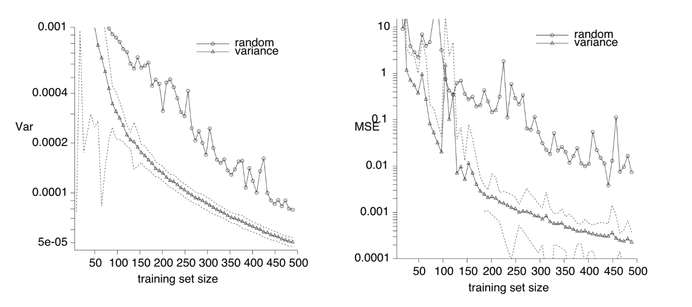
3.1.6 Active Learning in Ranking and Comparison
Many researchers have shown that making comparisons is easier and more convenient for users than assigning a specific score to each item. Individual comparisons yield a complete ranking over a set of \(n\) objects \(\Theta = (\theta_1, \theta_2, \cdots, \theta_n)\). This ranking is defined as a mapping \(\sigma : \{1, \cdots, n\} \rightarrow \{1,\cdots, n\}\) that orders the set of objects \(\Theta\). Specifically, for a single \(\sigma\), \(\sigma(\Theta) = \theta_{\sigma(1)} < \theta_{\sigma(2)} < \cdots < \theta_{\sigma(n-1)} < \theta_{\sigma(n)}\), where \(\theta_{i} < \theta_{j}\) means that \(\theta_{i}\) is rated lower than \(\theta_{j}\).
For any \(n\) elements to be ranked, there are \(n!\) possible orderings that can result in the correct complete ranking. Given that a lower bound on sorting is \(n\log n\), obtaining a guaranteed true rating over \(n\) objects requires \(n\log n\) pairwise comparisons if those comparisons are chosen at random. This number can be quite high and costly in many applications, especially since most ranking information comes from humans. The more comparisons they have to make, the more money and time is spent. This process can also be inefficient, as some comparisons provide more value to the learning process than others, making some comparisons a waste. This inefficiency can be detrimental in fields like psychology and market research, where comparisons are heavily utilized, and a faster process could offer significant benefits.
The reason the lower bound on the number of comparisons is \(n\log n\) is that it assumes no prior information about the underlying space and field, so comparisons are chosen at random. However, leveraging the structures within the comparison space can provide more information about which comparisons are most valuable. For example, (G. and Nowak 2011) discusses how eye doctors have a wide range of options when assigning prescriptions for glasses, yet patients do not see them making many comparisons before deciding on the best option. This is because eye doctors incorporate domain knowledge into the process and only ask clients for comparisons when necessary. Applying similar knowledge in the ranking field leads to an active learning approach that selects data based on the relevance of a comparison query toward finding the final \(\sigma(\Theta)\).
Geometric Approach to Comparisons
In this section, we will review the paper (G. and Nowak 2011), which explores active learning within data that can be embedded in a multi-dimensional space. In this context, comparisons between two different objects divide the space into halves, with one object being superior in each half. By leveraging such spatial information, the paper develops a geometric approach to ranking and active learning. This spatial information serves as the domain knowledge that informs which comparisons to perform to achieve the ranking.
For this application, the following terms are defined:
\(R^d\): The space in which objects can be embedded.
\(\theta_1, \cdots,\theta_n\): The objects, now representing their locations in \(R^d\).
For each ranking \(\sigma\), there is a reference point \(r_{\sigma} \in R^d\), such that if, according to ranking \(\sigma\), \(\theta_{i} < \theta_{j}\) (object \(i\) is worse than \(j\)), then \(||\theta_i - r_{\sigma}|| < ||\theta_j - r_{\sigma}||\). In other words, object \(i\) is closer to the reference point \(r_{\sigma}\) of the ranking than object \(j\).
\(\Sigma_{n,d}\): The set of all possible rankings of the \(n\) objects that satisfy the embedding distances in the space \(R^d\) as defined above. Note that not all possible rankings will satisfy the embedding conditions, but multiple rankings might satisfy all those conditions.
For every ranking \(\sigma\), there is \(M_n(\sigma)\), the number of pairwise comparisons needed to identify the ranking. When comparisons are done at random, \(E[M_n(\sigma)] = n\log n\). The paper (G. and Nowak 2011) examines this quantity to demonstrate that it can be reduced by incorporating spatial knowledge.
\(q_{i,j}\): The query of comparison between objects \(i\) and \(j\).
Embedding Space

To properly understand how to select the most valuable queries, it is essential to examine the space where the objects exist and how the queries divide that space to determine the proper rankings. For this example, in Figure 3.6, the paper (G. and Nowak 2011) operates in \(R^2\) space with three objects: \(\theta_1\), \(\theta_2\), and \(\theta_3\). There are pairwise queries \(q_{1,3}\), \(q_{2,3}\), and \(q_{1,2}\) between them, denoted by solid lines equidistant from the two objects they compare. These lines split the \(R^2\) space into halves, with each half closer to one of the two objects. The paper colors the side of the worse object for each query in dark grey and takes the intersection of these halves, resulting in the dark grey region in the image. This region indicates \(\Sigma_{n,2}\) since all points follow the embedding conditions. Specifically, for every point \(r\) in the dark grey area, \(||\theta_3 - r|| < ||\theta_2 - r|| < ||\theta_1 - r||\), meaning \(\theta_3 < \theta_2 < \theta_1\). Thus, every point \(r\) is one of the \(r_\sigma\) representing their respective rankings \(\sigma \in \Sigma_{n,2}\). In other words, the paper aims to have the reference points and dark grey region closest to the worst object and furthest from the best object.
The authors also denote the label for each query \(q_{i,j}\), such as label \(y_{i,j} = 1\{q_{i,j}\}\) (for example, \(y_{1,2} = 0, y_{3,2} = 1\)). This allows for deciding how to label new queries represented by dashed and dotted lines, depending on which objects each query compares. Focusing on the dotted line, called \(q_{i,4}\), where \(i={1,2,3}\), and considering potential locations of \(\theta_4\), the line must be equidistant from one of the three objects in the picture and \(\theta_4\), meaning \(\theta_4\) can be placed in three different locations. If the query performed is \(q_{2,4}\), then \(\theta_4\) will be closer to the dark grey area than \(\theta_2\), thus \(y_{2,4} = 0\). However, if \(q_{1,4}\) or \(q_{3,4}\) are performed, \(\theta_4\) will be further from the dark grey area than \(\theta_1\) or \(\theta_3\), meaning \(y_{1,4} = y_{3,4} = 1\). In this case, the labels are contradictory and depend on which object they are compared with, making such a query \(q_{i,4}\) ambiguous.
In contrast, the authors analyze the dashed line, called \(q_{i,5}\), where \(i={1,2,3}\), and consider potential locations of \(\theta_5\). Since the line must be equidistant from one of the three objects in the picture and \(\theta_5\), it can be placed in three different locations. If one of the three potential queries is performed, \(\theta_5\) will be closer to the dark grey area than \(\theta_1\), \(\theta_2\), and \(\theta_3\), meaning \(y_{1,5} = y_{2,5} = y_{3,5} = 0\). In this case, all labels are the same regardless of which object is used, meaning such a query will not be contradictory, as all agree on the label.
The goal is to perform as many ambiguous queries as possible and skip non-ambiguous queries to decrease the total \(M_n(\sigma)\). Intuitively, if there is contradictory information about a query, it needs to be erformed so that a human can clarify its direction. Conversely, if all sources of information from the domain space agree on the query’s label, that information can be used without asking a human, incorporating the knowledge of the embedding distances.
Lastly, to consider the general case of the \(R^d\) space, rather than discussing halves of the image, it is essential to discuss half-spaces. Similarly, consider the half-space that assigns a label of \(1\) to the query and the half-space assigning a label of \(0\). If both half-spaces exist, they have conflicting information on the query, making the query ambiguous. However, if one of the half-spaces does not exist, it means the other is the full space, representing consistency in the label assignment and a non-ambiguous query.
Algorithms for Ambiguous Query Selection
\begin{algorithm} \caption{Query Selection Algorithm} \begin{algorithmic} \State \textbf{input:} $n$ objects in $\mathbb{R}^d$ \State \textbf{initialize:} objects $\theta_1, \dots, \theta_n$ in uniformly random order \For{$j=2, \dots, n$} \For{$i=1, \dots, j-1$} \If{$q_{i,j}$ is ambiguous} \State request $q_{i,j}$'s label from reference \Else \State impute $q_{i,j}$'s label from previously labeled queries \EndIf \EndFor \EndFor \State \textbf{output:} ranking of $n$ objects \end{algorithmic} \end{algorithm}
The standard algorithm in Algorithm 1 requests labels for \(q_{i,j}\) if those queries are ambiguous; otherwise, it infers the information from prior comparisons and their labels.
It is important to demonstrate that the number of comparisons decreases. Specifically, (G. and Nowak 2011) shows that this algorithm has \(E[M_n(\sigma)] = O(d\log n)\), where \(d\) is the dimension of the space and \(d < n\), which improves on the \(O(n\log n)\) baseline. The proof can be studied in detail in the paper itself, but at a high level, it starts by reasoning about the probability of a query being ambiguous and a comparison being requested from a human, thus representing \(M_n = \Sigma_{k=1}^{n-1}\Sigma_{i=1}^k 1\{Requestq_{i,k+1}\}\). For that, the authors define \(Q(i,j)\), which represents the number of different rankings that exist for \(i\) elements in \(j\)-dimensional space (e.g., \(Q(1,d) = 1, Q(n,0) = 1, Q(n,1) = n!\)). In that case, \(|\Sigma_{n,d}| = Q(n,d)\). Further, using recurrence relations for \(Q(i,j)\), the authors derive that \(|\Sigma_{n,d}| = Q(n,d) = O(n^{2d})\), which is omitted here. Analogously, the authors define \(P(i,j)\), which represents the number of rankings in \(\Sigma_{n,d}\) that will still be possible with the addition of a new element \(i+1\) to the ranking objects. Referring back to Figure 3.6, \(P(i,j)\) estimates how much of the dark grey area will still exist after making a query for \(i+1\). As indicated there, the dotted line ambiguous query did not change the dark grey a rea at all (\(P(n,d) = Q(n,d)\)), whereas the dashed non-ambiguous query would cut a piece from it (\(P(n,d) < Q(n,d)\)). Thus, \(Request q_{i,k+1} = P(k,d) / Q(k,d)\), so a higher value indicates more possible rankings and an ambiguous query that needs to be requested to obtain more useful information. With this in mind, the authors derive that \(E[M_n(\sigma)] = O(d\log n)\), showing that fewer queries are needed for effective ranking.
The issue with this algorithm is that only one human provides the answers to the requested queries, which means it does not account for their biases. An alternative approach is a Robust Query Selection Algorithm (RQSA) (G. and Nowak 2011), which uses majority voting for every query to indicate the ground truth of the query’s label. However, the authors consider that a group of people can still give incorrect or divided responses. If the votes for each answer are almost equal in number, the authors push that query to the end of the algorithm to see if it can become a non-ambiguous query with more information learned. If it does not, an odd number of voters is used to determine the final ranking.
Performance Analysis
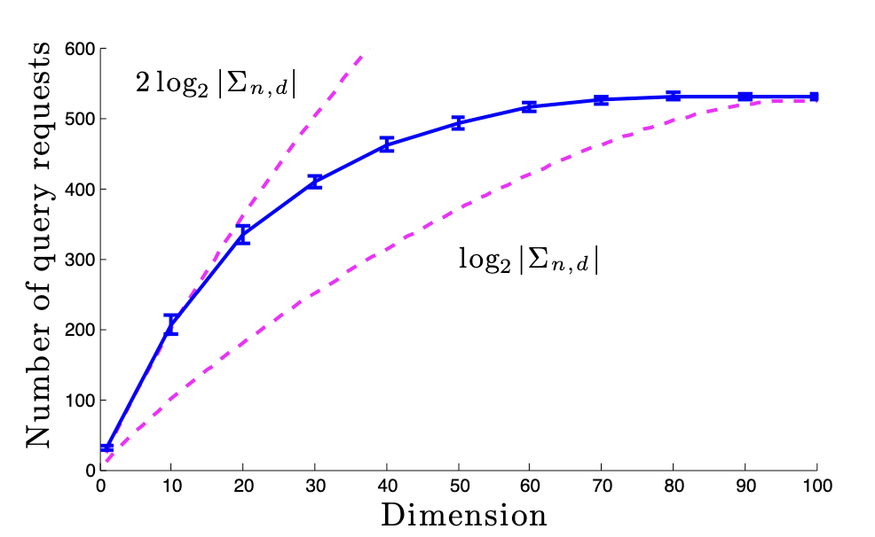
| Dimension | 2 | 3 | |
|---|---|---|---|
| % of queries | mean | 14.5 | 18.5 |
| std | 5.3 | 6 | |
| Average error | \(d(\bar{y}, y)\) | 0.23 | 0.21 |
| \(d(\bar{y}, y)\) | 0.31 | 0.29 |
Figure 3.7 shows that the number of comparisons fits within the expected bounds, as \(\log|\Sigma_{n,d}| = \log(n^d) = d\log n\). To derive that graph, authors (G. and Nowak 2011) sampled 100 random data points in a \(R^d\) space, where \(d\) took on 10 different values as indicated on the graph. Each dimension’s experiments were repeated 25 times for consistency.
With regard to the accuracy and performance of the method, the authors did a ranking experiment on 100 different audio signals, results of which can be seen in Table 3.1. The ground truth labels came from humans, indicated by \(y\) in the table. That resulted in the existence of noise and potential errors in the ground truth, which could influence the performance of both the baseline algorithm that does all comparisons (\(\tilde{y}\)) and the Robust Query Selection Algorithm (RQSA) proposed in ?sec-QSA (\(\hat{y}\)). As can be seen in both 2 and 3-dimensional spaces RQSA performed worse by \(8\%\) compared to the baseline, which indicates that active learning that uses the domain information can still be erroneous due to the inference of certain comparisons that sometimes may not be entirely correct. However, as can be seen by the upper part of Table 3.1, significantly less queries were requested compared to the baseline, which means that the approach can have a significant benefit at a cost of slight loss in accuracy.
User Information as Domain Knowledge for Active Learning
An alternative source of domain knowledge could be users themselves, who can indicate their uncertainty when it comes to comparing two objects. Prior studies have shown (Amershi et al. 2014) that when presented with only two options when selecting which object is better, but not being able to properly decide, users would get frustrated and tend to respond more faultyly, creating noise and incorrect responses in the data. Through feedback and other studies (Guillory and Bilmes 2011) it was determined that presenting users with an option of indifference between the two objects can remove those problems. Moreover, in connection to active learning, the authors show that such an option helps to select more informative queries since it provides more domain knowledge that can be used, resulting in a decrease in the number of queries required.
For this problem, the following terms are defined:
\(c\) - a cost function that represents user preferences, and the result the model has to determine at the end of training. The preferred items will have lower costs, and less preferred ones will have higher costs. The goal is to determine this function with the fewest possible number of queries using active learning.
\(H\) - a set of hypotheses over the possible cost functions, where for each \(h \in H\) there is a cost function \(c_h\) associated with it.
\(h^*\) - a true hypothesis that the model needs to determine, which has cost \(c_{h^*}\) associated with it
\(t(x,y)\) - a test performed to compare items \(x\) and \(y\) (the user is being asked to provide a response to which item is better). Those tests result in changes and adjustments to \(H\) as more information is learned.
\(o(x,y)\) - observation or result of \(t(x,y)\), where \(o(x,y) \in \{x<y, x>y\}\)
\(S = \{(t_1, o_1), (t_2, o_2),...,(t_m, o_m)\}\) - a sequence of \(m\) pairs of tests and observations
\(w(H|S)\) - probability mass of all hypotheses that are still consistent with the observations (similar to the dark grey area from Figure 3.6 and \(Q(i,j)\) discussed in ?sec-QSA. This means that if \(h \in H\) is inconsistent with user responses received, it is removed from \(H\).
With the key terms defined, let’s consider the noiseless base setting where users only have two options for response. Those components will also later be translated to the setting with the third option so the true cost function can be determined there. \(w(H|S)\) is the sum of the weights of all hypotheses that are still consistent with the evidence. \[\begin{aligned} w(H|S) = \sum_{h \in H} w(h | S)\\ \end{aligned} \tag{3.25}\] Each \(w(h|S)\) is a probability of the evidence’s existence given such hypothesis: \[\begin{aligned} w(h|S) = p(S|h) \end{aligned} \tag{3.26}\] Such probability comes from the test-observation pairs since they compose the set \(S\). Moreover, each test is independent of other tests, which gives: \[\begin{aligned} p(S|h) = \prod_{(t,o) \in S} p((t,o) | h) \end{aligned} \tag{3.27}\] In the noiseless setting, users will select an option that minimizes their cost function (selecting more preferred items), mathematically defined as: \[\begin{aligned} p((t, o = x) | h) = \begin{cases} 1 & c_h(x) < c_h(y)\\ 0 & else \end{cases} \end{aligned} \tag{3.28}\]
6.3.3.1 User Noise Modeling
As has been discussed, users are not perfect evaluators and even get frustrated if unable to select the better option. Prior work (Amershi et al. 2014) has shown that treating users as perfect can lead to poor performance. That gave rise to accounting for noise in users’ responses, but a majority of such work applies the same noise to all queries and all responses. While those led to great performance results (Guillory and Bilmes 2011), they don’t accurately reflect the real world, which gave rise to the idea of creating query-based noise.
Effectively, for some of the queries it is important to incorporate the fact that the user is unsure and noisy, but for others, if the user is confident, noise in the response is not needed at all. For comparison-based learning, this means that the noise is related to the costs of the two items compared. Specifically for items \(x\) and \(y\), if \(c_{h^*}(x) \simeq c_{h^*}(y)\) then the items are hard to distinguish for the user, so here it is preferred to incorporate user uncertainty and noise. But if \(c_{h^*}(x) >> c_{h^*}(y)\), the user will certainly select \(y\) and the other way around, which is where the noise is not needed.
Query-dependent noise is also supported in the psychology literature, which means that such an approach is more related to the real world. In particular, psychologists talk about the Luce-Sheppard Choice rule (Shepard 1957) when talking about comparisons. This rule previously gave rise to a logistic model based on the noise (Viappiani and Boutilier 2010) where the probability of observation for a given test is: \[\begin{aligned} p((t, o = x) | h) \propto exp(-\gamma * c_h(x)) \end{aligned} \tag{3.29}\]


Figure 3.8, Figure 3.9 demonstrate the difference between the noiseless setting and incorporating the Luce-Sheppard Choice rule. GBS is the baseline model with only 2 response options, and CLAUS is the model with the uncertainty option added. The figures show how incorporating such noise influences and smoothes the probability distribution of the user’s response.
6.3.3.2 User Uncertainty
We will now discuss the functionality of CLAUS, which is an algorithm designed by (Holladay et al. 2016) that allows users to select an uncertain response about the two options that they need to rank. The authors model such uncertainty as \(\epsilon\) and it is associated with each \(c_h\), so now every hypothesis \(h\) is defined over a pair of \((c_h, \epsilon_h)\). It is important to note that the goal is to still learn and maintain our objective on \(c\), \(\epsilon\) is only necessary to model the users’ responses. The uncertainty relates to the cost function in the following way: \[\begin{aligned} |c_h(x) - c_h(y)| < \epsilon_h \end{aligned} \tag{3.30}\] this means that the user is uncertain between items \(x\) and \(y\) and their cost difference is negligible such that the user is not able to select which item is better. This in turn gives more information about the real value of the two items, as a binary response would indicate the user’s preference towards one item, which will not be real and will skew the cost functions.
This causes modifications of the problem set-up:
For test \(t(x,y)\) the observation will be \(o(x,y) \in \{x<y, x>y, \tilde{xy}\}\), where \(\tilde{xy}\) is the uncertain response.
The probability distribution over the user’s response (Equation 3.28) will now be defined as: \[\begin{aligned} p((t, o = x) | h) = \begin{cases} 1 & c_h(x) < c_h(y) - \epsilon_h\\ 0 & else \end{cases} \end{aligned} \tag{3.31}\]
\[\begin{aligned} p((t, o = \tilde{xy}) | h) = \begin{cases} 1 & |c_h(x) - c_h(y)|^2 < \epsilon_h^2\\ 0 & else \end{cases} \end{aligned} \tag{3.32}\]
This means the user confidently selects \(x\) when it is better than \(y\) by more than \(\epsilon\), but if the squared difference of the cost functions of two items is negligible by \(\epsilon\) user will choose the indifferent option.
- Finally this also updates the noise model (Equation 3.29): \[\begin{aligned} p((t, o = x) | h) \propto \exp(-\gamma * [c_h(x) - c_h(y)]) \end{aligned} \tag{3.33}\]
\[\begin{aligned} p((t, o = \tilde{xy}) | h) \propto exp(-1/\epsilon_h^2 * [c_h(x) - c_h(y)]^2) \end{aligned} \tag{3.34}\]
6.3.3.3 Performance Analysis
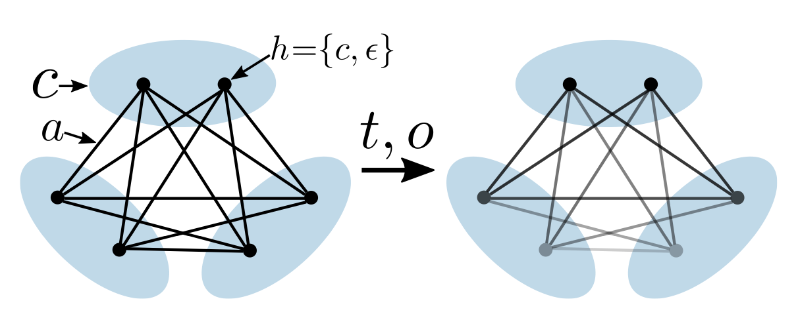
Before diving deeper into the comparisons of performance, it is important to indicate that rather than predicting a specific pair \((c_h, \epsilon_h)\), the algorithm focuses on predicting a group of pairs that are similar to one another, otherwise called equivalence class (Figure 3.10), which indicates not essentially different hypothesis for the cost function and uncertainty. That information is learned through each new test, as the algorithm updates the information about \(c\) and \(\epsilon\) that distinguishes between the distinct \(h\), finding the equivalence groups among them. Moreover, the authors tweaked the parameter responsible for the size of the equivalence class (how many hypotheses can be grouped together at a time).
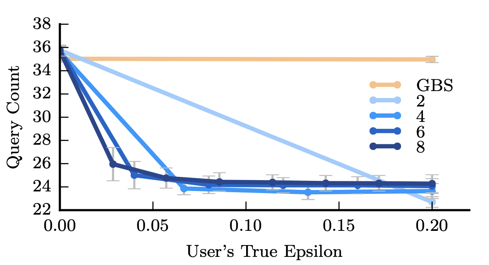
| Category | Accuracy | Query Count |
|---|---|---|
| GBS - About Equal | \(94.15 \pm 0.52\) | \(36.02 \pm 0.03\) |
| GBS - Not Sure | \(\textbf{94.66} \pm \textbf{0.55}\) | \(35.95 \pm 0.04\) |
| CLAUS - About Equal | \(91.56 \pm 0.84\) | \(\textbf{25.93} \pm \textbf{0.41}\) |
| CLAUS - Not Sure | \(90.86 \pm 0.74\) | \(26.98 \pm 0.47\) |
The first performance evaluation is done on the number of queries and confirms that it decreases in Figure 3.11. The GBS model serves as the baseline, as it will do all of the comparison queries using the binary response options. The CLAUS model is measured over different values of \(\epsilon\) on the x-axis and over different sizes of the equivalence sets indicated by different shades of blue. Figure shows that all variants of CLAUS use approximately 10 fewer queries on average compared to GBS. Moreover, using bigger-sized equivalence classes can further decrease the number of needed queries. The most optimal \(\epsilon \simeq 0.07\), after which higher \(\epsilon\) does not provide any benefit.
Lastly, the authors considered the performance difference, which is indicated in Table 3.2. For that authors used two different labels for the uncertainty button in CLAUS, it was either labeled as "About Equal" or "Not Sure" as those can provoke different responses and feelings in users. Moreover, GBS and CLAUS-type responses were mixed in the same set of questions to the user, which splits the metrics for both in two as can be seen in Table 3.2. The performance of CLAUS is lower by \(3\%\) on average, indicating similar results to ?sec-geo_app, showing that a smaller number of queries can still lead to a performance loss. However, the second column of Table 3.2 supports the information in Figure 3.11, as it also shows that 10 fewer queries were conducted on average.
3.1.7 Active Preference-Based Learning of Reward Functions
Active learning can be essential in learning within dynamic systems and environments. Say we have an agent in an environment, and we want it to conform to a certain behavior as set by a human. How exactly do we go about doing this? In a traditional RL setting, this is solved by a class of algorithms under Inverse Reinforcement Learning. Techniques such as VICE and GAIL attempt to learn a reward function that can distinguish between states visited by the agent and states desired to be visited as defined by a human. In effect, a human will demonstrate what it would like the agent to do in the environment, and from there, learning is done. However, what if humans do not precisely know how an agent should optimally behave in an environment but still have some opinion on what trajectories would be better than others? This is where a paper like Active Preference-Based Learning of Reward Functions comes into the picture. The paper aims to use human preferences to aid an agent’s learning within a dynamic system.
A dynamic system contains human input, robotic input, and an environment state. The transitions between states is defined by \(f_{HR}\), so that we have: \[x^{t+1} = f_{HR}(x^t, u_R, u_H) \tag{3.35}\] At a given time step \(t\), we have \(x_t\), \(u_R^t\), and \(u_H^t\). This can be encapsulated into a single \(d\) dimensional feature vector that the authors denote as \(\phi\). The paper then assumes that the underlying reward model we are trying to learn can be represented linearly. If we have our human reward preference function defined as \(r_H\), this means we can write \(r_H\) as: \[r_H(x^t, u_R^t, u_H^t) = w^{\intercal}\phi(x^t, u_R^t, u_H^t) \tag{3.36}\] Because the reward function is linear, we can take the weight vector out of the summation if we want to calculate the reward over an entire trajectory: \[\begin{aligned} R_{H}(x^0, u_R, u_H) &= \sum_{t=0}^{N} r_{H}(x^t, u^t, u_H^t)\\ \Phi &= \sum \phi(x^t, u_R^t, u_H^t)\\ R_H(traj) &= w\cdot\Phi(traj)\end{aligned} \tag{3.37}\]
Properties of \(W\)
First, the scale of \(w\) does not matter because we only care about the relative rewards produced with \(w\) (given two different trajectories, we want to answer the question of which trajectory a human would prefer, i.e. which one has a higher preference reward). This means we can constrain \(||w|| <= 1\), so the initial prior is uniform over a unit ball. From here, we can determine a probabilistic expression to assess whether we should prefer trajectory A or B (because it can be noisy with human input). Let \(I_t = +1\) if the human prefers trajectory \(A\) and let \(I_t = -1\) if the human prefers trajectory \(B\). We get the following for \(p(I_t | w)\).
\[\begin{aligned} p(I_t = +1|w) &= \frac{exp(R_H(traj_A))}{exp(R_H(traj_A)) + exp(R_H(traj_B))}\\ p(I_t = -1|w) &= \frac{exp(R_H(traj_B))}{exp(R_H(traj_A)) + exp(R_H(traj_B))} \end{aligned} \tag{3.38}\]
We can re-write this expression to make it cleaner, using the following substitution: \[\psi = \Phi(traj_a) - \Phi(traj_b) \tag{3.39}\] \[f_{\psi} (w) = p(I_t|w) = \frac{1}{1 + exp(-I_tw^{\intercal}\psi)} \tag{3.40}\]
The idea now is that we can update \(p(w)\) everytime we get a result from a human preference query using Bayes:
\[p(w|I_t) <- p(w) \cdot p(I_t|w) \tag{3.41}\]
We do not need to know \(p(I_t)\) because we can use an algorithm like the Metropolis algorithm to actually sample.
Generating Queries
This is where the interesting part of the paper comes into play. How do we actually generate queries for the user to pick between? This paper synthetically generates queries through an optimization process and then presents them to a human to pick between. The idea is that we want to generate a query that maximizes the conditional entropy \(H(I|w)\). There are a few ways to think about this – intuitively we want to pick a query that we are most uncertain about given our current weights (thus having the highest conditional entropy given the weights). The way the authors of the paper frame this originally in the paper is that "we want to find the next query such that it will help us remove as much volume (the integral of the unnormalized pdf over w) as possible from the space of possible rewards." Mathematically this can be written as:
\[max_{x^0, u_R, u_H^A, u_H^B} min\{E[1-f_{\psi}(w)], E[1 - f_{-\psi}(w)]\} \tag{3.42}\]
But how exactly do we optimize this expression mathematically? After all, we need to use this expression to generate synthetic queries. The answer is to sample \(w_1, ... w_m\) from \(p(w)\). We can assume we are sampling points from a point cloud, thus approximating the distribution \(p(w)\) as
\[p(w) = \frac{1}{M} \sum \delta (w_i). \tag{3.43}\] We can now approximate the expectation expression like so: \[E[1 - f_{\psi}(w)] = \frac{1}{M} (\sum 1 - f_{\psi}(w_i)) \tag{3.44}\]
and now we can optimize the expression to generate a synthetic query! Altogether, the algorithm looks like the following:
\begin{algorithm} \caption{Preference-Based Learning of Reward Functions} \begin{algorithmic} \State \textbf{input:} features $\phi$, horizon $N$, dynamics $f$, $iter$ \State \textbf{initialize:} $p(w) \sim Uniform(B)$, for a unit ball $B$ \While{$t < iter$} \State $W \gets M$ samples from $AdaptiveMetropolis(p(w))$ \State $(x^0, u_R, u^A_H, u^B_H) \gets SynthExps(W,f)$ \State $I_t \gets QueryHuman(x^0, u_R, u^A_H, u^B_H)$ \State $\varphi = \Phi(x^0, u_R, u^A_H) - \Phi(x^0, u_R, u^B_H)$ \State $f_\varphi(w) = \min(1, I_t\exp(w^\top \varphi))$ \State $p(w) \gets p(w) \cdot f_\varphi(w)$ \State $t \gets t+1$ \EndWhile \State \textbf{output:} distribution of $w: p(w)$ \end{algorithmic} \end{algorithm}
Batching Queries
The algorithm itself works well, however there ends up being a bottle neck that each query needs to be synthesized before being sent to the human – one at a time. In other words, the human gives their feedback, waits for a query to be synthesized, and then gives another data point of feedback. There is no room for parallelization and so the authors proposed a second algorithm in a separate paper that allows for the batching of queries. Simply put, we change the mathematical expression to the following:
\[max_{\xi_{ib+1_A}, \xi_{ib+1_B}, ... , \xi_{ib+b_A}, \xi_{ib+b_B} H(I_{ib+1}, I_{ib+2}, .., I_{ib+b} | w)} \tag{3.45}\]
Naively, we could consider optimizing this in the greedy fashion. This would mean just synthetically generating \(b\) independent queries. The obvious drawback of this method would be that the queries would likely be very similar to each other. The authors propose a few other heuristics that would help guide the algorithm away from generating very similar queries. As an example, the authors propose Medioid Selection where we have to cluster \(B\) greedy vectors into \(b < B\) groups and pick one vector from each group (the medioid). The authors also propose two other methods rooted in providing different queries: boundary medioids selection and successive elimination. They are best visually depicted as:
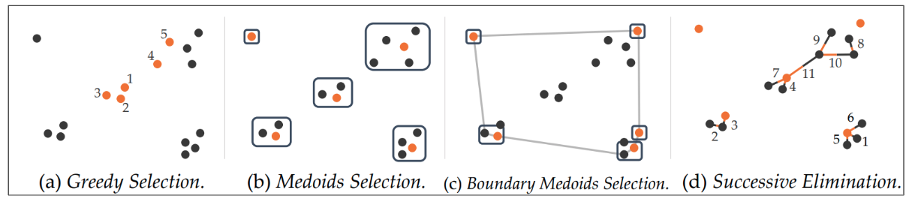
Results
The authors test both the non-batched and variety of batched learning algorithms on multiple environments:
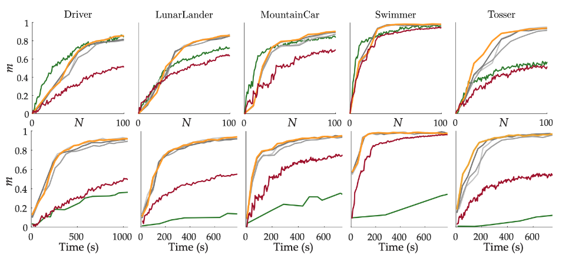
What is interesting to note is that when graphed over \(N\) the non-batched active learning approach does in the same ball-park of performance as the batched approaches. However, if you graph it over time, we see that learning is a much slower process when not-batched.
3.1.8 Application: Foundation Models for Robotics
Modern foundation models have been ubiquitous in discussions of powerful, general purpose AI systems that can accomplish myriad tasks across many disciplines such as programming, medicine, law, open question-answering and much more, with rapidly increasing capabilities (Bommasani et al. 2022). However, despite successes from large labs in controlled environments (Brohan et al. 2023) foundation models have not seen ubiquitous use in robotics due to shifting robot morphology, lack of data, and the sim to real gap in robotics (Walke et al. 2023). For this subsection we explore two promising approaches known as R3M and Voltron which are the first to leverage pre-training on vast amounts of data towards performance improvement on downstream robotic tasks despite the aforementioned issues (Nair et al. 2022; Karamcheti et al. 2023).
R3M: Universal Visual Representation for Robotics
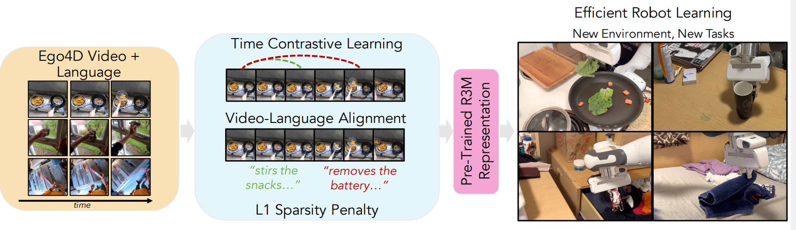
R3M represents a significant advancement in the field of robotic manipulation and learning. This model diverges from traditional approaches that rely on training from scratch within the same domain on the same robot data as instead it leverags pretraining on large datasets, akin to the practices in computer vision and natural language processing (NLP) where models are trained on diverse, large-scale datasets to create reusable, general-purpose representations.
The core principle behind R3M is its training methodology. It is pre-trained on a wide array of human videos, encompassing various activities and interactions. This diverse dataset enables the model to capture a broad spectrum of physical interactions and dynamics, which are crucial for effective robotic manipulation known as EGO4D (Grauman et al. 2022). However, prior papers could not fit this dataset well, and R3M leveraged. The training utilizes a unique objective that combines time contrastive learning, video-language alignment, and a sparsity penalty. This objective ensures that R3M not only understands the temporal dynamics of scenes (i.e., how states transition over time) but also focuses on semantically relevant features, such as objects and their interrelations, while maintaining a compact and efficient representation.
What sets R3M apart in the realm of robotics is its efficiency and effectiveness in learning from a limited amount of data. The model demonstrates remarkable performance in learning tasks in the real world with minimal human supervision – typically less than 10 minutes. This is a stark contrast to traditional models that require extensive and often prohibitively large datasets for training. Furthermore, R3M’s pre-trained nature allows for its application across a variety of tasks and environments without the need for retraining from scratch, making it a versatile tool in robotic manipulation. The empirical results from using R3M are compelling, leading to a 10% improvement over training from a pretrained image-net model, self-supervised approaches such as MoCo or even CLIP (Deng et al. 2009; He et al. 2020; Radford et al. 2021). Note however, that R3m does not use any language data which leaves quite a bit of supervision to be desired.
Voltron: Language Driven Representation Learning for Robotics
Building off the success of R3M, Voltron proposes a further extension of leveraging self-supervision and advancements in foundation models, and multi-modality. Voltron takes on an intuitive and simple dual use objective, where the trained model alternates between predicting the task in an image through natural language and classifying images based on a natural text label. This forces a nuanced understanding of both modalities (Radford et al. 2021).
Voltron’s approach is distinguished by its versatility and depth of learning. It is adept at handling a wide range of robotic tasks, from low-level spatial feature recognition to high-level semantic understanding required in language-conditioned imitation and intent scoring. This flexibility makes it suitable for various applications in robotic manipulation, from grasping objects based on descriptive language to performing complex sequences of actions in response to verbal instructions.

The authors rigorously test Voltron in scenarios such as dense segmentation for grasp affordance prediction, object detection in cluttered scenes, and learning multi-task language-conditioned policies for real-world manipulation with up to 15% improvement over baselines. In each of these domains, Voltron has shown a remarkable ability to outperform existing models like MVP and R3M, showcasing its superior adaptability and learning capabilities (Xiao et al. 2022).
Moreover, Voltron’s framework allows for a balance between encoding low-level and high-level features, which is critical in the context of robotics. This balance enables the model to excel in both control tasks and those requiring deeper semantic understanding, offering a comprehensive solution in the realm of robotic vision and manipulation.
Voltron stands as a groundbreaking approach in the field of robotics, offering a language-driven, versatile, and efficient approach to learning and manipulation. Its ability to seamlessly integrate visual and linguistic data makes it a potent tool in the ever-evolving landscape of robotic technology, with potential applications that extend far beyond current capabilities. Interesting the authors show Voltron does not beat R3M off the shelf but only when trained on similar amounts of data. Nevertheless, Voltron’s success in diverse tasks and environments heralds a new era in robotic manipulation, where language and vision coalesce to create more intelligent, adaptable, and capable robotic systems.
3.1.9 Conclusion
On the note of applying active learning to RL and environment settings, there have been many recent papers that have attempted to extend this to more modern RL environments. For example, the paper "When to Ask for Help" (Xie et al. 2022) examines the intersection of autonomous and active learning. Instead of just expecting an RL agent to autonomously solve a task, making the assumption that an agent could get stuck and need human input to get "unstuck" is a key insight of the paper. In general, there has been an emphasis in recent literature in robotics on not just blindly using demonstration data as a form of human input, but rather actively querying a human and using this to better synthesize correct actions.
Active learning holds promise for enhancing AI models in real-world scenarios, yet several challenges persist. This discussion aims to provide an overview of these challenges.
Task-Specific Considerations:
For certain tasks, the input space of a model may have some rare yet extremely important pockets which may never be discovered by active learning and may cause severe blindspots in the model. In medical imaging for instance, there can be rare yet critical diseases. Designing AL strategies for medical image analysis must prioritize rare classes, such as various forms of cancers. Oftentimes, collecting data around those rare classes is not a recommendation of the active learning process because these examples constitute heavy distribution drifts from the input distribution a model has seen.
Complex Task Adaptation:
AL has predominantly been adopted for simple classification tasks, leaving more other types of tasks (generative ones for instance), less explored. In Natural Language Processing, tasks like natural language inference, question-answering pose additional complexities that affect the direct application of the active learning process. While machine translation has seen AL applications, generation tasks in NLP require more thorough exploration. Challenges arise in obtaining unlabeled data, particularly for tasks with intricate inputs.
Unsupervised and Semi-Supervised Approaches:
In the presence of large datasets without sufficient labels, unsupervised and semi-supervised approaches become crucial. These methods offer a means to extract information without relying on labeled data for every data point, potentially revolutionizing fields like medical image analysis. There is an ongoing need for methods that combine self/semi-supervised learning with active learning.
Algorithm Scalability:
Scalability is a critical concern for online AL algorithms, particularly when dealing with large datasets and high-velocity data streams. The computational demands of AL can become prohibitive as data volume increases, posing challenges for practical deployment. Issues of catastrophic forgetting and model plasticity further complicate scalability, requiring careful consideration in algorithm design.
Labeling Quality Assurance:
The effectiveness of most online AL strategies hinges on the quality of labeled data. Ensuring labeling accuracy in real-world scenarios is challenging, with human annotators prone to errors, biases, and diverse interpretations. Addressing imperfections in labeling through considerations of oracle imperfections becomes essential in real-life AL applications. Solutions for cleaning up data and verifying its quality need to be more aggressively pursued.
Data Drift Challenges:
Real-world settings introduce data drift, where distributions shift over time, challenging models to adapt for accurate predictions. These shifts can impact the quality of labeled data acquired in the AL process. For example, the criterion or proxy used for selecting informative instances may be thrown off when the distribution a model is trained on, and the distribution we want it to perform well on, are too far away from one another.
Evaluation in Real-Life Scenarios:
While AL methods are often evaluated assuming access to ground-truth labels, the real motivation for AL lies in label scarcity. Assessing the effectiveness of AL strategies becomes challenging in real-life scenarios where ground-truth labels may be limited. In other words, one may verify the goodness of an AL algorithm within the lab, but once the algorithm is deployed for improving all sorts of models on all sorts of data distributions, verifying whether AL is actually improving a model is tricky, especially when collecting and labeling data from the target distribution is expensive and defeats the purpose of using AL in the first place.
By systematically addressing these challenges, the field of active learning in AI can progress towards more effective and practical applications.
In summary, active learning is a promising modern tool to model training that presents potential benefits. As was mentioned at the start, there are numerous approaches that can be employed by active learning, starting from reducing error of model’s prediction, reducing variance, to more conformal predictions. The flavor of active learning heavily depends on the applications, which include robotics, LLM, autonomous vehicles, and more. We discussed in more detail how to perform active learning for variance reduction in the case of predicting kinematics of the robotic arms, which showed decrease in MSE as well as more stable reduction in it. Next we talked about using active learning for reducing the number of comparisons required to create a ranking of objects, and the examples discussed were able to achieve that but with some loss in the prediction accuracy. Finally, we discussed how active learning can be used for modeling of reward functions within a dynamical system, which demonstrated improvements in performance and time required to achieve it. For a more hands-on experience with active learning and demonstrated example, we encourage the readers to explore a blogpost by Max Halford (Halford 2023).
3.2 Metric Elicitation
3.2.1 Introduction to Performance Metric Elicitation
In binary classification problems, selecting an appropriate performance metric that aligns with the real-world task is crucial. The problem of metric elicitation aims to characterize and discover the performance metric of a practitioner, reflecting the rewards or costs associated with correct or incorrect classification. For instance, in medical contexts such as diagnosing a disease or determining the appropriateness of a treatment, trade-offs are made for incorrect decisions. Not administering a treatment could lead to the worsening of a disease (a false negative), whereas delivering the wrong treatment could cause adverse side effects worse than not treating the condition (a false positive).
Rather than choosing from a limited set of default choices like the F1-score or weighted accuracy, metric elicitation considers the process of devising a metric that best matches the preferences of practitioners or users. This is achieved by querying an “oracle” who provides feedback on proposed potential metrics through pairwise comparisons. Since queries to humans are often expensive, the goal is to minimize the number of comparisons needed.
Note: Contents in this section are derived from “Performance Metric Elicitation from Pairwise Classifier Comparisons” by (Hiranandani et al. 2019a), which introduced the problem of metric elicitation and the framework for binary-class metric elicitation from pairwise comparisons. This section aims to present their work expository while providing additional motivation and intuitive explanations to supplement their work.
The motivation for the pairwise comparison aspect of metric elicitation stems from a rich history of literature in psychology, economics, and computer science (Samuelson 1938; Mas-Colell 1977; Varian 2006; Braziunas and Boutilier 2012; Tamburrelli and Margara 2014), demonstrating that humans are often ineffective at providing absolute feedback on aspects such as potential prices, user interfaces, or even ML model outputs (hence the comparison-based structure of RLHF, for instance). Additionally, confusion matrices accurately capture binary metrics such as accuracy, \(F_\beta\), and Jaccard similarity by recording the number of false positives, true positives, false negatives, and true negatives obtained by a classifier. The main goal of this chapter is to introduce two binary-search procedures that can approximate the oracle’s performance metric for two types of metrics (linear and linear-fractional performance metrics) by presenting the oracle with confusion matrices generated by various classifiers. Essentially, we are learning an optimal threshold for classification given a decision boundary for a binary classification problem.
First, we introduce some relevant notation that will later be used to formalize notions of oracle queries, classifiers, and metrics. In this context, \(X \in \mathcal{X}\) represents an input random variable, while \(Y \in \{0, 1\}\) denotes the output random variable. We learn from a dataset of size \(n\), denoted by \(\{(x, y)_i\}^n_{i=1}\), which is generated independently and identically distributed (i.i.d.) from some distribution \(\mathbb{P}(X, Y)\). The conditional probability of the positive class, given some sample \(x\), is denoted by \(\eta(\vec{x}) = \mathbb{P}(Y=1 | X=x)\). The marginal probability of the positive class is represented by \(\zeta = \mathbb{P}(Y=1)\).
The set of all potential classifiers is \(\mathcal{H} = \{h : \mathcal{X} \rightarrow \{0,1\}\}\). The confusion matrix for a classifier \(h\) is \(C(h, \mathbb{P}) \in \mathbb{R}^{2 \times 2}\), where \(C_{ij}(h, \mathbb{P}) = \mathbb{P}(Y=i, h=j)\) for \(i, j \in \{0,1\}\). These entries represent the false positives, true positives, false negatives, and true negatives, ensuring that \(\sum_{i,j}C_{ij}=1\). The set of all confusion matrices is denoted by \(\mathcal{C}\). Since \(FN(h, \mathbb{P}) = \zeta - TP(h, \mathbb{P})\) and \(FP(h, \mathbb{P}) = 1 - \zeta - TN(h, \mathbb{P})\), \(\mathcal{C}\) is actually a 2-dimensional space, not a 4-dimensional space.
Any hyperplane in the \((tp, tn)\) space is given by \(\ell := a \cdot tp + b \cdot tn = c\), where \(a, b, c \in \mathbb{R}\). Given a classifier \(h\), we define a performance metric \(\phi : [0, 1]^{2 \times 2} \rightarrow \mathbb{R}\). The value \(\phi(C(h))\), which represents the performance of a classifier with respect to a certain metric, is referred to as the utility of the classifier \(h\). We assume, without loss of generality, that a higher value of \(\phi\) indicates a better performance metric for \(h\). Our focus is to recover some metric \(\phi\) using comparisons between confusion matrices \(C(h)\), determined by classifiers \(h\), which approximates the oracle’s “ground-truth” metric \(\phi^*\).
Next, we introduce two classes of performance metrics—Linear Performance Metrics (LPM) and Linear-Fractional Performance Metrics (LFPM)—for which we will present two elicitation algorithms.
An LPM, given constants \(\{a_{11}, a_{01}, a_{10}, a_{00}\} \in \mathbb{R}^{4}\), is defined as:
\[\begin{aligned} \phi(C) &= a_{11} TP + a_{01} FP + a_{10} FN + a_{00} TN\\ &= m_{11} TP + m_{00} TN + m_{0}, \end{aligned} \tag{3.46}\]
where \(m_{11} = (a_{11} - a_{10})\), \(m_{00} = (a_{00} - a_{01})\), and \(m_{0} = a_{10} \zeta + a_{01} (1 - \zeta)\). This reparametrization simplifies the metric by reducing dimensionality, making it more tractable for elicitation. One example of an LPM is weighted accuracy, defined as \(WA = w_1TP + w_2TN\), where adjusting \(w_1\) and \(w_2\) controls the relative importance of different types of misclassification.
An LFPM, defined by constants \(\{a_{11}, a_{01}, a_{10}, a_{00}, b_{11}, b_{01}, b_{10}, b_{00}\} \in \mathbb{R}^{8}\), is given by:
\[\begin{aligned} \phi(C) &= \frac{a_{11} TP + a_{01} FP + a_{10} FN + a_{00} TN}{b_{11} TP + b_{01} FP + b_{10} FN + b_{00} TN}\\ &= \frac{p_{11} TP + p_{00} TN + p_{0}}{q_{11} TP + q_{00} TN + q_{0}}, \end{aligned} \tag{3.47}\]
where \(p_{11} = (a_{11} - a_{10})\), \(p_{00} = (a_{00} - a_{01})\), \(q_{11} = (b_{11} - b_{10})\), \(q_{00} = (b_{00} - b_{01})\), \(p_{0} = a_{10} \zeta + a_{01} (1 - \zeta)\), and \(q_{0} = b_{10} \zeta + b_{01} (1 - \zeta)\). This parametrization also simplifies the elicitation process by reducing the number of variables. Common LFPMs include the \(F_\beta\) score and Jaccard similarity, defined as:
\[F_{\beta} = \frac{TP}{\frac{TP}{1+\beta^{2}} - \frac{TN}{1+\beta^{2}} + \frac{\beta^{2} \zeta + 1 - \zeta}{1+\beta^{2}}}, \quad JAC = \frac{TP}{1 - TN}. \tag{3.48}\]
Setting \(\beta = 1\) gives the F1 score, which is widely used as a classification metric in machine learning.
3.2.2 Preliminaries
Confusion Matrices
Since we are considering all possible metrics in the LPM and LFPM families, we need to make certain assumptions about \(\mathcal{C}\). Particularly, we will assume that \(g(t) = \mathbb{P}[\eta(X) \geq t]\) is continuous and strictly decreasing for \(t \in [0, 1]\); essentially, \(\eta\) has positive density and zero probability.
Additionally, \(\mathcal{C}\) is convex, closed, and contained within the rectangle \([0, \zeta] \times [0, 1-\zeta]\), and is rotationally symmetric around its center, \((\frac{\zeta}{2}, \frac{1-\zeta}{2})\), where the axes represent the proportion of true positives and negatives. The only vertices of \(\mathcal{C}\) are \((0, 1-\zeta)\) and \((\zeta, 0)\), corresponding to predicting all \(0\)’s or all \(1\)’s on a given dataset. Therefore, \(\mathcal{C}\) is strictly convex, and any line tangent to it is tangent at exactly one point, corresponding to one particular confusion matrix; these properties can be visually observed in Figure 3.16.

Next, recall that an LPM is represented in terms of three parameters (\(\phi = m_{11}TP + m_{00}TN + m_0\)). We have just seen that this LPM and its corresponding confusion matrix correspond to a certain point on the boundary of \(\mathcal{C}\). We first note that this point is independent of \(m_0\). Additionally, we only care about the relative weightings of \(m_{11}\) and \(m_{00}\), not their actual values—they are scale invariant. Therefore, we can parametrize the space of LPMs as \(\varphi_{LPM} = \{\mathbf{m} = (\cos \theta, \sin \theta) : \theta \in [0, 2\pi]\}\), where \(\cos \theta\) corresponds to \(m_{00}\) and \(\sin \theta\) corresponds to \(m_{11}\). As we already know, we can recover the Bayes classifier given \(\mathbf{m}\), and it is unique, corresponding to one point on the boundary of \(\mathcal{C}\) due to its convexity. The supporting hyperplane at this point is defined as
\[\bar{\ell}_{\mathbf{m}} := m_{11} \cdot tp + m_{00} \cdot tn = m_{11} \overline{TP}_{\mathbf{m}} + m_{00} \overline{TN}_{\mathbf{m}} \tag{3.49}\]
We note that if \(m_{00}\) and \(m_{11}\) have opposite signs, then \(\bar{h}_m\) is the trivial classifier predicting all 1’s or all 0’s, since either predicting true positives or true negatives results in negative reward. This corresponds to a supporting hyperplane with a positive slope, so it can only be tangent at the vertices.
Additionally, the boundary \(\partial \mathcal{C}\) can be split into upper and lower boundaries (\(\partial \mathcal{C}_{+}, \partial \mathcal{C}_{-}\)), corresponding to \(\theta \in (0, \pi/2)\) and \(\theta \in (\pi, 3\pi/2)\) respectively (and whether \(m_{00}, m_{11}\) are positive or negative).
Bayes Optimal and Inverse-Optimal Classifiers
We also define the notions of Bayes optimal and inverse-optimal classifiers. Given a performance metric \(\phi\), we define:
- The Bayes utility as \(\bar{\tau} := \sup_{h \in \mathcal{H}} \phi(C(h)) = \sup_{C \in \mathcal{C}} \phi(C)\); this is the highest achievable utility (using the metric \(\phi\)) over all classifiers $h \(\mathcal{H}\) for a given problem.
- The Bayes classifier as \(\bar{h} := \arg \max_{h \in \mathcal{H}} \phi(C(h))\); this is the classifier \(h\) corresponding to the Bayes utility.
- The Bayes confusion matrix as \(\bar{C} := \arg \max_{C \in \mathcal{C}} \phi(C)\); this is the confusion matrix corresponding to the Bayes utility and classifier.
Similarly, the inverse Bayes utility, classifier, and confusion matrix can be defined by replacing “\(\sup\)” with “\(\inf\)”; they represent the classifier and confusion matrix corresponding to the lower bound on utility for a given problem.
We also have the following useful proposition:
proposition
Proposition 3.1 Let \(\phi \in \varphi_{LPM}\). Then
\[\bar{h}(x) = \left\{\begin{array}{lr} \unicode{x1D7D9} \left[\eta(x) \geq \frac{m_{00}}{m_{11} + m_{00}}\right], & m_{11} + m_{00} \geq 0 \\ \unicode{x1D7D9} \left[\frac{m_{00}}{m_{11} + m_{00}} \geq \eta(x)\right], & \text { o.w. } \end{array}\right\} \tag{3.50}\]
is a Bayes optimal classifier with respect to \(\phi\). The inverse Bayes classifier is given by \(\underline{h} = 1 - \bar{h}\).
This is a simple derivation based on the fact that we only get rewards from true positives and true negatives. Essentially, if we recover an LPM, we can use it to determine the best-performing classifier, obtained by placing a threshold on the conditional probability of a given sample, that corresponds to a confusion matrix. Therefore, the three notions of Bayes utility, classifier, and confusion matrix are functionally equivalent in our setting.
3.2.3 Problem Setup
We will now formalize the problem of metric elicitation. Given two classifiers \(h\) and \(h'\) (or equivalently, two confusion matrices \(C\) and \(C'\)), we define an oracle query as the function:
\[\Gamma\left(h, h^{\prime}\right)=\Omega\left(C, C^{\prime}\right)=\unicode{x1D7D9}\left[\phi(C)>\phi\left(C^{\prime}\right)\right]=: \unicode{x1D7D9} \left[C \succ C^{\prime}\right], \tag{3.51}\]
which represents the classifier preferred by the practitioner. We can then define the metric elicitation problem for populations:
definition
Definition 3.1 Suppose the true (oracle) performance metric is \(\phi\). The goal is to recover a metric \(\hat{\phi}\) by querying the oracle for as few pairwise comparisons of the form \(\Omega\left(C, C^{\prime}\right)\) so that \(\|\phi - \hat{\phi}\|_{--} < \kappa\) for a sufficiently small \(\kappa > 0\) and for any suitable norm \(\|\cdot\|_{--}\).
In practice, we do not have access to the true probability distribution or the population, which would provide the true values of \(C\) and \(C'\). However, we can subtly alter this problem description to use \(\hat{C}\) and \(\hat{C}^{\prime}\), which are derived from our dataset of \(n\) samples:
definition
Definition 3.2 Suppose the true (oracle) performance metric is \(\phi\). The aim is to recover a metric \(\hat{\phi}\) by querying the oracle for as few pairwise comparisons of the form \(\Omega\left(\hat{C}, \hat{C}^{\prime}\right)\) so that \(\|\phi - \hat{\phi}\|_{--} < \kappa\) for a sufficiently small \(\kappa > 0\) and for any suitable norm \(\|\cdot\|_{--}\).
As is common in theoretical ML research, we solve the population problem and then consider ways to extend this to practical settings where we only have limited datasets of samples. In our case, this corresponds to calculating the confusion matrices from a portion of the dataset we have access to.
3.2.4 Linear Performance Metric Elicitation
For LPM elicitation, we need one more proposition.
proposition
Proposition 3.2 For a metric \(\psi\) (quasiconvex and monotone increasing in TP/TN) or \(\phi\) (quasiconcave and monotone increasing), and parametrization \(\rho^+\)/\(\rho^-\) of upper/lower boundary, composition \(\psi \circ \rho^-\) is quasiconvex and unimodal on [0, 1], and \(\phi \circ \rho^+\) is quasiconcave and unimodal on [0, 1].
Quasiconcavity and quasiconvexity are slightly more general variations on concavity and convexity. Their main useful property in our setting is that they are unimodal (they have a singular extremum), so we can devise a binary-search-style algorithm for eliciting the Bayes optimal and inverse-optimal confusion matrices for a given setting, as well as the corresponding \(\phi\)’s.
We first note that to maximize a quasiconcave metric, in which \(\phi\) is monotonically increasing in \(TP\) and \(TN\), we note that the resulting maximizer (and supporting hyperplane) will occur on the upper boundary of \(\mathcal{C}\). We thus set our initial search range to be \([0, \pi/2]\) and repeatedly divide it into four regions. Then, we calculate the resulting confusion matrix on the 5 resulting boundaries of these regions and query the oracle \(4\) times. We repeat this in each iteration of the binary search until a maximizer is found.
remark
Remark 3.1. In the case of quasiconcave and quasiconvex search ranges, a slightly more sophisticated variation on typical binary search must be used. To illustrate this, consider the two distributions in Figure 3.17:


For both the symmetric and skewed distributions, if we were to divide the search range into two portions and compare \(A\), \(C\), and \(E\), we would find that \(C > A\) and \(C > E\). In both cases, this does not help us reduce our search range, since the true maximum could lie on either of the two intervals (as in the second case), or at \(C\) itself (as in the first case). Therefore, we must make comparisons between all five points \(A, B, C, D, and E\). This allows us to correctly restrict our search range to \([B, D]\) in the first case and \([C, E]\) in the second. These extra search requirements are due to the quasiconcavity of the search space we are considering, in which there exists a maximum but we need to make several comparisons at various points throughout the search space to be able to reduce its size in each iteration.
\begin{algorithm} \caption{Quasiconcave Metric Maximization} \begin{algorithmic} \State \textbf{input:} $\epsilon > 0$ and oracle $\Omega$ \State \textbf{initialize:} $\theta_a = 0, \theta_b = \frac{\pi}{2}$ \While{$|\theta_b - \theta_a| > \epsilon$} \State set $\theta_c = \frac{3\theta_a+\theta_b}{4}$, $\theta_d = \frac{\theta_a+\theta_b}{2}$, and $\theta_e = \frac{\theta_a+3\theta_b}{4}$ \State obtain $h\theta_a, h\theta_c, h\theta_d, h\theta_e, h\theta_b$ using Proposition 1 \State Compute $C\theta_a, C\theta_c, C\theta_d, C\theta_e, C\theta_b$ using (1) \State Query $\Omega(C\theta_c, C\theta_a), \Omega(C\theta_d, C\theta_c), \Omega(C\theta_e, C\theta_d)$, and $\Omega(C\theta_b, C\theta_e)$ \If{$q_{i,j}$ is ambiguous} \State request $q_{i,j}$'s label from reference \Else \State impute $q_{i,j}$'s label from previously labeled queries \EndIf \If{$C\theta' \succ C\theta'' \succ C\theta'''$ for consecutive $\theta < \theta' < \theta''$} \State assume the default order $C\theta \prec C\theta' \prec C\theta''$ \EndIf \If{$C\theta' \succ C\theta'' \succ C\theta'''$ for consecutive $\theta < \theta' < \theta''$} \State assume the default order $C\theta \prec C\theta' \prec C\theta''$ \EndIf \If{$C\theta_a \succ C\theta_c$} \State Set $\theta_b = \theta_d$ \ElsIf{$C\theta_a \prec C\theta_c \succ C\theta_d$} \State Set $\theta_b = \theta_d$ \ElsIf{$C\theta_c \prec C\theta_d \succ C\theta_e$} \State Set $\theta_a = \theta_c$ \State Set $\theta_b = \theta_e$ \ElsIf{$C\theta_d \prec C\theta_e \succ C\theta_b$} \State Set $\theta_a = \theta_d$ \Else \State Set $\theta_a = \theta_d$ \EndIf \EndWhile \State \textbf{output:} $\vec{m}, C$, and $\vec{l}$, where $\vec{m} = m_l(\theta_d), C = C\theta_d$, and $\vec{l} := (\vec{m}, (tp, tn)) = (\vec{m}, C)$ \end{algorithmic} \end{algorithm}
To elicit LPMs, we run Algorithm 3, querying the oracle in each iteration, and set the elicited metric \(\hat{m}\) (which is the maximizer on \(\mathcal{C}\)) to be the slope of the resulting hyperplane, since the metric is linear.
remark
Remark 3.2. To find the minimum of a quasiconvex metric, we flip all instances of \(\prec\) and \(\succ\), and use an initial search range of \([\pi, 3\pi/2]\); we use this algorithm, which we refer to as Algorithm 4, in our elicitation of LFPMs.
Next, we provide a Python implementation of Algorithm 3.
code
3.2.5 Linear-Fractional Performance Metric Elicitation
Now, we present the next main result, which is an algorithm to elicit linear-fractional performance metrics. For this task, we will need the following assumption:
Let \(\phi \in \varphi_{L F P M}\). We assume \(p_{11}, p_{00} \geq 0, p_{11} \geq q_{11}, p_{00} \geq q_{00},\) \(p_{0}=0, q_{0}=\) \(\left(p_{11}-q_{11}\right) \zeta+\left(p_{00}-q_{00}\right)(1-\zeta)\), and \(p_{11}+p_{00}=1\).
These assumptions guarantee that the LFPM \(\phi\) which we are trying to elicit is monotonically increasing in \(TP\) and \(TN\), just as in the LPM elicitation case.
We first provide motivation and an overview of the approach for LFPM elicitation and then present pseudocode for the algorithm.
The general idea of the algorithm is to use Algorithm 3 to obtain a maximizer and a minimizer for the given dataset; these result in two systems of equations involving the true LFPM \(\phi^*\) with 1 degree of freedom. Then, we run a grid search that is independent of oracle queries to find the point where solutions to the systems match pointwise on the resulting confusion matrices; this occurs close to where the true metric lies.
More formally, suppose that the true metric is \[\phi^{*}(C)=\frac{p_{11}^{*} T P+p_{00}^{*} T N}{q_{11}^{*} T P+q_{00}^{*} T N+q_{0}^{*}}. \tag{3.52}\] Then, let \(\bar{\tau}\) and \(\underline{\tau}\) represent the maximizer and minimizer of \(\phi\) over \(\mathcal{C}\), respectively. There exists a hyperplane \[\begin{aligned} \bar{\ell}_{f}^{*}:=\left(p_{11}^{*}-\bar{\tau}^{*} q_{11}^{*}\right) t p+\left(p_{00}^{*}-\bar{\tau}^{*} q_{00}^{*}\right) t n=\bar{\tau}^{*} q_{0}^{*}, \end{aligned} \tag{3.53}\] which touches \(\mathcal{C}\) at \(\left(\overline{T P}^{*}, \overline{T N}^{*}\right)\) on \(\partial \mathcal{C}_{+}\).
Correspondingly, there also exists a hyperplane \[\begin{aligned} \underline{\ell}_{f}^{*}:=\left(p_{11}^{*}-\underline{\tau}^{*} q_{11}^{*}\right) t p+\left(p_{00}^{*}-\underline{\tau}^{*} q_{00}^{*}\right) \operatorname{tn}=\underline{\tau}^{*} q_{0}^{*}, \end{aligned} \tag{3.54}\] which touches \(\mathcal{C}\) at \(\left(\underline{TP}^{*}, \underline{T N}^{*}\right)\) on \(\partial \mathcal{C}_{-}\). Figure 3.18 illustrates this visually on \(\mathcal{C}\).

While we are unable to obtain Equation 3.52 and Equation 3.53 directly, we can use Algorithm 3 to get a hyperplane \[\bar{\ell}:=\bar{m}_{11} t p+\bar{m}_{00} t n= \bar{m}_{11} \overline{T P}^{*}+\bar{m}_{00} \overline{T N}^{*} = \bar{C}_{0}, \tag{3.55}\] which is equivalent to \(\bar{\ell}_{f}^{*}\) (Equation 3.52) up to a constant multiple. From here, we can obtain the system of equations
\[p_{11}^{*}-\bar{\tau}^{*} q_{11}^{*}=\alpha \bar{m}_{11}, p_{00}^{*}-\bar{\tau}^{*} q_{00}^{*}=\alpha \bar{m}_{00}, \bar{\tau}^{*} q_{0}^{*}=\alpha \bar{C}_{0}, \tag{3.56}\] where \(\alpha > 0\) (we know it is \(\geq0\) due to our assumptions earlier and because \(\bar{m}\) is positive, but if it is equal to \(0\) then \(\phi^*\) would be constant. So, our resulting system of equations is \[\begin{aligned} p_{11}^{\prime}-\bar{\tau}^{*} q_{11}^{\prime}=\bar{m}_{11}, p_{00}^{\prime}-\bar{\tau}^{*} q_{00}^{\prime}=\bar{m}_{00}, \bar{\tau}^{*} q_{0}^{\prime}=\bar{C}_{0}. \end{aligned} \tag{3.57}\]
Now, similarly, we can approximate Equation 3.53 using the algorithm we defined for quasiconvex metrics (Algorithm 4), where we altered the search range and comparisons. After finding the minimizer, we obtain the hyperplane \[\underline{\ell}:=\underline{m}_{11} t p+\underline{m}_{00} t n=\underline{m}_{11} \underline{TP}^{*}+\underline{m}_{00} \underline{TN}^{*} = \underline{C}_{0}, \tag{3.58}\] which is equivalent to \(\underline{\ell}_{f}^{*}\) (Equation 3.53) up to a constant multiple. So then, our system of equations is \[p_{11}^{*}-\underline{\tau}^{*} q_{11}^{*}=\gamma \underline{m}_{11}, p_{00}^{*}-\underline{\tau}^{*} q_{00}^{*}=\gamma \underline{m}_{00}, \underline{\tau}^{*} q_{0}^{*}=\gamma \underline{C}_{0}, \tag{3.59}\] where \(\gamma <0\) (for a reason analogous to why we have \(\alpha >0\)), meaning our resulting system of equations is \[\begin{aligned} p_{11}^{\prime \prime}-\underline{\tau}^{*} q_{11}^{\prime \prime}=\underline{m}_{11}, p_{00}^{\prime \prime}-\underline{\tau}^{*} q_{00}^{\prime \prime}=\underline{m}_{00}, \underline{\tau}^{*} q_{0}^{\prime \prime}=\underline{C}_{0}. \end{aligned} \tag{3.60}\]
Equation 3.59 and Equation 3.60 form the two systems of equations mentioned in our overview of the algorithm. Next, we demonstrate that they have only one degree of freedom. Note that if we know \(p_{11}'\), we could solve both systems of equations as follows: \[\begin{aligned} p_{00}^{\prime} &=1-p_{11}^{\prime}, q_{0}^{\prime}=\bar{C}_{0} \frac{P^{\prime}}{Q^{\prime}}\\ q_{11}^{\prime} &=\left(p_{11}^{\prime}-\bar{m}_{11}\right) \frac{P^{\prime}}{Q^{\prime}} \\ q_{00}^{\prime}&=\left(p_{00}^{\prime}-\bar{m}_{00}\right) \frac{P^{\prime}}{Q^{\prime}}, \end{aligned} \tag{3.61}\] where \(P^{\prime}=p_{11}^{\prime} \zeta+p_{00}^{\prime}(1-\zeta)\) and \(Q^{\prime}=P^{\prime}+\bar{C}_{0}-\) \(\bar{m}_{11} \zeta-\bar{m}_{00}(1-\zeta).\)
Now, suppose we know \(p_{11}'\). We could use this value to solve both systems Equation 3.59 and Equation 3.60, yielding two metrics, \(\phi'\) and \(\phi''\), from the maximizer and minimizer, respectively. Importantly, when \[p_{11}^{*} / p_{00}^{*}=p_{11}^{\prime} / p_{00}^{\prime}=p_{11}^{\prime \prime} / p_{00}^{\prime \prime}, \tag{3.62}\] then \(\phi^{*}(C)=\phi^{\prime}(C) / \alpha=-\phi^{\prime \prime}(C) / \gamma\). Essentially, when we find a value of \(p_{11}'\) that results in \(\phi'\) and \(\phi''\) h aving constant ratios at all points on the boundary of \(\mathcal{C}\), we can obtain \(\phi^*\), as it is derivable from \(\phi'\) and \(\alpha\) (or, alternatively, \(\phi''\) and \(\gamma\)).
We will perform a grid search for \(p_{11}'\) on \([0,1]\). For each point in our search, we will compute \(\phi'\) and \(\phi''\). Then, we will generate several confusion matrices on the boundaries and calculate the ratio $’’ / \(\phi'\) for each. We will select the value of \(p_{11}'\) for which the ratio \(\phi'' / \phi'\) is closest to constant and use it to compute the elicited metric \(\hat{\phi}\). The pseudocode for LFPM elicitation is given in Algorithm 4.
\begin{algorithm} \caption{Grid Search for Best Ratio} \begin{algorithmic} \State \textbf{Input:} $k, \Delta$. \State \textbf{Initialize:} $\sigma_{\text{opt}} = \infty, p'_{11,\text{opt}} = 0$. \State Generate $C_1, \dots, C_k$ on $\partial C_+$ and $\partial C_-$ (Section 3). \State Generate $C_1, \dots, C_k$ on $\partial C_+$ and $\partial C_-$ (Section 3). \For{$p'_{11} = 0; \; p'_{11} \leq 1; \; p'_{11} = p'_{11} + \Delta$} \State Compute $\phi'$, $\phi''$ using Proposition 4. \State Compute array $r = \left[ \frac{\phi'(C_1)}{\phi''(C_1)}, \dots, \frac{\phi'(C_k)}{\phi''(C_k)} \right]$. \State Set $\sigma = \text{std}(r)$. \If{$\sigma < \sigma_{\text{opt}}$} \State Set $\sigma_{\text{opt}} = \sigma$ and $p'_{11,\text{opt}} = p'_{11}$. \EndIf \EndFor \State \textbf{Output:} $p'_{11,\text{opt}}$. \end{algorithmic} \end{algorithm}
We provide a Python implementation as below.
code
def lfpm_elicitation(k, delta):
"""
Inputs:
- k: the number of confusion matrices to evaluate on
- delta: the spacing for the grid search
Outputs:
- p_11', which will allow us to compute the elicited LFPM
"""
sigma_opt = np.inf
p11_opt = 0
C = compute_confusion_matrices(k) # generates k confusion matrices to evaluate on
for i in range(int(1/delta)):
p11 = i * delta
phi1 = compute_upper_metric(p11) # solves the first system of equations with p11
phi2 = compute_lower_metric(p11) # solves the second system of equations with p11
utility_1 = [phi1(c) for c in C] #calculate phi for both systems of equations
utility_2 = [phi2(c) for c in C]
r = []
for i in range(k):
r.append(utility_1[i] / utility_2[i])
sigma = np.std(r)
if(sigma < sigma_opt):
sigma_opt = sigma
p11_opt = p11
return p11_optIn summary, to elicit LFPMs, we utilize a special property of the LPM minimizer and maximizer on \(\mathcal{C}\)–namely, that we can use the corresponding supporting hyperplanes to form a system of equations that can be used to approximate \(\phi^*\) if one parameter (\(p_{11}'\)) is found, and that this parameter can be found using an oracle-independent grid search.
Guarantees
Importantly, these algorithms can be shown to satisfy significant theoretical guarantees. We provide formal statement and intuitive interpretation of these guarantees here, with their proofs available in the appendix of the original paper.
First, we define the oracle noise \(\epsilon_{\Omega}\), which arises from the oracle potentially flipping the comparison output on two confusion matrices that are close enough in utility.
theorem
Theorem 3.1 Given \(\epsilon, \epsilon_{\Omega} \geq 0\) and a metric \(\phi\) satisfying our assumptions, Algorithm 3 or Algorithm 4 finds an approximate maximizer/minimizer and supporting hyperplane. Additionally, the value of \(\phi\) at that point is within \(O\left(\sqrt{\epsilon_{\Omega}} + \epsilon\right)\) of the optimum, and the number of queries is \(O\left(\log \frac{1}{\epsilon}\right)\).
theorem
Theorem 3.2 Let \(\mathbf{m}^{*}\) be the true performance metric. Given \(\epsilon > 0\), LPM elicitation outputs a performance metric \(\hat{\mathbf{m}}\), such that \(\left\|\mathbf{m}^{*} - \hat{\mathbf{m}}\right\|_{\infty} \leq \sqrt{2} \epsilon + \frac{2}{k_{0}} \sqrt{2 k_{1} \epsilon_{\Omega}}\).
These two theorems ensure that Algorithm 3 and Algorithm 4 find an appropriate maximizer and minimizer in the search space, within a certain range of accuracy that depends on oracle and sample noise, and within a certain number of queries. Both of these statements are guaranteed by the binary search approach.
theorem
Theorem 3.3 Let \(h_{\theta}\) and \(\hat{h}_{\theta}\) be two classifiers estimated using \(\eta\) and \(\hat{\eta}\), respectively. Further, let \(\bar{\theta}\) be such that \(h_{\bar{\theta}} = \arg \max _{\theta} \phi\left(h_{\theta}\right)\). Then \(\|C(\hat{h}_{\bar{\theta}}) - C\left(h_{\bar{\theta}}\right)\|_{\infty} = O\left(\left\|\hat{\eta}_{n} - \eta\right\|_{\infty}\right)\).
This theorem indicates that the drop in elicited metric quality caused by using a dataset of samples rather than population confusion matrices is bounded by the drop in performance of the decision boundary \(\eta\). These three guarantees together ensure that oracle noise and sample noise do not amplify drops in performance when using metric elicitation; rather, these drops in performance are bounded by the drops that would typically occur when using the standard machine learning paradigm of training a decision boundary and using a pre-established metric.
For further interesting exploration of the types of problems that can be solved using the framework of metric elicitation, we refer the reader to (Hiranandani, Narasimhan, and Koyejo 2020), which performs metric elicitation to determine the oracle’s ideal tradeoff between the classifier’s overall performance and the discrepancy between its performance on certain protected groups.
3.2.6 Multiclass Performance Metric Elicitation
Although the previous section only described metric elicitation for binary classification problems, the general framework can still be applied to multiclass classification problems, as described in “Multiclass Performance Metric Elicitation” by (Hiranandani et al. 2019b).
Consider the case of classifying subtypes of leukemia (Yang and Naiman 2014). We can train a neural network to predict conditional probability of a certain leukemia subtype given certain gene expressions. However, it may not be appropriate to classify the subtype purely based on whichever one has the highest confidence. For instance, a treatment for leukemia subtype C1 may be perfect for cases of C1, but it may be ineffective or harmful for certain other subtypes. Therefore, the final response from the classifier may not be as simple as as choosing the class with the highest conditional probability, just like how the threshold for binary classification may not always be 50%.
With multiclass metric elicitation, we can show confusion matrices to an oracle (like the doctor in the leukemia example) to determine which classifier has the best tradeoffs. In (Hiranandani et al. 2019b), the authors focus on eliciting linear performance metrics, which is what we will describe in this chapter.
Preliminaries
Most of the notation from Binary Metric Elicitation still persists, just modified to provide categorical responses:
\(X \in \mathcal{X}\) is the input random variable.
\(Y \in [k]\) is the output random variable, where \([k]\) is the index set \(\{1, 2, \dots, k\}\).
The dataset of size \(n\) is denoted by \(\{(\vec{x}, y)\}_{i=1}^n\) generated independently and identically from \(\mathbb{P}(X, Y)\).
\(\eta_i(\vec{x}) = \mathbb{P}(Y=i | X=\vec{x})\) gives the conditional probability of class \(i \in [k]\) given an observation.
\(\xi_i = \mathbb{P}(Y=i)\) is the marginal probability of class \(i \in [k]\).
The set of all classifiers is \(\mathcal{H} = \{h : \mathcal{X} \rightarrow \Delta_k\}\), where \(\Delta_k\) is (k-1) dimensional simplex. In this case, the outputs of classifiers are 1-hot vectors of size \(k\) where the only index with value 1 is the predicted class and all other positions have a value of 0.
The confusion matrix for a classifier, \(h\), is \(C(h, \mathbb{P}) \in \mathbb{R}^{k \times k}\), where: \[C_{ij}(h, \mathbb{P}) = \mathbb{P}(Y=i, h=j) \text{\qquad for } i, j \in [k] \tag{3.63}\]
Note that the confusion matrices are \(k\times k\) and store the joint probabilities of each type of classification for each possible class. This means that the sum of row \(i\) in the confusion matrix equals \(\xi_i\), because this is equivalent to adding over all possible classifications. Since we know the sums of each row, all diagonal elements can be reconstructed from just the off-diagonal elements, so a confusion matrix \(C(h, \mathbb{P})\) can be expressed as a vector of off-diagonal elements, \(\vec{c}(h, \mathbb{P}) = \textit{off-diag}(C(h, \mathbb{P}))\), and \(\vec{c} \in \mathbb{R}^q\) where \(q := k^2 - k\). The vector \(\vec{c}\) is called the vector of ‘off-diagonal confusions.’ The space of off-diagonal confusions is \(\mathcal{C} = \{\vec{c}(h, \mathbb{P}) : h \in \mathcal{H}\}\).
In cases where the oracle would care about the exact type of misclassification (i.e. misclassifying and object from class 1 as class 2), this off-diagonal confusion matrix is necessary. However, there are many cases where the performance of a classifier is determined by just the probability of correct prediction for each class, which just requires the diagonal elements. In these cases, we can define the vector of ‘diagonal confusions’ as \(\vec{d}(h, \mathbb{P}) = \textit{diag}(C(h, \mathbb{P})) \in \mathbb{R}^k\). The space of diagonal confusions is \(\mathcal{D} = \{\vec{d}(h, \mathbb{P}) : h \in \mathcal{H}\}\).
Finally, the setup for metric elicitation is identical to the one examined in the previous chapter. We still assume access to an oracle that can choose between two classifiers or confusion matrices, using notation \(\Gamma\) for comparing two classifiers and \(\Omega\) for comparing confusion matrices, which returns 1 if the first classifier is better and 0 otherwise. We still assume that the oracle behaves according to some unknown performance metric, and we wish to recover this metric up to some small error tolerance (based on a suitable norm).
The two different types of confusion vectors result in different algorithms for metric elicitation, which we will explore in later sections.
Introduction to Diagonal Linear Performance Metric Elicitation
A Diagonal Linear Performance Metric (DLPM) is a performance metric that only considers the diagonal elements in the confusion matrix. The metric is defined as \(\psi(\vec{d}) = \langle \vec{a}, \vec{d} \rangle\), where \(\vec{a} \in \mathbb{R}^k\) such that \(||\vec{a}||_1 = 1\). It is also called weighted accuracy (Narasimhan et al. 2015).
The family of DLPMs is denoted as \(\varphi_{DLPM}\). Since these only consider the diagonal elements, which we want to maximize, we can focus on only eliciting monotonically increasing DLPMs, meaning that all elements in \(\vec{a}\) are non-negative.
Geometry of Space of Diagonal Confusions \(\mathcal{D}\)
Consider the trivial classifiers that only predict a single class at all times. The diagonal confusions when only predicting class \(i\) are \(\vec{v}_i \in \mathbb{R}^k\) with \(\xi_i\) at index \(i\) and zero elsewhere. Note that this is the maximum possible value in index \(i\), because this represents perfectly classifying all points that have a true class of \(i\).
We can consider the space of diagonal confusions, visualized in Figure 3.19 (taken from (Hiranandani et al. 2019b)). The space of \(\mathcal{D}\) is strictly convex, closed, and contained in the box \([0, \xi_1] \times \dots \times [0, \xi_k]\). We also know that the only vertices are \(\vec{v}_i\) for each \(i \in [k]^{(k-1)}\).

We know that this is strictly convex under the assumption that an object from any class can be misclassified as any other class. Mathematically, the assumption is that \(g_{ij}(r) = \mathbb{P} \left[\frac{\eta_i(X)}{\eta_j(X)} \geq r \right]\) \(\forall i, j \in [k]\) are continuous and strictly decreasing for \(r \in [0, \infty)\).
We can also define the space of binary classification confusion matrices confined to classes \(k_1\) and \(k_2\), which is the 2-D \((k_1, k_2)\) axis-aligned face of \(\mathcal{D}\), denoted as \(\mathcal{D}_{k_1, k_2}\). Note that this is strictly convex, since \(\mathcal{D}\) itself is strictly convex, and it has the same geometry as the space of binary confusion matrices examined in the previous chapter. Therefore, we can construct a Restricted Bayes Optimal (RBO) classifier for \(\psi \in \varphi_{DLPM}\), parameterized by \(\vec{a}\), as follows: \[\begin{aligned} \bar{h}_{k_1, k_2}(\vec{x})= \left\{ \begin{array}{ll} k_1, \text{ if } a_{k_1} \eta_{k_1}(\vec{x}) \geq a_{k_2} \eta_{k_2}(\vec{x})\\ k_2, \text{ o.w.} \end{array} \right\}. \end{aligned} \tag{3.64}\]
We can parameterize the upper boundary of \(\mathcal{D}_{k_1, k_2}\), denoted as \(\partial \mathcal{D}^{+}_{k_1, k_2}\), using a single parameter \(m \in [0, 1]\). Specifically, we can construct a DLPM by setting \(a_{k_1} = m\), \(a_{k_2} = 1 - m\), and all others to 0. Using Equation 3.64, we can get the diagonal confusions, so varying \(m\) parameterizes \(\partial \mathcal{D}^{+}_{k_1, k_2}\). The parameterization is denoted as \(\nu(m; k_1, k_2)\).
Diagonal Linear Performance Metric Elicitation
Suppose the oracle follows a true metric, \(\psi\), that is linear and monotone increasing across all axes. If we consider the composition \(\psi \circ \nu(m; k_1, k_2): [0, 1] \rightarrow \mathbb{R}\), we know it must be concave and unimodal, because \(\mathcal{D}_{k_1, k_2}\) is a convex set. Therefore, we can find the value of \(m\) that maximizes \(\psi \circ \nu(m; k_1, k_2)\) for any given \(k_1\) and \(k_2\) using a binary search procedure.
Since the RBO classifier for classes \(k_1\) and \(k_2\) only rely on the relative weights of the classes in the DLPM (see Equation 3.64), finding the value of \(m\) that maximizes \(\psi \circ \nu(m; k_1, k_2)\) gives us the true relative ratio between \(a_{k_1}\) and \(a_{k_2}\). Specifically, from the definition of \(\nu\), we know that \(\frac{a_{k_2}}{a_{k_1}} = \frac{1-m}{m}\). We can therefore simply calculate the ratio between \(a_1\) and all other weights to reconstruct an estimate for the true metric. A python implementation of this algorithm is provided below.
code
import numpy as np
def rbo_dlpm(m, k1, k2, k):
"""
This constructs DLPM weights for the upper boundary of the
restricted diagonal confusions, given a parameter m.
This is equivalent to \nu(m; k1, k2)
Inputs:
- m: parameter (between 0 and 1) for the upper boundary
- k1: first axis for this face
- k2: second axis for this face
- k: number of classes
Outputs:
- DLPM weights for this point on the upper boundary
"""
new_a = np.zeros(k)
new_a[k1] = m
new_a[k2] = 1 - m
return new_a
def dlpm_elicitation(epsilon, oracle, get_d, k):
"""
Inputs:
- epsilon: some epsilon > 0 representing threshold of error
- oracle: some function that accepts 2 confusion matrices and
returns true if the first is preferred and false otherwise
- get_d: some function that accepts dlpm weights and returns
diagonal confusions
- k: number of classes
Outputs:
- estimate for true DLPM weights
"""
a_hat = np.zeros(k)
a_hat[0] = 1
for i in range(1, k):
# iterate over each axis to find appropriate ratio
a = 0 # lower bound of binary search
b = 1 # upper bound of binary search
while (b - a > epsilon):
c = (3 * a + b) / 4
d = (a + b) / 2
e = (a + 3 * b) / 4
# get diagonal confusions for each point
d_a, d_c, d_d, d_e, d_b = (get_d(rbo_dlpm(x, 0, i, k))
for x in [a, c, d, e, b])
# query oracle for each pair
response_ac = oracle(d_a, d_c)
response_cd = oracle(d_c, d_d)
response_de = oracle(d_d, d_e)
response_eb = oracle(d_e, d_b)
# update ranges to keep the peak
if response_ac:
b = d
elif response_cd:
b = d
elif response_de:
a = c
b = e
elif response_eb:
a = d
else:
a = d
midpt = (a + b) / 2
a_hat[i] = (1 - midpt) / midpt
return a_hat / np.sum(a_hat)To use this algorithm for metric elicitation on a real dataset, we need to supply the “oracle” and “get_d” functions. The oracle function is an interface to an expert who judges which of two confusion matrices is better. The get_d function will need to construct a classifier given the DLPM weights, following the principles of the RBO classifier from Equation 3.64, and calculate the confusion matrix from a validation set.
Guarantees
Using the same oracle feedback noise model from the binary metric elicitation, we can make the following guarantees:
proposition
Given \(\epsilon, \epsilon_\Omega \geq 0\), and a 1-Lipschitz DLPM \(\varphi^*\) parameterized by \(\vec{a}^*\). Then the output \(\hat{a}\) of the DLPM elicitation algorithm after \(O((k-1)\log\frac{1}{\epsilon})\) queries to the oracle satisfies \(||\vec{a}^* - \hat{a}||_\infty \leq O(\epsilon + \sqrt{\epsilon_\Omega})\), which is equivalent to \(||\vec{a}^* - \hat{a}||_2 \leq O(\sqrt{k}(\epsilon + \sqrt{\epsilon_\Omega}))\).
In other words, the maximum difference between the estimate and true value along any component (indicated by the L-infinity norm) is linearly bounded by the sum of the epsilon specified by the algorithm and the square root of the oracle’s correctness guarantee (\(\epsilon_\Omega\)).
3.2.7 Linear Reward Estimation
How exactly do robots learn human preferences from just the pairwise comparisons, if they need to learn how to act in the environment itself? The comparisons in turn help robots learn the reward function of the human, which allows them to further take actions in real settings.
Geometry of Pairwise Comparisons
Let’s say there are two trajectories \(\xi_A\) and \(\xi_B\) that might be taken as the next course of action in any context, like choosing the next turn, or choosing the next chatGPT response. The robot is offering both to a human for comparison. To answer which of them is better, the human would ask themselves if \(R(\xi_A)\) or \(R(\xi_B)\) is bigger, with \(R(\xi) = w * \phi(\xi)\) being the reward function. In this equation \(w\) and \(\phi(\xi)\) are vectors of weights and features of the trajectory, so alternatively, we can express this as:
\[R(\xi) = \begin{bmatrix} w_1 \\ w_2 \\ ... \\ w_N \end{bmatrix} \cdot \begin{bmatrix} \phi_1(\xi) \\ \phi_2(\xi) \\ ... \\ \phi_N(\xi) \end{bmatrix} \tag{3.65}\]
If one says that they preferred \(\xi_2\) less than \(\xi_1\) then it means \(\xi_2 < \xi_1 \implies R(\xi_2) < R(\xi_1) \implies w * \phi(\xi_2) < w * \phi(\xi_1) \implies 0 < w * (\phi(\xi_1) - \phi(\xi_2)) \implies 0 < w * \Phi\). Alternatively, if one preferred \(\xi_2\) more than \(\xi_1\), the signs would be flipped, resulting in \(0 > w * \Phi\). The two results can be represented in the N-dimensional space, where when it is split by the decision boundary, it creates half-spaces indicating preferences for each of the sides. For example in Figure 3.20 we can see how a query between two objects can split the plain into two halves, indicating preference towards one of the objects. Such an image can be extended into bigger dimensions, where a line would become a separating hyperplane like in Figure 3.20.
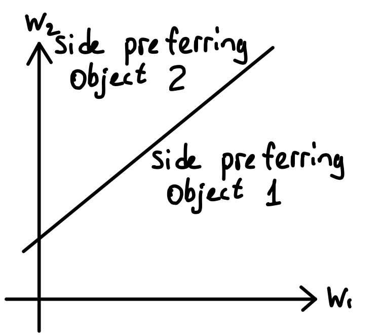

If one is to truly believe the answers of one person, they would remove everything from the other side of the hyperplane that does not agree with the received human preference. But since humans are noisy, that approach is not optimal, thus most applications up-weight the indicated side of the plane to emphasize that points on that side are better, and down-weight the other side as they do not agree with the provided comparison.
How should someone choose which queries to conduct, otherwise, what is the most informative query sequence? After completing one query, the next query should be orthogonal to the previous one so that the potential space consistent with the preferences decreases in half. The intuition behind that is the potential space has all of the reward functions that agree with the provided answers, so to find a specific reward function for a human, decreasing the space narrows down the possible options. For example, orthogonal query to the query in Figure 3.20 is shown in Figure 3.21. The original query created the blue space, and a new one created a red space, resulting in a purple intersection of the two which is still consistent with both of the queries’s results. The image shows that the purple portion is exactly half of the blue portion.
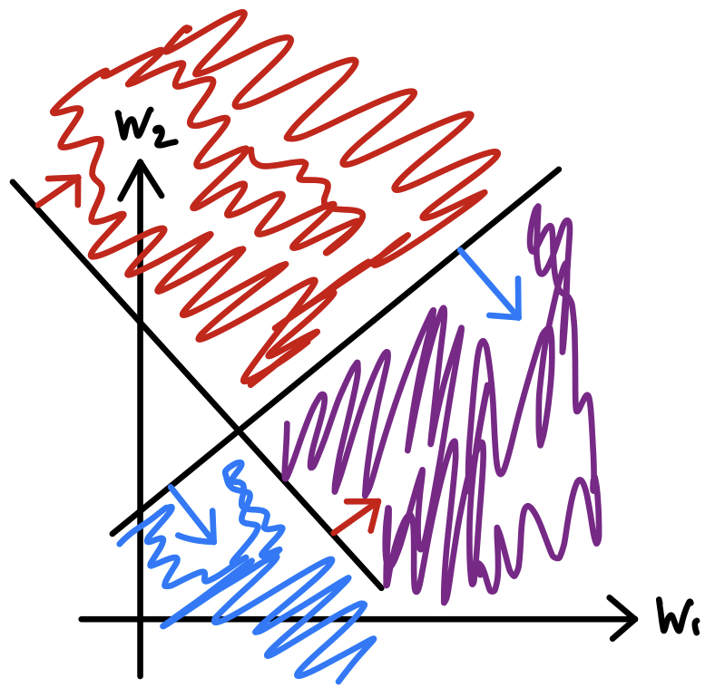
Mathematically, from (Biyik and Sadigh 2018) this can be expressed as set \(F\) of potential queries \(\phi\), where \(F = \{\phi: \phi = \Phi(\xi_A) - \Phi(\xi_B), \xi_A, \xi_B \in \Xi\}\) (defining that a query is the difference between the features of two trajectories). Using that, the authors define a human update function \(f_{\phi}(w) = \min(1, \exp(I^T\phi))\) that accounts for how much of the space will still be consistent with the preferences. Finally, for a specific query, they define the minimum volume removed as \(\min\{\mathbb{E}[1 - f_{\phi}(w)], \mathbb{E}[1 - f_{-\phi}(w)]\}\) (expected size of the two sides of the remaining space after it is split by a query - purple area in Figure 3.21), and the final goal is to maximize that amount over all possible queries since it is optimal to get rid of as much space as possible to narrow down the options for the reward function: \(\max_{\phi} \min\{ \mathbb{E}[1 - f_{\phi}(w)], \mathbb{E}[1 - f_{-\phi}(w)]\}\). Effectively this is finding such \(\phi\) that maximizes the information one can get by asking the next comparison query. While this approach uses minimum volume removed, there can be other metrics inside the \(\max\) function. Some applications like movie recommendations do not require extra constraints, however in robotics one might want to add more constraints that satisfy certain rules, so that the resulting query follows the dynamics of the physical world.
Driving Simulator Example
The first real example of learning reward functions from pairwise comparisons is a 2D driving simulator from (Biyik and Sadigh 2018). In Figure 3.22 you can see the setting of a 3-lane road with the orange car being controlled by the computer.

The queries conducted for this problem are two different trajectories presented to the human, and they are asked to evaluate which one of them is better. For the features that contribute to the reward function, it is important to consider that robots might not find some of the information as informative for the learning process as a human would. For this example, the underlying features included the distance between lane boundaries, distance to other cars, and the heading and speed of the controlled car. The weights toward the last feature were weighted the highest according to the authors, since it takes a lot of effort for the car to change or correct its direction.
At the start of the learning process, the car had no direction learned and was moving all over the road. In the middle of learning after 30 queries, the simulator learned to follow the direction of the road and go straight but still experienced collisions. After 70 queries, the simulator learned to avoid collisions, as well as keep the car within the lane without swerving.
Active Learning for Pairwise Comparisons
We have discussed that pairwise comparisons should be selected to maximize the minimum volume of remaining options removed. The question that can come out of the driving example is does it really matter to follow that goal or does random choice of queries performs as well? It turns out that indeed most active learning algorithms (purposefully selecting queries) over time converge with the performance of the random query selection, so in long term the performance is similar. However, what is different is that active learning achieves better performance earlier, which in time-sensitive tasks can be a critical factor.
One example of such a setting can be exoskeletons for humans as part of the rehabilitation after surgery (Li et al. 2021). Different people have significantly different walking patterns as well as rehabilitation requirements, so the exoskeleton needs to adapt to the human as soon as possible for a more successful rehabilitation. Figure Figure 3.23 demonstrates the difference in the time needed between the two approaches. In general, in robotics, the time differences that might seem small to a human might be detrimental to the final performance.
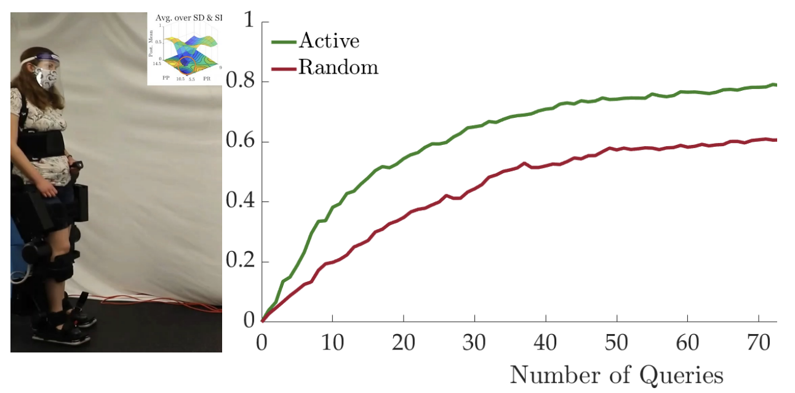
Multi-Modal Reward Functions for Pairwise Comparisons
What if one is working with multiple people and their responses to the queries for comparisons? It will be impossible to recover the different personalities based on the answers, and it might be necessary to conduct a full ranking before it is clear which responses belonged to which person, but the underlying theory for the number of comparisons is non-trivial. For that, the researchers (Myers et al. 2021) have used multi-modal models for reward function learning, which allows to account for different types of valid behaviours and trajectories that can come from different humans.

An example setting for such type of problem is negotiations (Kwon et al. 2021). Let’s say there are some shared items and two people with different utilities and desires for items, where each person only knows their utility. In a specific case of Figure 3.24, Bob as a proposing agent and Alice as a controlled agent who has many different ways of responding to Bob’s proposals. Different methods can be used to design Alice as an AI agent. The first idea is reinforcement learning, where multiple rounds of negotiations are done, the model simulates game theory and sees how Bob reacts. Authors of this setting (Kwon et al. 2021) show that over time the model learns to ask for the same thing over and over again, as Alice is not trained to be human-like or negotiable, and just tries to maximize Alice’s utility. The second approach is supervised learning, where the model can be trained on some dataset, learning the history of negotiations. This results in Alice being very agreeable, which demonstrates two polar results of the two approaches, and it would be ideal to find a middle ground and combine both of them. The authors proposed the Targeted acquisition approach, which is based on active learning ideas. The model asks diverse questions at different cases and stages of negotiations like humans, determining which questions are more valuable to be asked throughout learning. Such an approach ended up in more fair and optimal results than supervised or reinforcement learning (Kwon et al. 2021).
In conclusion, pairwise comparisons show to be a great way of learning linear reward functions, but at times present challenges or incapabilities that can be further improved with additional incorporations of approaches like Active Learning. That improves many applications in terms of time spent getting to the result in case of exoskeleton adjustments, as well as getting to a middle ground between polar behaviors in applications like negotiations.
3.2.8 Truthful Preference Elicitation with Adversary
In our study of social choice models in Chapter [2model], we study how axiomatic properties are implemented to prevent strategic manipulation of a population. This brings us onto the field of mechanism design. At its core, mechanism design is the science of making rules. The intent in this field is to design systems so that the strategic behaviour of individuals leads to desirable outcomes. Just thinking about services on the Internet – file sharing, reputation systems, web search, web advertising, email, Internet auctions, congestion control – all have to be set up so that an individual’s selfish behavior leads to better outcomes for the entire community. A more specific example of this is the phenomenon of “bid-sniping” that was present on eBay in the early 2000s. When people could bid on E-bay, the rule was that the highest bidder by the end of some specified time period would get the item. As a result, people would just wait until the very last minute to bid in order to not raise the price of the item too early. On the other hand, when Amazon still allowed bidding, they had a rule that any time a bid was placed it would extend the time of the bid by ten minutes. This simple difference had drastic effects on bidding prices over time. Mechanism design develops the theoretical framework for learning social choices and eliciting truthful preference.
We will cover frameworks that model several scenarios that mechanism design is usefully applied to: recommendation systems (where users will selfishly try to stick to their preferences while a planner encourages exploration); auctions (where bidders will try to maximise their reward compared to others); and peer grading (where truthful reporting is not necessarily an incentive for students).
Auction Theory
Single-Item Auctions
The first problem within auction theory we will consider is the single-item auction. The premise of this problem is that there is a single item to sell, \(n\) bidders (with unknown private valuations of the item \(v_1\), ..., \(v_n\)). The bidder’s individual objective is to maximize utility: the value \(v_i\) of the item subtracted by the price paid for the item. The auction procedure is standard in the sense that bids are solicited and the highest bid will win the auction. While the objective of the individual bidder is clear, there could be a plethora of different objectives for the auction as a whole. One option could be to maximize social surplus, meaning the goal is to maximize the value of the winner. Another objective could be to maximize seller profit which is the payment of the winner. For simplicity, we can focus on the first objective where the goal is to maximize social surplus. If we want to maximize social surplus it turns out that a great way to do this is the “second-price auction”.
Maximize Seller Profit
If we want to look at things from the perspective of a seller trying to maximize their profit we need to treat the bidder’s bids as uniform random variables. Consider the example scenario where we have two bidders each bidding uniformly between 0 and 1. What is the seller’s expected profit? (in this case profit and revenue for the seller are the same because we assume the seller throws away the item if it doesn’t sell/has no valuation for it).
From there the question now becomes, can we get more expected profit from the seller’s perspective? It turns out there is a design where we can add a reserve price of \(r\) to the second-price auction. The way this works is we can 1) Insert seller-bid at \(r\), 2) solicit bids, 3) pick the highest bidder, and 3) charge the 2nd-highest bid. In effect, this is just the second-price auction but with a bid from the seller as well, at a price of \(r\). A lemma, that we won’t prove here, is that the second-price auction with reserve price \(r\) still has a dominant strategy of just being truthful.
Let’s now consider what the profit of a second-price auction would be with two bidders that uniformly bid between 0 and 1 – but this time we have a reserve price of \(1/2\). To calculate the expected profit we break down the situation into 3 cases:
Case 1: \(1/2 > v_1 > v_2 \rightarrow 1/4 \text{ probability} \rightarrow E[\text{profit}] = 0\)
Case 2: \(v_1 > v_2 > 1/2 \rightarrow 1/4 \text{probability} \rightarrow E[v2 | case 2] = 2/3\)
Case 3: \(v_1 > 1/2 > v_2 \rightarrow 1/2 \text{ probability} \rightarrow 1/2\)
Why is \(E[v2 | case 2] = 2/3\)? If \(v_1\) and \(v_2\) are greater than \(1/2\), they are evenly spread across the interval, meaning the expectation will be 1/2 + 1/6 = 2/3. Adding up all these cases we get \(E[profit] = 5/12\). It turns out that second-price auctions with reserve actually maximize profit in general (for symmetric bidders)!
In the previous section we conclude that second-price auctions with reserve maximize profit for the seller. In order to prove this, we now move to the more general topic of asking how should a monopolist divide good across separate markets. We can make the assumption that the demand model is a concave revenue \(R(q)\) in quantity \(q\). Under this assumption, we can just divide supply into \(q = q_a + q_b\) such that \(R'_a(q_a) = R'_b(q_b)\). The idea from here is a theorem from Myerson in 1981 that states an optimal action maximizes "marginal revenue". Consider an example where we have two bidders bidding a uniform value between 0 and 1. Our revenue curve can now be derived from the offering price \(V(q) = 1 - q\) like so: \(R(q) = qV(q) = q - q^2\). Taking the derivative gives us the marginal revenue \(R'(q) = 1-2q\). This means two things: 1) we want to sell to bidder \(i\) with the highest \(R'(q_i)\) and 2) we want to sell to bidder \(i\) with value at least \(1/2\) (if we want a positive \(R'(q_i)\). But this is just a second-price auction with reserve \(1/2\)! This means that for symmetric bidders, a second price with reserve is the optimal auction.
What good are auctions?
An interesting topic to discuss is what benefits auctions bring to the table as opposed to just standard pricing. Online auctions used to be a lot more popular in the early 2000s and have been completely replaced by standard online pricing, even on sites like e-bay. While auctions are slower and have added inherent complexities, they are actually optimal on paper. Standard pricing on the other is non-optimal; although it is fast and simpler for buyers. There is actually a way to quantify this: for pricing \(k\) units, the loss is at most \(1 / \sqrt{2\pi k}\) of optimal profit.
Let’s consider applications in duopoly platform design. We know that the optimal auction is second-price with reserve, but what happens when we introduce competition between two auction platforms? Some important details related to the revenue of a second-price auction is that a second-price auction with no reserve and n bidders leads to larger revenue having an optimal reserve and n - 1 bidders (Bulow and Klemperer 1996). Additionally, with an entry cost, no reserve is the optimal strategy for maximizing revenue (McAfee and McMillan 1987). Let’s consider an example of a competing auction system which is Google ads vs Bing ads. How should an advertiser divide the budget between Google and Bing? They should give the same budget to both companies. What happens if Bing raises their prices? Then, the advertising company moves more of its budget to Google from Bing.
Prior-Independent Auctions
The Bulow-Klemperer theorem demonstrates that increased competition can be more valuable than perfect knowledge of bidders’ valuation distributions. This result provides insight into the potential of simple, prior-independent auctions to approach the performance of optimal auctions. The theorem states that for a single-item auction with bidders’ valuations drawn independently from a regular distribution \(F\):
theorem
Theorem 3.4 Let \(F\) be a regular distribution and \(n\) a positive integer. Then: \[E_{v_1,\ldots,v_{n+1} \sim F}[\text{Rev(VA)}(n+1 \text{ bidders})] \geq E_{v_1,\ldots,v_n \sim F}[\text{Rev(OPT}_F)(n \text{ bidders})] \tag{3.66}\] where VA denotes the Vickrey auction and \(\text{OPT}_F\) denotes the optimal auction for \(F\).
This shows that running a simple Vickrey auction with one extra bidder outperforms the revenue-optimal auction that requires precise knowledge of the distribution. It suggests that in practice, effort spent on recruiting additional bidders may be more fruitful than fine-tuning auction parameters.
The VCG Mechanism
The VCG mechanism is a cornerstone of mechanism design theory, providing a general solution for welfare maximization in multi-parameter environments. The key result is:
theorem
Theorem 3.5 In every general mechanism design environment, there is a dominant-strategy incentive-compatible (DSIC) welfare-maximizing mechanism.
The VCG mechanism operates as follows:
Given bids \(b_1, \ldots, b_n\), where each \(b_i\) is indexed by the outcome set \(\Omega\), the allocation rule is:
\[x(b) = \arg \max_{\omega \in \Omega} \sum_{i=1}^n b_i(\omega) \tag{3.67}\]
The payment rule for each agent \(i\) is:
\[p_i(b) = \max_{\omega \in \Omega} \sum_{j \neq i} b_j(\omega) - \sum_{j \neq i} b_j(\omega^*) \tag{3.68}\]
where \(\omega^* = x(b)\) is the chosen outcome.
The key insight is to charge each agent its “externality” - the welfare loss inflicted on other agents by its presence. This payment rule, coupled with the welfare-maximizing allocation rule, yields a DSIC mechanism.
The VCG mechanism can be interpreted as having each agent pay its bid minus a "rebate" equal to the increase in welfare attributable to its presence:
\[p_i(b) = b_i(\omega^*) - \left[ \sum_{j=1}^n b_j(\omega^*) - \max_{\omega \in \Omega} \sum_{j \neq i} b_j(\omega) \right] \tag{3.69}\]
While the VCG mechanism provides a theoretical solution for DSIC welfare-maximization in general environments, it can be challenging to implement in practice due to computational and communication complexities.
Combinatorial Auctions
Combinatorial auctions are an important class of multi-parameter mechanism design problems, with applications ranging from spectrum auctions to airport slot allocation. In a combinatorial auction:
There are \(n\) bidders and a set \(M\) of \(m\) items.
The outcome set \(\Omega\) consists of allocations \((S_1, \ldots, S_n)\), where \(S_i\) is the bundle allocated to bidder \(i\).
Each bidder \(i\) has a private valuation \(v_i(S)\) for each bundle \(S \subseteq M\).
While the VCG mechanism theoretically solves the welfare-maximization problem, combinatorial auctions face several major challenges in practice:
Preference Elicitation: Each bidder has \(2^m - 1\) private parameters, making direct revelation infeasible for even moderate numbers of items. This necessitates the use of indirect mechanisms that elicit information on a "need-to-know" basis.
Computational Complexity: Even when preference elicitation is not an issue, welfare-maximization can be an intractable problem. In practice, approximations are often used, hoping to achieve reasonably good welfare.
VCG Limitations: The VCG mechanism can exhibit bad revenue and incentive properties in combinatorial settings. For example, adding bidders can sometimes decrease revenue to zero, and the mechanism can be vulnerable to collusion and false-name bids.
Strategic Behavior in Iterative Auctions: Most practical combinatorial auctions are iterative, comprising multiple rounds. This introduces new opportunities for strategic behavior, such as using bids to signal intentions to other bidders.
These challenges make combinatorial auctions a rich and complex area of study, requiring careful design to balance theoretical guarantees with practical considerations.
Spectrum Auctions
Spectrum auctions represent a complex application of combinatorial auction theory. With n bidders and m non-identical items, each bidder has a private valuation for every possible bundle of items, making it impractical to directly elicit all preferences. This necessitates the use of indirect, iterative mechanisms that query bidders for valuation information on a “need-to-know” basis, sacrificing some of the desirable properties of direct mechanisms like dominant strategy incentive compatibility (DSIC) and full welfare maximization.
The fundamental challenge in spectrum auctions lies in the nature of the items being sold. There is a dichotomy between items that are substitutes (where \(v(AB) \leq v(A) + v(B))\) and those that are complements (where \(v(AB) > v(A) + v(B))\). Substitute items, such as licenses for the same area with equal-sized frequency ranges, are generally easier to handle. When items are substitutes, welfare maximization is computationally tractable, and the VCG mechanism avoids many undesirable properties. However, complementary items, which arise naturally in spectrum auctions when bidders want adjacent licenses, present significant challenges.
Early attempts at spectrum auctions revealed the pitfalls of naive approaches. Sequential auctions, where items are sold one after another, proved problematic as demonstrated by a Swiss auction in 2000. Bidders struggled to bid intelligently without knowing future prices, leading to unpredictable outcomes and potential revenue loss. Similarly, simultaneous sealed-bid auctions, as used in New Zealand in 1990, created difficulties for bidders in coordinating their bids across multiple items, resulting in severely suboptimal outcomes.
The Simultaneous Ascending Auction (SAA) emerged as a solution to these issues and has formed the basis of most spectrum auctions over the past two decades. In an SAA, multiple items are auctioned simultaneously in rounds, with bidders placing bids on any subset of items subject to an activity rule. This format facilitates price discovery, allowing bidders to adjust their strategies as they learn about others’ valuations. It also allows bidders to determine valuations on a need-to-know basis, reducing the cognitive burden compared to direct-revelation auctions.
Despite its advantages, the SAA is not without vulnerabilities. Demand reduction, where bidders strategically reduce their demand to lower prices, can lead to inefficient outcomes even when items are substitutes. The exposure problem arises with complementary items, where bidders risk winning only a subset of desired items at unfavorable prices. These issues highlight the ongoing challenges in designing effective spectrum auctions, balancing theoretical guarantees with practical considerations.
Case study: Classroom Peer Grading
This chapter discusses work by Jason Hartline, Yingkai Li, Liren Shan, and Yifan Wu at Northwestern University, where researchers examined mechanism design for the classroom, specifically in terms of the optimization of scoring rules. They explored peer grading in the classroom and how to construct a peer grading system that optimizes the objectives for each stakeholder in the system, including those being graded, the peer graders, the TAs of the class, and the professor.
Firstly, let’s think of the classroom like a computer. We can think of students as local optimizers; their incentive is to minimize the amount of work they need to do and maximize the grades that they receive. The graders are imprecise operators, which means that there is some uncertainty in their ability to grade the work completed by the students. The syllabus can be thought of as the rules that map the actions of the students to the grade they end up receiving in the class. Our overall goals for this classroom based on these definitions is to minimize work, maximize learning, and fairly assess the students for the work that they do (Hartline et al. 2020).
One basic question that we can examine, is what is the best syllabus that maximizes our objectives for our classroom design. Some components of this could include grading randomized exams, grading with partial credit, group projects, and finally, peer grading, which is the component that we will be taking a deeper dive into.
The general situation of the peer grading problem is that proper scoring rules make peer grades horrible (Hartline et al. 2020). So we want to be able to optimize scoring rules and make sure that we are optimizing each component of the peer grading pipeline.
The main algorithms focused on in this peer grading design paper were matching peers and TAs to submissions and the grading of those submissions from the TAs and the peer reviews (Hartline et al. 2020). There are quite a number of advantages to peer grading including that peers are able to learn from reviewing other people’s work, it reduces the work for the teacher, and improves the turnaround time for assignment feedback (which are all part of our overarching goals for our mechanism design for the classroom). But, it is also important to acknowledge the potential disadvantages of the peer grading system: it is possible that the peer graders present inaccurate grades and there is student unrest. This presents us with a challenge: being able to incentivize accurate peer reviews.
One problem that we run into, when we use the proper scoring rule to score peer reviews, if the peer graders use the lazy peer strategy, which means that they always report 80\(\%\) for their peer reviews, they get graded very well using the proper scoring rule algorithm. In fact, the proper scoring rule says that their peer review is 96\(\%\) accurate (Hartline et al. 2023). So how do we incentivize effort in reviews from peer graders? We use a scoring rule that maximizes the difference in score between effort or no effort reviews as indicated by the peer reviewers (Hartline et al. 2023). So overall, the analysis of datasets leads to decision optimizations and, eventually, payoff from those decisions.
To conclude our mechanism design in the classroom discussion, we have two key takeaways: scoring rules are essential in being able to understand and analyze data thoroughly, and optimal scoring rules for binary effort allow us to understand the setting independent of the dataset (Hartline et al. 2023).
Mutual Information Paradigm
In this section we discuss an influential new framework for designing peer prediction mechanisms, the Mutual Information Paradigm (MIP) introduced by Kong and Schoenebeck (Kong and Schoenebeck 2019). Traditional peer prediction approaches typically rely on scoring rules and correlation between agents’ signals. However, these methods often struggle with issues like uninformed equilibria, where agents can coordinate on uninformative strategies that yield higher payoffs than truth-telling. The core idea is to reward agents based on the mutual information between their report and the reports of other agents.
We consider a setting with \(n\) agents, each possessing a private signal \(\Psi_i\) drawn from some set \(\Sigma\). The mechanism asks each agent to report their signal, which we denote as \(\hat{\Psi}_i\). For each agent \(i\), the mechanism randomly selects a reference agent \(j \neq i\). Agent \(i\)’s payment is then calculated as: \[MI(\hat{\Psi}_i; \hat{\Psi}_j) \tag{3.70}\] where \(MI\) is an information-monotone mutual information measure. An information-monotone \(MI\) measure must satisfy the following properties:
Symmetry: \(MI(X; Y) = MI(Y; X)\).
Non-negativity: \(MI(X; Y) \geq 0\), with equality if and only if \(X\) and \(Y\) are independent.
Data processing inequality: For any transition probability \(M\), if \(Y\) is independent of \(M(X)\) conditioned on \(X\), then \(MI(M(X); Y) \leq MI(X; Y)\).
Two important families of mutual information measures that satisfy these properties are \(f\)-mutual information and Bregman mutual information. The \(f\)-mutual information is defined as: \[MI_f(X; Y) = D_f(U_{X,Y}, V_{X,Y}) \tag{3.71}\] where \(D_f\) is an \(f\)-divergence, \(U_{X,Y}\) is the joint distribution of \(X\) and \(Y\), and \(V_{X,Y}\) is the product of their marginal distributions. The Bregman mutual information is defined as: \[BMI_{PS}(X; Y) = \mathbb{E}_{X} [D{PS}(U_{Y|X}, U_Y)] \tag{3.72}\] where \(D_{PS}\) is a Bregman divergence based on a proper scoring rule \(PS\), \(U_{Y|X}\) is the conditional distribution of \(Y\) given \(X\), and \(U_Y\) is the marginal distribution of \(Y\).
The MIP framework can be applied in both single-question and multi-question settings. In the multi-question setting, the mechanism can estimate the mutual information empirically from multiple questions. In the single-question setting, additional techniques like asking for predictions about other agents’ reports are used to estimate the mutual information.
A key theoretical result of the MIP framework is that when the chosen mutual information measure is strictly information-monotone with respect to agents’ priors, the resulting mechanism is both dominantly truthful and strongly truthful. This means that truth-telling is a dominant strategy for each agent and that the truth-telling equilibrium yields strictly higher payoffs than any other non-permutation strategy profile.
As research continues to address practical implementation challenges of designing truthful mechanisms, MIP-based approaches have significant potential to improve preference elicitation and aggregation in real-world applications lacking verifiable ground truth.
Auction Theory 2
Single-Item Auctions
The first problem within auction we will consider is the single-item auction. In this problem setup, there is a single item to sell and \(n\) bidders each with unknown private valuations of the item \(v_1, \ldots, v_n\),
3.2.9 Application: Guiding Human Demonstrations in Robotics
A strong approach to learning policies for robotic manipulation is imitation learning, the technique of learning behaviors from human demonstrations. In particular, interactive imitation learning allows a group of humans to contribute their own demonstrations for a task, allowing for scalable learning. However, not all groups of demonstrators are equally helpful for interactive imitation learning.
The ideal set of demonstrations for imitation learning would follow a single, optimal method for performing the task, which a robot could learn to mimic. Conversely, multimodality, the presence of multiple optimal methods in the demonstration set, is challenging for imitation learning since it has to learn from contradicting information for how to accomplish a task.
A common reason for multimodality is the fact that different people often subconsciously choose different paths for execution, as illustrated in Figure 3.25.
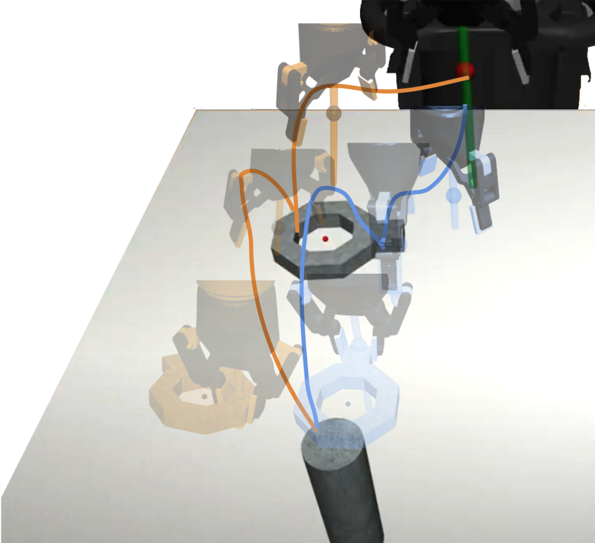
Gandhi et al. (Gandhi et al. 2022) identifies whether demonstrations are compatible with one another and offer an active elicitation interface to guide humans to provide better demonstrations in interactive imitation learning. Their key motivation is to allow multiple users to contribute demonstrations over the course of data collection by guiding users towards compatible demonstrations.
To identify whether a demonstration is “compatible” with a base policy trained with prior demonstrations, the researchers measure the likelihood of demonstrated actions under the base policy, and the novelty of the visited states. Intuitively, low likelihood and low novelty demonstrations should be excluded since they represent conflicting modes of behavior on states that the robot can already handle, and are therefore incompatible. This concept of compatibility is used for filtering a new set of demonstrations and actively eliciting compatible demonstrations.
In the following subsections, we describe the process of estimating compatibility and active elicitation in more detal.
Estimating Compatiblity
We want to define a compatibility measure \(\mathcal{M}\), that estimates the performance of policy \(\pi_{base}\) that is retrained on a union of \(\mathcal{D}_{base}\), the known base dataset, and \(\mathcal{D}_{new}\), the newly collected dataset. To define this compatibility measure in a way that is easy to compute, we can use two interpretable metrics: likelihood and novelty.
The likelihood of actions \(a_{new}\) in \(\mathcal{D}_{new}\) is measured as the negative mean squared error between actions predicted by the base policy and this proposed action:
\[\begin{aligned} likelihood(s_{new}, a_{new}) = -\mathbb{E}[|| \pi_{base}(s_{new}) - a_{new} ||^2_2]. \end{aligned} \tag{3.73}\]
The novelty of the state \(s_{new}\) in \(\mathcal{D}_{new}\) is the standard deviation in the predicted actions under base policy:
\[\begin{aligned} novelty(s_{new}) = \mathrm{Var}[\pi_{base}(s_{new})]. \end{aligned} \tag{3.74}\]
We can plot likelihood and novelty on a 2D plane, as shown in Figure 3.26, and identify thresholds on likelihood and novelty, denoted as \(\lambda\) and \(\eta\) respectively. Intuitively, demonstrations with low likelihood in low novelty states should be excluded, because this indicates that there is a conflict between the base behavior and the new demonstration due to multimodality. Note that in high novelty states, the likelihood should be disregarded because the base policy does not have a concrete idea for how to handle these states anyways so more data is needed.

The final compatibility metric, parameterized by the likelihood and novelty thresholds \(\lambda\) and \(\eta\), is \(\mathcal{M}(\mathcal{D}_{base}, (s_{new}, a_{new})) \in [0, 1]\), defined as:
\[\begin{aligned} \mathcal{M} = \begin{cases} 1 - \min(\frac{\mathbb{E}[|| \pi_{base}(s_{new}) - a_{new} ||^2_2]}{\lambda}, 1) & \text{ if } \text{novelty}(s_{new}) < \eta \\ 1 & \text{ otherwise } \end{cases}. \end{aligned} \tag{3.75}\]
Note that \(\lambda\) and \(\eta\) need to be specified by hand. This is accomplished by assuming the ability to collect a priori incompatible demonstrations to identify reasonable thresholds that remove the most datapoints in the incompatible demonstrations while keeping the most datapoints in the compatible demonstrations.
Case Studies with Fixed Sets
The researchers evaluate the utility of the compatibility metric on three tasks: placing a square nut on a square peg, placing a round nut on a round peg, and opening a drawer and placing a hammer inside. For each task, they train a base policy using a “proficient” operator’s demonstration while sampling trajectories from other operators for the new set.
The naive baseline is to use all datapoints while the \(\mathcal{M}\)-Filtered demonstrations use the compatibility metric to filter out incompatible demonstrations. The results are presented in Table 3.3. As you can see, M-filtering results in equal or greater performance despite using less data than the naive baseline, demonstrating the effectiveness of compatibility-based filtering.
| Square Nut | Round Nut | Hammer Placement | ||||
| Operator | Naive | \(\mathcal{M}\)-Filtered | Naive | \(\mathcal{M}\)-Filtered | Naive | \(\mathcal{M}\)-Filtered |
| Base Operator | 38.7 (2.1) | - | 13.3 (2.3) | - | 24.7 (6.1) | - |
| Operator 1 | 54.3 (1.5) | 61.0 (4.4) | 26.7 (11.7) | 32.0 (12.2) | 38.0 (2.0) | 39.7 (4.6) |
| Operator 2 | 40.3 (5.1) | 42.0 (2.0) | 22.0 (7.2) | 26.7 (5.0) | 33.3 (3.1) | 32.7 (6.4) |
| Operator 3 | 37.3 (2.1) | 42.7 (0.6) | 17.3 (4.6) | 18.0 (13.9) | 8.0 (0.0) | 12.0 (0.0) |
| Operator 4 | 27.3 (3.5) | 37.3 (2.1) | 7.3 (4.6) | 13.3 (1.2) | 4.0 (0.0) | 4.0 (0.0) |

Actively Eliciting Compatible Demonstrations
In the previous section, we assume access to a dataset that has already been collected, and we see how filtering out incompatible demonstrations helps improve performance. However, when collecting a new dataset, it would be better to ensure that operators collect compatible demonstrations from the start, allowing us to retain as much data as possible for training.
To actively elicit compatible demonstrations, the researchers set up a pipeline for live feedback and examples. At the start, operators are given a task specification and some episodes to practice using the robot. Then, the active elicitation process begins, as shown in Figure 3.27. Each operator is shown some rollouts of the base policy to understand the style of the base operator. Next, the operator provides a demonstration similar to the ones they were shown. As they record their demonstrations, the interface provides online feedback, with green indicating compatible actions and red indicating incompatible actions. If the number of incompatible state-action pairs (ones where \(\mathcal{M}\) is zero) exceeds 5% of the demonstration length, the demonstration is rejected. However, to provide corrective feedback, the interface shows the areas of the demonstration with the highest average incompatibility and also provides an expert demo that shows what should actually be done. Demonstrators can use this feedback to provide more compatible demonstrations moving forward.
This process helps improve the demonstration quality in both simulation and real experiments, as show in Table 3.4. Specifically, on the real results, active elicitation outperformed the base policy by 25% and naive data collection by 55%. Overall, active elicitation is a powerful tool to ensure that data collected for imitation learning improves the quality of the learned policy.
| Task | Base | Naive | Naive + Filtered | Informed |
|---|---|---|---|---|
| Round Nut | 13.3 (2.3) | 9.6 (4.6) | 9.7 (4.2) | 15.7 (6.0) |
| Hammer Placement | 24.7 (6.1) | 20.8 (15.7) | 22.0 (15.5) | 31.8 (16.3) |
| \(\left[ \textup{Real} \right]\) Food Plating | 60.0 | 30.0 (17.3) | - | 85.0 (9.6) |
Limitations and Future Work for Active Elicitation
A fundamental limitation of eliciting compatible demonstrations is the fact that the “base” demonstrator is considered the ground truth. When the base demonstrator specifies a preference, all other demonstrators must abide by it, even if they have strong preferences against it. For instance, when pouring milk and cereal into a bowl, different people have different preferences for what is the correct order, but active elicitation forces all demonstrators to follow the initial preference of the base operator. The researchers hope that future work can enable users to override the default demonstration set and follow a base behavior that better aligns with their preferences. This could enable multiple modes of behavior to be collected in data while only following a user’s specified preference instead of attempting to collapse all modes into a single policy.
Looking forward, active elicitation provides a foundation for allowing robots to query humans about the type of data needed, enabling more efficient data collection through transparency.
3.2.10 Conclusion
In summary, this chapter has explored the complexities and innovations in interactive learning as applied to large models within robotics. It begins by investigating pairwise comparisons and their role in efficiently learning linear reward functions from large datasets, overcoming limitations in supervised learning. When combined with active learning techniques, these comparisons supply timely, targeted, and context-appropriate feedback, enhancing performance in time-critical applications like exoskeleton adjustments during rehabilitation.
We then shift to imitation learning or inverse reward learning from demonstrations, emphasizing the difficulties introduced by multimodal demonstration sets. active elicitation approaches to compile compatible demonstrations, streamlining the learning process by guiding users to provide more valuable, steady examples are incredibly promising, however, to tackling this issue. This method shows promise in refining the interactive imitation learning data collection pipeline, enabling more capable and effective robotic training.
Additionally, the chapter examines the integration of foundation models into robotics, highlighting the transformative innovations of R3M and Voltron. R3M’s pre-training on diverse human activities dramatically improves robotic manipulation with minimal supervision. Meanwhile, Voltron builds on these capabilities by incorporating language-driven representation learning for remarkably adaptable and nuanced robotic task performance. These models represent significant leaps in robotics while opening new frontiers for future research and applications.
3.3 Exercises
Question 1: Uncertainty Quantification in Preference Learning (40 points)
In this question, we will explore Bayesian approaches to logistic regression in the context of preference learning using the Bradley-Terry model. We will compare different models and inference methods, including parametric linear models estimated using Metropolis-Hastings, parametric neural network models estimated using Hamiltonian Monte Carlo, and non-parametric models with Gaussian Processes. Finally, we will assess the uncertainty quantification in these models using the Expected Calibration Error (ECE).
Assume we have a dataset of pairwise preferences \(\mathcal{D} = \{(x_i, y_i)\}_{i=1}^N\), where \(x_i \in \mathbb{R}^d\) represents the feature difference between two items (i.e., \(x_i = e^{(i)}_1 - e^{(i)}_2\) for embeddings \(e^{(i)}_1\) and \(e^{(i)}_2\)), and \(y_i \in \{0, 1\}\) indicates the preference (\(y_i = 1\) if item 1 is preferred over item 2 in the \(i\)-th pair).
The likelihood of observing \(y_i\) given \(x_i\) and model parameters \(\theta\) is given by the logistic function:
\[P(y_i = 1 | x_i, \theta) = \sigma(x_i^\top \theta) = \frac{1}{1 + e^{-x_i^\top \theta}}.\]
We will adopt a Bayesian approach by placing priors on the model parameters and using Markov Chain Monte Carlo (MCMC) methods to estimate the posterior distributions.
Uncertainty Quantification and Expected Calibration Error (11 points)
(Written, 2 point). Spend some time reading https://tinyurl.com/m77mk9c. Explain what the Expected Calibration Error (ECE) measures and why it is important for assessing uncertainty quantification in probabilistic models.
(Coding, 6 points). In
uncertainty_quantification/ece.py, implement the ECE using the formula \[\text{ECE} = \sum_{k=1}^K \frac{n_k}{N} \left| \text{acc}(B_k) - \text{conf}(B_k) \right|,\] where \(n_k\) is the number of samples in bin \(B_k\), \(N\) is the total number of samples, \(\text{acc}(B_k)\) is the accuracy in bin \(B_k\), and \(\text{conf}(B_k)\) is the average confidence in bin \(B_k\).(Written, 3 point). After doing parts (b), (c), and (d), compare the ECE scores and reliability diagrams of the 3 models. Which model(s) provide the best uncertainty quantification? Discuss possible reasons for the observed differences.
code
import numpy as np
import matplotlib.pyplot as plt
def expected_calibration_error(probs, labels, model_name, n_bins=20, n_ticks=10, plot=True):
"""
Computes the Expected Calibration Error (ECE) for a model and plots a refined reliability diagram
with confidence histogram and additional calibration statistics.
Args:
- probs (np.array): Array of predicted probabilities for the positive class (for binary classification).
- labels (np.array): Array of true labels (0 or 1).
- model_name (str): Name of the model for labeling the plot.
- n_bins (int): Number of bins to divide the probability interval [0,1] into.
- n_ticks (int): Number of ticks to show along the x-axis.
- plot (bool): If True, generates the reliability plot; otherwise, only computes ECE.
Returns:
- float: Computed ECE value.
"""
# Ensure probabilities are in the range [0, 1]
assert np.all((probs >= 0) & (probs <= 1)), "Probabilities must be in the range [0, 1]"
# Initialize bin edges, centers, and storage for accuracy, confidence, and counts
bin_edges = np.linspace(0, 1, n_bins + 1)
bin_centers = (bin_edges[:-1] + bin_edges[1:]) / 2
bar_width = 1.0 / n_bins
accs = np.zeros(n_bins)
confs = np.zeros(n_bins)
bin_counts = np.zeros(n_bins)
# Populate bin statistics: accuracy, confidence, and count
# YOUR CODE HERE (~7 lines)
# Loop over each bin and:
# - Find indices of probabilities that fall within the bin.
# - Count the number of items in the bin.
# - Calculate the accuracy (average of true labels) within the bin.
# - Calculate the confidence (average of predicted probabilities) within the bin.
pass
# END OF YOUR CODE
# Compute ECE: weighted average of |accuracy - confidence| across bins
# YOUR CODE HERE (1 line)
# - Use the bin counts to calculate a weighted average of the differences between accuracy and confidence.
ece_value = None
# END OF YOUR CODE
# Return only ECE if plot is not required
if not plot:
return ece_value
# Compute average confidence and accuracy for reference lines
avg_confidence = np.mean(probs)
avg_accuracy = np.mean(labels)
# Create reliability diagram and histogram
fig, (ax1, ax2) = plt.subplots(2, 1, gridspec_kw={'height_ratios': [3, 1]}, figsize=(8, 10))
# Reliability diagram (top plot)
ax1.plot([0, 1], [0, 1], 'k--', label='Perfect Calibration')
for i in range(n_bins):
# Draw the gap bar starting from the diagonal line (perfect calibration)
ax1.bar(bin_centers[i], abs(accs[i] - confs[i]), width=bar_width, bottom=min(accs[i], confs[i]),
color='red', alpha=0.3, label='Accuracy-Confidence Gap' if i == 0 else "")
# Draw the accuracy bar as a small black line on top of the gap bar
ax1.plot([bin_centers[i] - bar_width / 2, bin_centers[i] + bar_width / 2],
[accs[i], accs[i]], color='black', linewidth=2)
# Add a black line as a sample for accuracy in the legend
ax1.plot([], [], color='black', linewidth=2, label='Accuracy Marker')
ax1.set_xlim(0, 1)
ax1.set_ylim(0, 1)
ax1.set_ylabel('Accuracy')
ax1.set_title(f'{model_name}\nECE={ece_value:.2f}')
ax1.legend()
# Set tick marks based on `n_ticks` evenly spaced along the x-axis
tick_positions = np.linspace(0, 1, n_ticks + 1)
ax1.set_xticks(tick_positions)
ax2.set_xticks(tick_positions)
ax1.set_xticklabels([f'{x:.2f}' for x in tick_positions])
ax2.set_xticklabels([f'{x:.2f}' for x in tick_positions])
# Confidence histogram with average markers
ax2.bar(bin_centers, bin_counts, width=bar_width, color='blue', alpha=0.6)
ax2.axvline(x=avg_confidence, color='gray', linestyle='--', linewidth=2, label='Avg. confidence')
ax2.axvline(x=avg_accuracy, color='black', linestyle='-', linewidth=2, label='Avg. accuracy')
ax2.set_xlim(0, 1)
ax2.set_xlabel('Confidence')
ax2.set_ylabel('Count')
ax2.legend()
plt.tight_layout()
plt.show()
return ece_value
if __name__ == "__main__":
# Test with random probabilities and labels
probs = np.random.rand(10000) # Random probabilities between 0 and 1
labels = np.random.binomial(1, (probs + 1) / 2)
# Run the function and display the result
ece_value = expected_calibration_error(probs, labels, "Test Model", plot=True)
print(f"ECE Value: {ece_value}")Parametric Linear Model Estimated Using Metropolis-Hastings (11 points)
(Written, 3 points). Assume a prior on \(\theta\) such that \(\theta \sim \mathcal{N}(0, \sigma^2 I)\), where \(\sigma^2\) is the variance and \(I\) is the identity matrix. Derive the expression for the posterior distribution \(P(\theta | \mathcal{D})\) up to a normalization constant.
(Coding, 6 points). Implement the Metropolis-Hastings algorithm to sample from the posterior distribution of \(\theta\) in
uncertainty_quantification/metropolis.py.(Written, 2 points). Discuss how you chose the proposal variance \(\tau^2\) and the number of iterations \(T\) and \(T_{\text{burn-in}}\). How did these choices affect the convergence and mixing of your MCMC chain?
code
import torch
import matplotlib.pyplot as plt
from tqdm import tqdm
import numpy as np
from ece import expected_calibration_error
# Load training and testing data
x_train = torch.tensor(np.load('../data/differences_train.npy'))
x_test = torch.tensor(np.load('../data/differences_test.npy'))
y_train = torch.tensor(np.load('../data/labels_train.npy'))
y_test = torch.tensor(np.load('../data/labels_test.npy'))
# Likelihood function for logistic regression (per data point)
def likelihood(theta, x, y):
"""
Computes the likelihood of the data given the logistic regression parameters.
Args:
- theta (torch.Tensor): Model parameters.
- x (torch.Tensor): Input data.
- y (torch.Tensor): True labels.
Returns:
- torch.Tensor: Likelihood values for each data point.
"""
# YOUR CODE HERE (~3 lines)
# Calculate logits as the linear combination of inputs and parameters.
# Use the sigmoid function to compute the probability of the positive class.
pass
# END OF YOUR CODE
# Prior probability (theta ~ N(0, I)) - only depends on theta, not per sample
def prior(theta, sigma):
"""
Computes the prior probability of theta under a Gaussian distribution with variance sigma^2.
Args:
- theta (torch.Tensor): Model parameters.
- sigma (float): Standard deviation of the prior distribution.
Returns:
- torch.Tensor: Prior probability value.
"""
# YOUR CODE HERE (~2 lines)
# Implement Gaussian prior with zero mean and identity covariance.
# Note that the normalization constant is not needed for Metropolis-Hastings.
pass
# END OF YOUR CODE
# Metropolis-Hastings sampler
def metropolis_hastings(x, y, num_samples, burn_in, tau, sigma):
"""
Runs the Metropolis-Hastings algorithm to sample from the posterior distribution.
Args:
- x (torch.Tensor): Input data.
- y (torch.Tensor): True labels.
- num_samples (int): Total number of samples to draw.
- burn_in (int): Number of initial samples to discard.
- tau (float): Proposal standard deviation.
- sigma (float): Prior standard deviation.
Returns:
- torch.Tensor: Collected samples post burn-in.
- float: Acceptance ratio.
"""
# Initialize theta (starting point of the chain) and containers for samples and acceptance count
theta = torch.zeros(x.shape[1])
samples = []
acceptances = 0
# Run the Metropolis-Hastings algorithm
for t in tqdm(range(num_samples), desc="MCMC Iteration"):
# YOUR CODE HERE (~12-16 lines)
# 1. Propose new theta from the proposal distribution (e.g., Gaussian around current theta).
# 2. Compute prior and likelihood for current and proposed theta
# 3. Calculate the acceptance ratio as the product of likelihood and prior ratios.
# 4. Accept or reject the proposal based on the acceptance probability.
# 5. Store the sample after the burn-in period
pass
# END OF YOUR CODE
return torch.stack(samples), acceptances / num_samples
# Run Metropolis-Hastings on training data
num_samples = 10000
burn_in = 1000
tau = 0.01 # Proposal variance (tune this for convergence)
sigma = 2.0 # Prior variance
# Collect samples and compute acceptance ratio
samples, acceptance_ratio = metropolis_hastings(x_train, y_train, num_samples=num_samples, burn_in=burn_in, tau=tau, sigma=sigma)
averaged_weights = samples.mean(axis=0)
print(f'Predicted weights: {averaged_weights}')
print(f'Acceptance Ratio: {acceptance_ratio}')
# Evaluate accuracy on training set
train_predictions = (x_train @ averaged_weights > 0).float()
train_acc = (train_predictions == y_train).float().mean()
print(f'Train Accuracy: {train_acc}')
# Evaluate accuracy on testing set
test_predictions = (x_test @ averaged_weights > 0).float()
acc = (test_predictions == y_test).float().mean()
print(f'Test Accuracy: {acc}')
# Compute expected calibration error on testing set
expected_calibration_error(torch.sigmoid(x_test @ averaged_weights).numpy(), y_test.numpy(), model_name="Metropolis-Hastings")Parametric Neural Network Model Estimated Using Hamiltonian Monte Carlo (11 points)
(Written, 2 points). Explain why Hamiltonian Monte Carlo (HMC) is suitable for sampling from the posterior distribution of neural network parameters compared to Metropolis-Hastings.
(Coding, 7 points). Implement HMC to sample from the posterior distribution of the parameters \(\theta\) of a neural network \(f(x; \theta)\) used for preference prediction in
uncertainty_quantification/hmc_nn.py. This will require a GPU and take around 5 minutes on it!(Written, 2 points). Briefly describe the performance of the HMC and Metropolis-Hastings models and provide the accuracy numbers.
code
# Use a GPU when running this file! JAX should automatically default to GPU.
import jax.numpy as np
import numpyro
import numpyro.distributions as dist
from numpyro.infer import MCMC, NUTS
from jax import random
from ece import expected_calibration_error
# DO NOT CHANGE! This function can be ignored.
def set_numpyro(new_sampler):
numpyro.sample = new_sampler
# Define the neural network model with one hidden layer
def nn_model(x_data, y_data, hidden_dim=10):
"""
Defines a Bayesian neural network with one hidden layer.
Args:
- x_data (np.array): Input data.
- y_data (np.array): Target labels.
- hidden_dim (int): Number of units in the hidden layer.
Returns:
- hidden_activations: Activations from the hidden layer.
- logits: Logits for the output layer.
"""
input_dim = x_data.shape[1]
# Prior over the weights and biases for the hidden layer
w_hidden = numpyro.sample('w_hidden', dist.Normal(np.zeros((input_dim, hidden_dim)), np.ones((input_dim, hidden_dim))))
b_hidden = numpyro.sample('b_hidden', dist.Normal(np.zeros(hidden_dim), np.ones(hidden_dim)))
# Compute the hidden layer activations using ReLU
# YOUR CODE HERE (~1 line)
# Implement the hidden layer computation, applying a ReLU activation.
pass
# END OF YOUR CODE
# Prior over the weights and biases for the output layer
w_output = numpyro.sample('w_output', dist.Normal(np.zeros(hidden_dim), np.ones(hidden_dim)))
b_output = numpyro.sample('b_output', dist.Normal(0, 1))
# Compute the logits for the output layer
# YOUR CODE HERE (~1 line)
# Calculate the logits as the linear combination of hidden activations and output layer weights.
pass
# END OF YOUR CODE
# Likelihood (Bernoulli likelihood with logits)
numpyro.sample('obs', dist.Bernoulli(logits=logits), obs=y_data)
return hidden_activations, logits
def sigmoid(x):
"""Helper function to compute the sigmoid of x."""
return 1 / (1 + np.exp(-x))
if __name__ == "__main__":
# Load training and testing data
x_train = np.load('../data/differences_train.npy')
x_test = np.load('../data/differences_test.npy')
y_train = np.load('../data/labels_train.npy')
y_test = np.load('../data/labels_test.npy')
# HMC Sampler Configuration
hmc_kernel = NUTS(nn_model)
# Running HMC with the MCMC interface in NumPyro
num_samples = 200 # Number of samples
warmup_steps = 100 # Number of burn-in steps
rng_key = random.PRNGKey(0) # Random seed
# MCMC object with HMC kernel
mcmc = MCMC(hmc_kernel, num_samples=num_samples, num_warmup=warmup_steps)
mcmc.run(rng_key, x_train, y_train)
# Get the sampled weights (theta samples)
samples = mcmc.get_samples()
# Extract the weight samples
w_hidden_samples = samples['w_hidden']
b_hidden_samples = samples['b_hidden']
w_output_samples = samples['w_output']
b_output_samples = samples['b_output']
# Compute the averaged weights and biases
w_hidden_mean = np.mean(w_hidden_samples, axis=0)
b_hidden_mean = np.mean(b_hidden_samples, axis=0)
w_output_mean = np.mean(w_output_samples, axis=0)
b_output_mean = np.mean(b_output_samples, axis=0)
# Forward pass through the network for testing set
# YOUR CODE HERE (~2 lines)
# Compute hidden layer activations and logits for the test set using the mean weights and biases.
pass
# END OF YOUR CODE
test_predictions = test_logits > 0
test_accuracy = np.mean(test_predictions == y_test)
print(f'Test Accuracy: {test_accuracy}')
# Forward pass through the network for training set
# YOUR CODE HERE (~2 lines)
# Compute hidden layer activations and logits for the training set.
pass
# END OF YOUR CODE
train_predictions = train_logits > 0
train_accuracy = np.mean(train_predictions == y_train)
print(f'Train Accuracy: {train_accuracy}')
# Compute expected calibration error on testing set
expected_calibration_error(sigmoid(test_logits), y_test, model_name="HMC")Non-Parametric Model with Gaussian Process (GP) (7 points)
(Written, 2 point). Describe how a Gaussian Process can be used for preference learning in this context (i.e., describe how the latent function is used for classification).
(Coding, 2 points). Run the GP classification for preference learning code in
uncertainty_quantification/gaussian_process.pyand provide the accuracy numbers. This can only be run on a CPU and may take around 10 minutes to complete.(Written, 3 point). Discuss the computational complexity of the GP model compared to the parametric models. What are the advantages and disadvantages of using a GP in this setting?
code
import numpy as np
from sklearn.gaussian_process import GaussianProcessClassifier
from sklearn.gaussian_process.kernels import RBF
from sklearn.metrics import accuracy_score
from ece import expected_calibration_error
x_train = np.load('../data/differences_train.npy')
x_test = np.load('../data/differences_test.npy')
y_train = np.load('../data/labels_train.npy')
y_test = np.load('../data/labels_test.npy')
kernel = 1.0 * RBF(length_scale=1.0)
gp_classifier = GaussianProcessClassifier(kernel=kernel, random_state=42, n_jobs=-1)
gp_classifier.fit(x_train, y_train)
y_pred_probs = gp_classifier.predict_proba(x_test)[:, 1]
y_pred_labels = (y_pred_probs > 0.5)
train_accuracy = accuracy_score(y_train, gp_classifier.predict(x_train))
print(f'Train Accuracy: {train_accuracy:.4f}')
test_accuracy = accuracy_score(y_test, y_pred_labels)
print(f'Test Accuracy: {test_accuracy:.4f}')
expected_calibration_error(y_pred_probs, y_test, model_name="Gaussian Process Classifier")Question 2: Active Learning for Preference Learning (40 points)
In this question, you will explore active learning strategies for preference learning using a linear model. We will use expected information gain as the acquisition function to select the most informative queries, where each query is a pair of items. Assume that we model the preferences using a simple linear model. Given feature vectors \(x_1\) and \(x_2\) corresponding to two items, the probability that \(x_1\) is preferred over \(x_2\) is modeled using a logistic regression model, i.e.,
\[P(x_1 \succ x_2 | \theta) = \sigma(\theta^\top (x_1 - x_2)),\]
where \(\theta \in \mathbb{R}^d\) is the model parameter vector, and \(\sigma(z)\) is the sigmoid function \(\sigma(z) = \frac{1}{1 + e^{-z}}\). The goal is to sequentially select pairs of items to maximize the information gained about \(\theta\) through preference queries.
Expected Information Gain (15 points)
Derive the Expected Information Gain (Written, 3 points). Suppose that after observing a preference between two items \(x_1\) and \(x_2\), the posterior distribution over \(\theta\) is updated. The information gain from this observation is the reduction in uncertainty about \(\theta\) measured using the Kullback-Leibler (KL) divergence between the prior and posterior distributions. Given the current posterior distribution \(P(\theta | \mathcal{D})\) and a possible observation \(y \in \{0, 1\}\) (where \(y = 1\) if \(x_1\) is preferred over \(x_2\), and \(y = 0\) otherwise), the expected information gain is: \[\begin{aligned} \mathbb{E}[\text{IG}(x_1, x_2)] = &P(y=1 | x_1, x_2, \theta) D_{\text{KL}}\left( P(\theta | y = 1, \mathcal{D}) \parallel P(\theta | \mathcal{D}) \right) \\+ &P(y=0 | x_1, x_2, \theta) D_{\text{KL}}\left( P(\theta | y = 0, \mathcal{D}) \parallel P(\theta | \mathcal{D}) \right) \end{aligned}\]
Derive this expression for the expected information gain of selecting the pair \((x_1, x_2)\) for a preference query. Start by explaining how the KL divergence measures the information gain, and break down the expectation over the possible outcomes of the query.
Simplifying the KL Divergence (Written, 4 points). Assuming the prior and posterior distributions over \(\theta\) are Gaussian (i.e., \(P(\theta) \sim \mathcal{N}(\mu, \Sigma)\) and \(P(\theta | \mathcal{D}) \sim \mathcal{N}(\mu', \Sigma')\)), show that the KL divergence between the Gaussian posterior and prior simplifies to: \[\begin{aligned} D_{\text{KL}}\left( \mathcal{N}(\mu', \Sigma') \parallel \mathcal{N}(\mu, \Sigma) \right) &= \frac{1}{2} \left( \text{tr}(\Sigma^{-1} \Sigma') + (\mu' - \mu)^\top \Sigma^{-1} (\mu' - \mu)\right.\\ &\left.- d + \log\left( \frac{\det(\Sigma)}{\det(\Sigma')} \right) \right). \end{aligned}\]
Approximate Information Gain for a Linear Model (Written, 4 points). In the case of a linear model with Gaussian priors on \(\theta\), assume that the posterior distribution \(P(\theta | \mathcal{D}) \sim \mathcal{N}(\mu, \Sigma)\) is updated using Bayes’ rule after each observation. The likelihood of observing a preference \(y\) is logistic, which does not conjugate with the Gaussian prior. However, for the purposes of this question, assume that after each query, the posterior mean \(\mu'\) and covariance \(\Sigma'\) can be updated using an approximation method such as Laplace’s approximation.
Using these assumptions, compute the expected information gain for a specific query \((x_1, x_2)\) in closed form. You may express the information gain in terms of the updated mean \(\mu'\) and covariance \(\Sigma'\) after observing the preference outcome.
Laplace Approximation for Posterior (Written, 4 points). The Laplace approximation for the posterior is given by \[\begin{aligned} \mu'=\arg \min_\theta -\log P(\theta | \mathcal{D})\\ \Sigma'^{-1}=\nabla_\theta\nabla_\theta -\log P(\theta|\mathcal{D})|_{\theta=\mu'} \end{aligned}\] In our scenario with the Bradley-Terry model for likelihood, simplify \(-\log P(\theta | \mathcal{D})\) and its Hessian ignoring the normalization constant.
Active Learning Algorithm (25 points) In this section, you will implement an active learning algorithm for selecting the most informative queries using the expected information gain criterion.
(Coding, 4 points). Implement
kl_divergence_gaussiansinactive_learning/main.py.(Coding, 4 points). Following your derived Laplace approximation, implement
negative_log_posterior.(Coding, 4 points). Implement
compute_hessianthat is used to obtain the inverse of the covariance matrix.(Coding, 3 points). Implement
expected_information_gain.(Coding, 4 points). Finally, implement
active_learning.(Coding + Written, 6 points). Plot the \(L^2\) norm of the covariance matrix for each loop of the active learning loop. Additionally, on the same plot, implement a random baseline and plot its \(L^2\) covariance matrix norm. The random baseline should randomly select a point in the dataset and not use any acquisition function. Interpret your plot and use it to compare the two methods.
code
import torch
import torch.nn.functional as F
from torch.optim import Adam
from tqdm import tqdm
from sklearn.model_selection import train_test_split
from sklearn.datasets import make_classification
class LogisticActiveLearning:
def __init__(self, test_size=0.2):
"""
Initializes LogisticActiveLearning model, sets device, and prepares data.
Args:
- test_size (float): Proportion of the dataset used for validation.
"""
# Make device customizable
self.device = torch.device("cpu")
X, y = make_classification(n_samples=10000, random_state=42)
# Convert data and labels to tensors
x_data = torch.tensor(X, dtype=torch.float32).to(self.device)
y_data = torch.tensor(y, dtype=torch.float32).to(self.device)
self.N, self.D = x_data.shape
# Split into training and validation sets
train_indices, val_indices = train_test_split(range(self.N), test_size=test_size, random_state=42)
self.x_train = x_data[train_indices]
self.y_train = y_data[train_indices]
self.x_val = x_data[val_indices]
self.y_val = y_data[val_indices]
# Initialize mean and inverse covariance for the prior
self.weights_mean = torch.zeros(self.D, requires_grad=True, device=self.device)
self.weights_inv_cov = torch.eye(self.D).to(self.device) # Start with identity inverse covariance
def negative_log_posterior(self, w, x, y):
"""
Computes the negative log-posterior (negative log-prior + log-likelihood).
Args:
- w (torch.Tensor): Model weights.
- x (torch.Tensor): Input data point.
- y (torch.Tensor): True label.
Returns:
- torch.Tensor: Negative log-posterior value.
"""
# YOUR CODE HERE (~4-6 lines)
# Compute log-prior term using inverse covariance
pass
# END OF YOUR CODE
def optimize_weights(self, w, x, y, num_steps=50, lr=1e-2):
"""
Optimizes weights using Adam optimizer.
Args:
- w (torch.Tensor): Initial weights.
- x (torch.Tensor): Input data point.
- y (torch.Tensor): True label.
- num_steps (int): Number of optimization steps.
- lr (float): Learning rate.
Returns:
- torch.Tensor: Updated weights.
- torch.Tensor: Hessian inverse covariance.
"""
optimizer = Adam([w], lr=lr)
for step in range(num_steps):
optimizer.zero_grad()
loss = self.negative_log_posterior(w, x, y)
loss.backward()
optimizer.step()
# Compute the Hessian of log-posterior, serving as inverse covariance
inv_cov = self.compute_hessian(w.detach(), x, y)
return w.detach().clone(), inv_cov
def compute_hessian(self, w, x, y):
"""
Computes the Hessian of the negative log-posterior, used as the inverse covariance.
Args:
- w (torch.Tensor): Model weights.
- x (torch.Tensor): Input data point.
- y (torch.Tensor): True label.
Returns:
- torch.Tensor: Hessian of the negative log-posterior.
"""
# YOUR CODE HERE (~5-8 lines)
# Hessian of the prior term
pass
# END OF YOUR CODE
def acquisition_fn(self, x):
"""
Computes posterior means and inverse covariances for y=1 and y=0 without modifying original parameters.
Args:
- x (torch.Tensor): Input data point.
Returns:
- dict: Posterior properties for y=1 and y=0 cases.
"""
weights_y1 = self.weights_mean.clone().detach().requires_grad_(True)
weights_y0 = self.weights_mean.clone().detach().requires_grad_(True)
# Optimize weights and get Hessian for both y=1 and y=0 cases
posterior_mean_y1, inv_cov_y1 = self.optimize_weights(weights_y1, x, 1, num_steps=50)
posterior_mean_y0, inv_cov_y0 = self.optimize_weights(weights_y0, x, 0, num_steps=50)
# Calculate probabilities for the acquisition function
prob_y1 = torch.sigmoid(torch.dot(self.weights_mean.detach(), x))
prob_y0 = 1 - prob_y1
return {
'prob_y1': prob_y1,
'prob_y0': prob_y0,
'posterior_mean_y1': posterior_mean_y1,
'posterior_inv_cov_y1': inv_cov_y1,
'posterior_mean_y0': posterior_mean_y0,
'posterior_inv_cov_y0': inv_cov_y0
}
def expected_information_gain(self, x):
"""
Computes expected information gain for a given point `x`.
Args:
- x (torch.Tensor): Input data point.
Returns:
- torch.Tensor: Expected Information Gain (EIG) value.
"""
acquisition = self.acquisition_fn(x)
# Compute KL divergences for y=1 and y=0 using inverse covariances
kl_y1 = kl_divergence_gaussians(
acquisition['posterior_mean_y1'],
acquisition['posterior_inv_cov_y1'],
self.weights_mean.detach(),
self.weights_inv_cov
)
kl_y0 = kl_divergence_gaussians(
acquisition['posterior_mean_y0'],
acquisition['posterior_inv_cov_y0'],
self.weights_mean.detach(),
self.weights_inv_cov
)
# Expected Information Gain (EIG)
eig = None # YOUR CODE HERE (1 line)
return eig
def active_learning(self, selected_indices, subset_size=50):
"""
Active learning loop that selects the most informative data point based on EIG.
Args:
- selected_indices (list): Indices of previously selected samples.
- subset_size (int): Number of samples to consider in each subset.
Returns:
- best_x, best_x_idx, best_acquisition: Selected data point and acquisition details.
"""
best_eig = -float('inf')
best_x = None
best_x_idx = -1
best_acquisition = None
subset_indices = [i for i in torch.randperm(len(self.x_train)).tolist() if i not in selected_indices][:subset_size]
# YOUR CODE HERE (~ 10 lines)
pass
# END OF YOUR CODE
return best_x, best_x_idx, best_acquisition
def validate(self):
"""
Computes accuracy on the validation set by predicting labels and comparing to true labels.
Returns:
- float: Validation accuracy.
"""
with torch.no_grad():
logits = self.x_val @ self.weights_mean
predictions = torch.sigmoid(logits) >= 0.5 # Convert logits to binary predictions
accuracy = (predictions == self.y_val).float().mean().item()
print(f"Validation accuracy: {accuracy * 100:.2f}%")
return accuracy
def train(self, num_iterations=10, subset_size=50):
"""
Train the model using active learning with subset sampling.
Args:
- num_iterations (int): Number of active learning iterations.
- subset_size (int): Number of samples to consider in each subset.
"""
selected_indices = []
for iteration in range(num_iterations):
print(f"Iteration {iteration + 1}/{num_iterations}")
# Select the most informative data point from a random subset
best_x, best_x_idx, acquisition = self.active_learning(selected_indices, subset_size=subset_size)
selected_indices.append(best_x_idx)
print(f"Selected data point with EIG.")
# Get the true label for the selected data point
y = self.y_train[best_x_idx].item()
# Update posterior mean and inverse covariance based on true label
if y == 1:
self.weights_mean = acquisition['posterior_mean_y1']
self.weights_inv_cov = acquisition['posterior_inv_cov_y1']
else:
self.weights_mean = acquisition['posterior_mean_y0']
self.weights_inv_cov = acquisition['posterior_inv_cov_y0']
print(f"Covariance L2: {torch.inverse(self.weights_inv_cov).norm()}")
# Validate model performance on the validation set
self.validate()
# KL divergence between two multivariate normal distributions
def kl_divergence_gaussians(mu1, sigma1_inv, mu2, sigma2_inv):
"""
Computes the KL divergence between two multivariate Gaussian distributions.
Args:
- mu1, mu2 (torch.Tensor): Mean vectors of the distributions.
- sigma1_inv, sigma2_inv (torch.Tensor): Inverse covariance matrices of the distributions. PLEASE NOTE THE INVERSE!
Returns:
- torch.Tensor: KL divergence value.
"""
# YOUR CODE HERE (~ 9-12 lines)
pass
# END OF YOUR CODE
# Example usage
model = LogisticActiveLearning()
model.train(num_iterations=100, subset_size=50)Question 3: Linear Performance Metric Elicitation (30 points)
(Written, 10 points). For background on the problem setting, read https://tinyurl.com/3b92sufm. Suppose we have a linear performance metric given by \[p(C) = 1-\alpha (FP)-\beta (FN)\] where \(C\) is a confusion matrix and \(FP, FN\) denote false positive and false negative rates. We wish to find the optimal classifier w.r.t. \(p\). That is, \[\phi^* = \arg \max_{\phi\in\Phi} p(C(\phi))\] where \(\Phi\) is the space of all probabilistic binary classifiers from \(X\to [0, 1]\). Note that these classifiers return probabilities corresponding to the label \(1\). Show that \(\phi^*\) is in fact deterministic and given by \[\phi(x)=\begin{cases} 1 & \text{if } p(y|x) > f(\alpha,\beta) \\ 0 & \text{otherwise}. \end{cases}\] for a threshold function \(f\) that you must find. (Hint: For a classifier \(\phi\), \(FP=P(\phi=1, y=0)\) and \(FN=P(\phi=0, y=1)\). Marginalize these joint probabilities over \(x\) and simplify.)
(Written + Coding, 5 points). Implement
classifier_metricsinlpme/main.py. After doing so, runplot_confusion_regionand attach the plot. What do you notice about the region of possible confusion matrices?(Coding, 15 points). Implement
search_thetain order to elicit the metric used by the oracle (which is parametrized by \(\theta\)). Play around with the oracle’s theta and runstart_searchto see how close you can approximate it!
code
import torch
import matplotlib.pyplot as plt
from tqdm import tqdm
class DataDistribution:
def __init__(self, N: int):
"""
Initializes the data distribution with a specified number of samples.
Args:
- N (int): Number of data points.
"""
self.weights = torch.tensor([-0.3356, -1.4104, 0.3144, -0.5591, 1.0426, 0.6036, -0.7549, -1.1909, 1.4779, -0.7513])
self.D = len(self.weights)
gen = torch.Generator().manual_seed(42)
self.data = torch.randn(N, self.D, generator=gen)
self.probs = torch.sigmoid(self.data @ self.weights)
def classifier_metrics(data_dist, threshold, upper=True):
"""
Computes the True Positive and True Negative rates based on a classifier threshold.
Args:
- data_dist (DataDistribution): The data distribution instance.
- threshold (float): Threshold value for classification.
- upper (bool): If True, classifies as positive if above threshold; else, if below.
Returns:
- tuple (float, float): True Positive Rate (TP) and True Negative Rate (TN) in that order.
"""
# YOUR CODE HERE (~3-5 lines)
pass
# END OF YOUR CODE
def sweep_classifiers(data_dist: DataDistribution):
"""
Sweeps through classifier thresholds and calculates True Positive and True Negative rates.
Args:
- data_dist (DataDistribution): The data distribution instance.
Returns:
- tuple: Upper and lower boundary data for True Positive and True Negative rates.
"""
thresholds = torch.linspace(0, 1, 100)
upper_boundary = []
lower_boundary = []
for threshold in tqdm(thresholds, desc="Thresholds"):
tp_upper, tn_upper = classifier_metrics(data_dist, threshold, upper=True)
upper_boundary.append((tp_upper, tn_upper))
tp_lower, tn_lower = classifier_metrics(data_dist, threshold, upper=False)
lower_boundary.append((tp_lower, tn_lower))
return upper_boundary, lower_boundary
class Oracle:
def __init__(self, theta: float):
"""
Initializes the oracle with a given theta for preference evaluation.
Args:
- theta (float): Oracle angle in radians.
"""
self.theta = torch.tensor(theta)
def evaluate_lpm(self, tp, tn):
"""
Computes the linear performance metric (LPM) based on theta.
Args:
- tp (float): True Positive rate.
- tn (float): True Negative rate.
Returns:
- float: Linear performance metric evaluation.
"""
return torch.cos(self.theta) * tp + torch.sin(self.theta) * tn
def preferred_classifier(self, tp_1, tn_1, tp_2, tn_2):
"""
Determines the preferred classifier based on LPM values.
Args:
- tp_1, tn_1, tp_2, tn_2 (float): True Positive and True Negative rates for two classifiers.
Returns:
- bool: True if first classifier is preferred, False otherwise.
"""
lpm_1 = self.evaluate_lpm(tp_1, tn_1)
lpm_2 = self.evaluate_lpm(tp_2, tn_2)
return (lpm_1 > lpm_2).item()
def theta_to_threshold(theta):
"""Converts theta angle to classification threshold."""
return 1 / (1 + torch.tan(theta) ** -1)
def search_theta(oracle: Oracle, data_dist, lower_bound, upper_bound):
"""
Performs a search over theta values to optimize the classification threshold.
Args:
- oracle (Oracle): The oracle for LPM evaluation.
- data_dist (DataDistribution): The data distribution instance.
- lower_bound (float): Lower bound for theta.
- upper_bound (float): Upper bound for theta.
Returns:
- tuple: Updated lower and upper bounds for theta.
"""
left = 0.75 * lower_bound + 0.25 * upper_bound
middle = 0.5 * lower_bound + 0.5 * upper_bound
right = 0.25 * lower_bound + 0.75 * upper_bound
thetas = [lower_bound, left, middle, right, upper_bound]
thresholds = theta_to_threshold(torch.tensor(thetas))
new_lower, new_upper = None, None
# YOUR CODE HERE (~18-25 lines)
# 1. Collect metrics for each threshold value.
# 2. Determine if LPM increases as theta increases.
# 3. Check for pattern of increases and decreases in LPM.
# 4. Update bounds based on observed LPM patterns.
pass
# END OF YOUR CODE
return new_lower, new_upper
# Create instance and get upper & lower boundary data
data_dist = DataDistribution(N=10000000)
oracle = Oracle(theta=0.1)
def plot_confusion_region():
"""
Plots the True Positive vs. True Negative rates for the upper and lower classifier boundaries.
"""
upper_boundary, lower_boundary = sweep_classifiers(data_dist)
# Prepare data for plotting for upper and lower boundaries
tp_upper, tn_upper = zip(*upper_boundary)
tp_lower, tn_lower = zip(*lower_boundary)
# Plot the results for upper boundary
plt.figure(figsize=(8, 6))
plt.plot(tp_upper, tn_upper, marker='o', linestyle='-', alpha=0.7, label="Upper Boundary")
plt.plot(tp_lower, tn_lower, marker='o', linestyle='--', alpha=0.7, label="Lower Boundary")
plt.title("True Positive vs. True Negative Rates (Upper & Lower Boundaries)")
plt.xlabel("True Positive Rate (TP)")
plt.ylabel("True Negative Rate (TN)")
plt.legend()
plt.grid(True)
plt.show()
def start_search():
"""
Starts the theta search using the LPM-based oracle and prints the search range per iteration.
"""
lower_bound = 0
upper_bound = torch.pi / 2
for _ in tqdm(range(10), desc="LPM Search"):
print(f"Theta Search Space: [{lower_bound}, {upper_bound}]")
lower_bound, upper_bound = search_theta(oracle, data_dist, lower_bound=lower_bound, upper_bound=upper_bound)
print(f"Theta Search Space: [{lower_bound}, {upper_bound}]")Question 4: D-optimal Design with Logistic Model (30 points)
In this question, we explore D-optimal designs in the context of the Bradley-Terry model. The Bradley-Terry model is a logistic regression model used for paired comparison data. Given two items \(x_1\) and \(x_2\), the probability that item \(x_1\) is preferred over \(x_2\) is modeled as:
\[P(x_1 \succ x_2 | \theta) = \frac{e^{\theta^\top x_1}}{e^{\theta^\top x_1} + e^{\theta^\top x_2}} = \frac{1}{1 + e^{\theta^\top (x_2 - x_1)}}\]
where \(\theta \in \mathbb{R}^d\) represents the unknown model parameters, and \(x_1, x_2 \in \mathbb{R}^d\) are the feature vectors associated with the two items. D-optimal design aims to maximize the determinant of the Fisher information matrix, thus minimizing the volume of the confidence ellipsoid for the estimated parameters. In this exercise, you will analyze D-optimal designs for this model.
Fisher Information Matrix for the Bradley-Terry Model (12 points)
(Written, 6 points). Derive the Fisher information matrix for the Bradley-Terry model at a design point \((x_1, x_2)\). Show that the Fisher information matrix at a design point is: \[I(x_1, x_2, \theta) = w(x_1, x_2, \theta) (x_1 - x_2)(x_1 - x_2)^\top,\] where \(w(x_1, x_2, \theta)\) is a weight function given by: \[w(x_1, x_2, \theta) = \frac{e^{\theta^\top x_1} e^{\theta^\top x_2}}{\left(e^{\theta^\top x_1} + e^{\theta^\top x_2}\right)^2} =\sigma'(\theta^\top (x_1-x_2)).\] \(\sigma'\) is the derivative of the sigmoid function.
(Coding, 6 points). Implement
fisher_matrixind_optimal/main.pybased on the derived expression.
D-optimal Design Criterion (18 points)
(Coding, 11 points). In the context of the Bradley-Terry model, a D-optimal design maximizes the determinant of the Fisher information matrix. Suppose we have a set of candidate items \(\{x_1, \dots, x_n\}\), and we can choose \(N\) comparisons to make. Formally, the D-optimal design maximizes: \[\det\left( \sum_{i=1}^N w(x_{i1}, x_{i2}, \theta) (x_{i1} - x_{i2})(x_{i1} - x_{i2})^\top \right),\] where \((x_{i1}, x_{i2})\) denotes a pair of compared items in the design. Implement a greedy algorithm to approximate the D-optimal design. Given a set of \(n\) items and their feature vectors \(\{x_1, \dots, x_n\}\), your task is to iteratively select the pair of items \((x_{i1}, x_{i2})\) that maximizes the determinant of the Fisher information matrix. Please implement
greedy_fisher. Note that the setup in the code assumes we have a dataset of all possible differences between pairs of items as opposed to directly selecting the pairs.(Written + Coding, 7 points). Notice that
posterior_inv_covuses a Laplace approximation for the posterior centered around the ground truth weights after labeling the chosen points. However, it turns out this approximation doesn’t actually depend on the labels when taking the Hessian. Please run the filed_optimal/main.pyand attach a plot of the norm of the covariance matrix of the posterior. What difference do you observe between greedy and random sampling? What is the win rate of greedy?
code
import numpy as np
import matplotlib.pyplot as plt
from tqdm import tqdm
def sigmoid(x):
"""Helper function to compute the sigmoid of x."""
return 1 / (1 + np.exp(-x))
class LogisticData:
def __init__(self, weights, seed=42):
"""
Initializes the LogisticData class with specified weights and seed.
Args:
- weights (np.array): True weights for data generation.
- seed (int): Random seed for reproducibility.
"""
self.rng = np.random.default_rng(seed)
self.weights = weights
def generate_data(self, N):
"""
Generates synthetic data for logistic regression.
Args:
- N (int): Number of data points.
Returns:
- tuple: Generated data and labels.
"""
data = self.rng.standard_normal((N, len(self.weights)))
probs = sigmoid(data @ self.weights)
labels = (self.rng.random(N) < probs).astype(int)
return data, labels
def fisher_matrix(difference_vector, weights):
"""
Computes the Fisher information matrix for a single data point.
Args:
- difference_vector (np.array): Difference vector (input data point).
- weights (np.array): Weights for the logistic model.
Returns:
- np.array: Fisher information matrix for the data point.
"""
# YOUR CODE HERE (~2-4 lines)
pass
# END OF YOUR CODE
# Initialization
true_weights = np.array([-0.3356, -1.4104, 0.3144, -0.5591, 1.0426, 0.6036, -0.7549, -1.1909, 1.4779, -0.7513])
data_dim = len(true_weights)
dataset_generator = LogisticData(weights=true_weights)
# Number of iterations for sampling 500 points
num_iterations = 200
# Store covariance matrix norms for comparison
cov_norms_greedy = []
cov_norms_random = []
def greedy_fisher(data, curr_fisher_matrix, selected_indices):
"""
Selects the data point that maximizes the Fisher information determinant.
Args:
- data (np.array): The data matrix.
- curr_fisher_matrix (np.array): Fisher matrix of already selected indices.
- selected_indices (list): List of already selected indices.
Returns:
- int: Index of the selected data point.
"""
best_det = -np.inf
best_index = -1
# Iterate over data points to find the one maximizing Fisher determinant.
for i, difference_vector in enumerate(data):
# YOUR CODE HERE (~5-10 lines)
# Make sure to skip already selected data points!
pass
# END OF YOUR CODE
return best_index
def posterior_inv_cov(X, laplace_center):
"""
Computes the posterior inverse covariance matrix using Laplace approximation.
Args:
- X (np.array): Data matrix.
- laplace_center (np.array): Center point (weights).
Returns:
- np.array: Posterior inverse covariance matrix.
"""
# Calculate probabilities for logistic regression model.
probs = sigmoid(X @ laplace_center)
W = np.diag(probs * (1 - probs))
# Compute inverse covariance matrix assuming standard Gaussian prior.
inv_cov = X.T @ W @ X + np.eye(len(true_weights))
return inv_cov
for _ in tqdm(range(num_iterations)):
# Generate a new sample of 500 data points
data, _ = dataset_generator.generate_data(N=500)
# Greedy selection of best 30 data points
selected_indices = []
curr_fisher_matrix = np.zeros((data_dim, data_dim))
for _ in range(30):
# Select the data point maximizing Fisher information determinant.
best_index = greedy_fisher(data, curr_fisher_matrix, selected_indices)
selected_indices.append(best_index)
curr_fisher_matrix += fisher_matrix(data[best_index], true_weights)
# Prepare greedy and random samples
X_greedy = data[selected_indices]
# Generate 30 random samples for comparison
random_indices = np.random.choice(len(data), 30, replace=False)
X_random = data[random_indices]
# Compute posterior inverse covariance matrices for both strategies
posterior_inv_cov_greedy = posterior_inv_cov(X_greedy, laplace_center=true_weights)
posterior_inv_cov_random = posterior_inv_cov(X_random, laplace_center=true_weights)
# Calculate covariance matrices (inverse of posterior inverse covariance)
cov_matrix_greedy = np.linalg.inv(posterior_inv_cov_greedy)
cov_matrix_random = np.linalg.inv(posterior_inv_cov_random)
# Measure the norm (Frobenius norm) of the covariance matrices
cov_norm_greedy = np.linalg.norm(cov_matrix_greedy, 'fro')
cov_norm_random = np.linalg.norm(cov_matrix_random, 'fro')
# Store norms for analysis
cov_norms_greedy.append(cov_norm_greedy)
cov_norms_random.append(cov_norm_random)
# Display comparison results
print(f'Greedy mean: {np.mean(cov_norms_greedy)}')
print(f'Random mean: {np.mean(cov_norms_random)}')
print(f'Greedy win rate: {(np.array(cov_norms_greedy) < np.array(cov_norms_random)).mean()}')
# Plot the distributions of covariance matrix norms
plt.hist(cov_norms_greedy, bins=30, alpha=0.7, color='blue', label='Greedy')
plt.hist(cov_norms_random, bins=30, alpha=0.7, color='red', label='Random')
plt.xlabel('L2 Norm of Covariance Matrix')
plt.ylabel('Frequency')
plt.title('Comparison of Covariance Norms (Greedy vs. Random) Across Iterations')
plt.legend()
plt.show()Question 5: Nonparametric Metric Elicitation (30 points)
In this question, we explore the problem of performance metric elicitation using a Gaussian Process (GP) to map the elements of the confusion matrix, specifically false positives (FP) and false negatives (FN), to an unknown performance metric. The goal is to learn a non-linear function that maps FP and FN to the metric, using relative preferences from pairwise classifier comparisons. We will use elliptical slice sampling for posterior inference.
Gaussian Process for Metric Elicitation (10 points)
(Written, 2 points). Assume that the performance metric \(\phi(C)\) is a non-linear function of the confusion matrix \(C\). For simplicity, assume that \(\phi\) depends only on FP and FN, i.e., \[\phi(\text{FP}, \text{FN}) \sim \mathcal{GP}(0, k((\text{FP}, \text{FN}), (\text{FP}', \text{FN}'))),\] where \(k\) is the covariance kernel function of the Gaussian Process. Explain why using a GP allows for flexible modeling of the metric \(\phi\) as a non-linear function of FP and FN. What are the advantages of using a GP over a linear model in this context?
(Written, 2 points). Suppose we observe pairwise comparisons between classifiers, where a user provides feedback on which classifier they prefer based on the unknown metric \(\phi\). Given two classifiers with confusion matrices \(C_1 = (\text{FP}_1, \text{FN}_1)\) and \(C_2 = (\text{FP}_2, \text{FN}_2)\), the user indicates their relative preference. Let the observed preference be modeled by Bradley-Terry as: \[\Pr(C_1 \succ C_2) = \sigma(\phi(\text{FP}_1, \text{FN}_1) - \phi(\text{FP}_2, \text{FN}_2)).\] where we view \(\phi\) as the reward function. How does this likelihood affect the posterior inference in the GP? Where does it introduce additional complexity?
(Written + Coding, 6 points). Given a set of observed pairwise comparisons, derive the posterior distribution over the latent function values \(\phi\) given a set of confusion matrices preferences using Bayes’ rule. Express the posterior distribution in terms of the GP prior and the pairwise likelihood function. You do not need to include the normalization constant. Implement the likelihood function in
loglik_from_preferences.
Elliptical Slice Sampling for Posterior Inference (20 points)
(Written, 3 points). Read https://proceedings.mlr.press/v9/murray10a/murray10a.pdf. Elliptical slice sampling is a sampling method used to generate samples from the posterior distribution of a Gaussian Process. Explain the key idea behind elliptical slice sampling and why it is well-suited for sampling from the GP posterior in this context.
(Coding, 10 points). Implement elliptical slice sampling in
npme/elliptical_sampler.pyby following Figure 2 in the paper.(Written, 3 points). Run the algorithm on a synthetic preference dataset of confusion matrices with pairwise preferences. The synthetic data will be constructed using the metric \[\phi_{\text{true}}(\text{FP}, \text{FN}) = \log(1 + \text{FP}) + \log(1 + \text{FN}),\] which captures the idea that the human oracle perceives both false positives and false negatives in a way that flattens out as these values increase (i.e., marginal increases in FP and FN have diminishing effects on the performance metric). Explain the psychological motivation behind this non-linear function. Why might a logarithmic form be appropriate for modeling human perception of classification errors?
Run the file
npme/main.pyand attach the plot of \(\phi_{\text{true}}\) vs your elicited metric. What do you notice in the plot?(Written + Coding, 4 points). Once the GP has been trained and posterior samples of the function \(\phi(\text{FP}, \text{FN})\) have been obtained, how can we evaluate the quality of the elicited metric? Propose a method to evaluate how well the elicited metric \(\phi\) aligns with the user’s true preferences and implement it in
evaluate_elicited_metrictaking into the plot you saw in part (iii).
code
import numpy as np
import matplotlib.pyplot as plt
from typing import Callable
import numpy as np
from tqdm import tqdm
class EllipticalSliceSampler:
def __init__(self,
prior_cov: np.ndarray,
loglik: Callable):
"""
Initializes the Elliptical Slice Sampler.
Args:
- prior_cov (np.ndarray): Prior covariance matrix.
- loglik (Callable): Log-likelihood function.
"""
self.prior_cov = prior_cov
self.loglik = loglik
self._n = prior_cov.shape[0] # Dimensionality of the space
self._chol = np.linalg.cholesky(prior_cov) # Cache Cholesky decomposition
# Initialize state by sampling from prior
self._state_f = self._chol @ np.random.randn(self._n)
def _indiv_sample(self):
"""
Main algorithm for generating an individual sample using Elliptical Slice Sampling.
"""
f = self._state_f # Previous state
nu = self._chol @ np.random.randn(self._n) # Sample from prior for the ellipse
log_y = self.loglik(f) + np.log(np.random.uniform()) # Log-likelihood threshold
theta = np.random.uniform(0., 2 * np.pi) # Initial proposal angle
theta_min, theta_max = theta - 2 * np.pi, theta # Define bracketing interval
# Main loop: Accept sample if it meets log-likelihood threshold; otherwise, shrink the bracket.
while True:
# YOUR CODE HERE (~10 lines)
# 1. Generate a new sample point based on the current angle.
# 2. Check if the proposed point meets the acceptance criterion.
# 3. If not accepted, adjust the bracket and select a new angle.
break
# END OF YOUR CODE
def sample(self,
n_samples: int,
n_burn: int = 500) -> np.ndarray:
"""
Generates samples using Elliptical Slice Sampling.
Args:
- n_samples (int): Total number of samples to return.
- n_burn (int): Number of initial samples to discard (burn-in).
Returns:
- np.ndarray: Array of samples after burn-in.
"""
samples = []
for i in tqdm(range(n_samples), desc="Sampling"):
self._indiv_sample()
if i > n_burn:
samples.append(self._state_f.copy()) # Store sample post burn-in
return np.stack(samples)
def sigmoid(x):
"""Sigmoid function to map values between 0 and 1."""
return 1 / (1 + np.exp(-x))
# Step 1: Define a New Two-Dimensional Non-linear Function
def nonlinear_function(x1, x2):
"""
Computes a non-linear function of x1 and x2.
Args:
- x1 (np.array): First input array.
- x2 (np.array): Second input array.
Returns:
- np.array: Computed function values.
"""
return np.log(1 + x1) + np.log(1 + x2)
# Generate a 2D grid of points
x1 = np.linspace(0, 1, 20)
x2 = np.linspace(0, 1, 20)
x1_grid, x2_grid = np.meshgrid(x1, x2)
x_grid_points = np.vstack([x1_grid.ravel(), x2_grid.ravel()]).T
f_values = nonlinear_function(x_grid_points[:, 0], x_grid_points[:, 1])
# Step 2: Generate Preferences Using Bradley-Terry Model Over the Grid
def generate_preferences(f_vals, num_prefs=10000):
"""
Generates preferences based on the Bradley-Terry model.
Args:
- f_vals (np.array): Function values at grid points.
- num_prefs (int): Number of preference pairs to generate.
Returns:
- list of tuple: Generated preference pairs (i, j).
"""
preferences = []
num_points = len(f_vals)
for _ in range(num_prefs):
i, j = np.random.choice(num_points, size=2, replace=False)
# Probability of preference using Bradley-Terry model
p_ij = sigmoid(f_vals[i] - f_vals[j])
# Decide preference based on random draw
if np.random.rand() < p_ij:
preferences.append((i, j))
else:
preferences.append((j, i))
return preferences
preferences = generate_preferences(f_values)
# Step 3: Define the Likelihood Function for Elliptical Slice Sampling
def loglik_from_preferences(f):
"""
Log-likelihood function using Bradley-Terry model for preferences.
Args:
- f (np.array): Sampled function values.
Returns:
- float: Log-likelihood value.
"""
log_lik = 0
for idx_i, idx_j in preferences:
# YOUR CODE HERE (~2 lines)
pass
# END OF YOUR CODE
return log_lik
# Step 4: Define the RBF Kernel to Compute Prior Covariance Matrix
def rbf_kernel(X1, X2, length_scale=1.0, sigma_f=1.0):
"""
Computes the Radial Basis Function (RBF) kernel between two sets of points.
Args:
- X1, X2 (np.array): Input data points.
- length_scale (float): Kernel length scale parameter.
- sigma_f (float): Kernel output scale.
Returns:
- np.array: RBF kernel matrix.
"""
sqdist = np.sum(X1**2, axis=1).reshape(-1, 1) + np.sum(X2**2, axis=1) - 2 * np.dot(X1, X2.T)
return sigma_f**2 * np.exp(-0.5 / length_scale**2 * sqdist)
# Define prior covariance (prior mean is zero vector)
sigma_prior = rbf_kernel(x_grid_points, x_grid_points, length_scale=1.0, sigma_f=1.0)
# Add small jitter to diagonal for numerical stability
jitter = 1e-6
sigma_prior += jitter * np.eye(sigma_prior.shape[0])
# Ensure the matrix is symmetric to avoid numerical issues
sigma_prior = (sigma_prior + sigma_prior.T) / 2
# Step 5: Run Elliptical Slice Sampling
sampler = EllipticalSliceSampler(sigma_prior, loglik_from_preferences)
samples = sampler.sample(1000, n_burn=500)
average_samples = np.mean(samples, axis=0)
# Generate true function values on grid points
true_values_on_grid = nonlinear_function(x_grid_points[:, 0], x_grid_points[:, 1])
def evaluate_elicited_metric(true_metric, elicited_metric):
"""
Evaluates and prints the mean and standard deviation of the difference
between true and elicited metrics.
Args:
- true_metric (np.array): True values of the function.
- elicited_metric (np.array): Elicited (estimated) function values.
"""
# YOUR CODE HERE
pass
# END OF YOUR CODE
evaluate_elicited_metric(true_values_on_grid, average_samples)
# Step 6: Plot the True Non-linear Function and Elicited Metric in 3D
fig = plt.figure(figsize=(12, 8))
ax = fig.add_subplot(111, projection='3d')
# Plot the true function
x1_fine = np.linspace(0, 1, 50)
x2_fine = np.linspace(0, 1, 50)
x1_fine_grid, x2_fine_grid = np.meshgrid(x1_fine, x2_fine)
true_f_values = nonlinear_function(x1_fine_grid, x2_fine_grid)
ax.plot_surface(x1_fine_grid, x2_fine_grid, true_f_values, color='blue', alpha=0.5, label='True Function')
# Plot the averaged samples as a surface
x1_avg = x_grid_points[:, 0].reshape(20, 20)
x2_avg = x_grid_points[:, 1].reshape(20, 20)
avg_values = average_samples.reshape(20, 20)
ax.plot_surface(x1_avg, x2_avg, avg_values, color='red', alpha=0.5, label='Estimated Function')
# Customize plot
ax.set_xlabel('x1')
ax.set_ylabel('x2')
ax.set_zlabel('f(x1, x2)')
ax.set_title('True Function vs. Averaged Estimated Function')
plt.legend()
plt.show()References
Amershi, Saleema, Maya Cakmak, W. Bradley Knox, and Todd Kulesza. 2014. “Power to the People: The Role of Humans in Interactive Machine Learning.” AI Magazine.
Beluch, William H., Tim Genewein, A. Nürnberger, and Jan M. Köhler. 2018. “The Power of Ensembles for Active Learning in Image Classification.” 2018 IEEE/CVF Conference on Computer Vision and Pattern Recognition, 9368–77. https://api.semanticscholar.org/CorpusID:52838058.
Bernard, J., Matthias Zeppelzauer, Markus Lehmann, Martin Müller, and Michael Sedlmair. 2018. “Towards User‐centered Active Learning Algorithms.” Computer Graphics Forum 37. https://api.semanticscholar.org/CorpusID:51875861.
Biyik, Erdem, and Dorsa Sadigh. 2018. “Batch Active Preference-Based Learning of Reward Functions.” In Proceedings of the 2nd Conference on Robot Learning, edited by Aude Billard, Anca Dragan, Jan Peters, and Jun Morimoto, 87:519–28. Proceedings of Machine Learning Research. PMLR. https://proceedings.mlr.press/v87/biyik18a.html.
Bommasani, Rishi, Drew A. Hudson, Ehsan Adeli, Russ Altman, Simran Arora, Sydney von Arx, Michael S. Bernstein, et al. 2022. “On the Opportunities and Risks of Foundation Models.” https://arxiv.org/abs/2108.07258.
Bouneffouf, Djallel, Romain Laroche, Tanguy Urvoy, Raphaël Féraud, and Robin Allesiardo. 2014. “Contextual Bandit for Active Learning: Active Thompson Sampling.” In International Conference on Neural Information Processing. https://api.semanticscholar.org/CorpusID:1701357.
Braziunas, Darius, and Craig Boutilier. 2012. “Minimax Regret Based Elicitation of Generalized Additive Utilities.” https://arxiv.org/abs/1206.5255.
Brohan, Anthony, Noah Brown, Justice Carbajal, Yevgen Chebotar, Xi Chen, Krzysztof Choromanski, Tianli Ding, et al. 2023. “RT-2: Vision-Language-Action Models Transfer Web Knowledge to Robotic Control.” https://arxiv.org/abs/2307.15818.
Bulow, Jeremy, and Paul Klemperer. 1996. “Auctions Versus Negotiations.” The American Economic Review 86 (1): 180–94. http://www.jstor.org/stable/2118262.
Cai, Wenbin, Ya Zhang, and Jun Zhou. 2013. “Maximizing Expected Model Change for Active Learning in Regression.” In 2013 IEEE 13th International Conference on Data Mining, 51–60. https://doi.org/10.1109/ICDM.2013.104.
Cohn, David A., Zoubin Ghahramani, and Michael I. Jordan. 1996. “Active Learning with Statistical Models.” CoRR cs.AI/9603104. https://arxiv.org/abs/cs/9603104.
Deng, Jia, Wei Dong, Richard Socher, Li-Jia Li, Kai Li, and Li Fei-Fei. 2009. “ImageNet: A Large-Scale Hierarchical Image Database.” In 2009 IEEE Conference on Computer Vision and Pattern Recognition, 248–55. IEEE.
G., Jamieson Kevin, and Robert Nowak. 2011. “Active Ranking Using Pairwise Comparisons.” Advances in Neural Information Processing Systems 24.
Gandhi, Kanishk, Siddharth Karamcheti, Madeline Liao, and Dorsa Sadigh. 2022. “Eliciting Compatible Demonstrations for Multi-Human Imitation Learning.” In Proceedings of the 6th Conference on Robot Learning (CoRL).
Geman, Stuart, Elie Bienenstock, and René Doursat. 1992. “Neural Networks and the Bias/Variance Dilemma.” Neural Computation 4: 1–58. https://api.semanticscholar.org/CorpusID:14215320.
Ghojogh, Benyamin, Hadi Nekoei, Aydin Ghojogh, Fakhri Karray, and Mark Crowley. 2020. “Sampling Algorithms, from Survey Sampling to Monte Carlo Methods: Tutorial and Literature Review.” https://arxiv.org/abs/2011.00901.
Grauman, Kristen, Andrew Westbury, Eugene Byrne, Zachary Chavis, Antonino Furnari, Rohit Girdhar, Jackson Hamburger, et al. 2022. “Ego4D: Around the World in 3,000 Hours of Egocentric Video.” https://arxiv.org/abs/2110.07058.
Guillory, Andrew, and Jeff Bilmes. 2011. “Simultaneous Learning and Covering with Adversarial Noise.” ICML.
Halford, Max. 2023. “Online Active Learning in 80 Lines of Python.”
Hartline, Jason D., Yingkai Li, Liren Shan, and Yifan Wu. 2020. “Optimization of Scoring Rules.” CoRR abs/2007.02905. https://arxiv.org/abs/2007.02905.
Hartline, Jason D., Liren Shan, Yingkai Li, and Yifan Wu. 2023. “Optimal Scoring Rules for Multi-Dimensional Effort.” In Proceedings of Thirty Sixth Conference on Learning Theory, edited by Gergely Neu and Lorenzo Rosasco, 195:2624–50. Proceedings of Machine Learning Research. PMLR. https://proceedings.mlr.press/v195/hartline23a.html.
He, Kaiming, Haoqi Fan, Yuxin Wu, Saining Xie, and Ross Girshick. 2020. “Momentum Contrast for Unsupervised Visual Representation Learning.” In Proceedings of the IEEE/CVF Conference on Computer Vision and Pattern Recognition, 9729–38. IEEE.
Hiranandani, Gaurush, Shant Boodaghians, Ruta Mehta, and Oluwasanmi Koyejo. 2019a. “Performance Metric Elicitation from Pairwise Classifier Comparisons.” In Proceedings of the Twenty-Second International Conference on Artificial Intelligence and Statistics, edited by Kamalika Chaudhuri and Masashi Sugiyama, 89:371–79. Proceedings of Machine Learning Research. PMLR. https://proceedings.mlr.press/v89/hiranandani19a.html.
Hiranandani, Gaurush, Shant Boodaghians, Ruta Mehta, and Oluwasanmi O Koyejo. 2019b. “Multiclass Performance Metric Elicitation.” In Advances in Neural Information Processing Systems, edited by H. Wallach, H. Larochelle, A. Beygelzimer, F. dAlché-Buc, E. Fox, and R. Garnett. Vol. 32. Curran Associates, Inc. https://proceedings.neurips.cc/paper_files/paper/2019/file/1fd09c5f59a8ff35d499c0ee25a1d47e-Paper.pdf.
Hiranandani, Gaurush, Harikrishna Narasimhan, and Sanmi Koyejo. 2020. “Fair Performance Metric Elicitation.” In Advances in Neural Information Processing Systems, edited by H. Larochelle, M. Ranzato, R. Hadsell, M. F. Balcan, and H. Lin, 33:11083–95. Curran Associates, Inc. https://proceedings.neurips.cc/paper_files/paper/2020/file/7ec2442aa04c157590b2fa1a7d093a33-Paper.pdf.
Holladay, Rachel, Shervin Javdani, Anca Dragan, and Siddhartha Srinivasa. 2016. “Active Comparison Based Learning Incorporating User Uncertainty and Noise.” Proceedings of RSS ’16 Workshop on Model Learning for Human-Robot Communication.
Houlsby, Neil, Ferenc Huszár, Zoubin Ghahramani, and Máté Lengyel. 2011. “Bayesian Active Learning for Classification and Preference Learning.” arXiv Preprint arXiv:1112.5745.
Jarl, Sanna, Linus Aronsson, Sadegh Rahrovani, and Morteza Haghir Chehreghani. 2021. “Active Learning of Driving Scenario Trajectories.” Eng. Appl. Artif. Intell. 113: 104972. https://api.semanticscholar.org/CorpusID:249113683.
Karamcheti, Siddharth, Suraj Nair, Annie S. Chen, Thomas Kollar, Chelsea Finn, Dorsa Sadigh, and Percy Liang. 2023. “Language-Driven Representation Learning for Robotics.” https://arxiv.org/abs/2302.12766.
Kong, Yuqing, and Grant Schoenebeck. 2019. “An Information Theoretic Framework for Designing Information Elicitation Mechanisms That Reward Truth-Telling.” ACM Trans. Econ. Comput. 7 (1). https://doi.org/10.1145/3296670.
Kwon, Minae, Siddharth Karamcheti, Mariano-Florentino Cuellar, and Dorsa Sadigh. 2021. “Targeted Data Acquisition for Evolving Negotiation Agents.” https://arxiv.org/abs/2106.07728.
Li, Kejun, Maegan Tucker, Erdem Biyik, Ellen Novoseller, Joel W. Burdick, Yanan Sui, Dorsa Sadigh, Yisong Yue, and Aaron D. Ames. 2021. “ROIAL: Region of Interest Active Learning for Characterizing Exoskeleton Gait Preference Landscapes.” In 2021 IEEE International Conference on Robotics and Automation (ICRA). IEEE. https://doi.org/10.1109/icra48506.2021.9560840.
Ma, Jiaqi, Ziqiao Ma, Joyce Chai, and Qiaozhu Mei. 2022. “Partition-Based Active Learning for Graph Neural Networks.” ArXiv abs/2201.09391. https://api.semanticscholar.org/CorpusID:246240846.
Makili, Lázaro Emílio, Jesús A. Vega Sánchez, and Sebastián Dormido-Canto. 2012. “Active Learning Using Conformal Predictors: Application to Image Classification.” Fusion Science and Technology 62: 347–55. https://api.semanticscholar.org/CorpusID:115384000.
Margatina, Katerina, Timo Schick, Nikolaos Aletras, and Jane Dwivedi-Yu. 2023. “Active Learning Principles for in-Context Learning with Large Language Models.” ArXiv abs/2305.14264. https://api.semanticscholar.org/CorpusID:258841313.
Mas-Colell, Andreu. 1977. “The Recoverability of Consumers’ Preferences from Market Demand Behavior.” Econometrica 45 (6): 1409–30. http://www.jstor.org/stable/1912308.
McAfee, R. Preston, and John McMillan. 1987. “Auctions and Bidding.” Journal of Economic Literature 25 (2): 699–738. http://www.jstor.org/stable/2726107.
Mussmann, Stephen, Julia Reisler, Daniel Tsai, Ehsan Mousavi, Shayne O’Brien, and Moises Goldszmidt. 2022. “Active Learning with Expected Error Reduction.” https://arxiv.org/abs/2211.09283.
Myers, Vivek, Erdem Bıyık, Nima Anari, and Dorsa Sadigh. 2021. “Learning Multimodal Rewards from Rankings.” https://arxiv.org/abs/2109.12750.
Nair, Suraj, Aravind Rajeswaran, Vikash Kumar, Chelsea Finn, and Abhinav Gupta. 2022. “R3M: A Universal Visual Representation for Robot Manipulation.” https://arxiv.org/abs/2203.12601.
Narasimhan, Harikrishna, Harish Ramaswamy, Aadirupa Saha, and Shivani Agarwal. 2015. “Consistent Multiclass Algorithms for Complex Performance Measures.” In Proceedings of the 32nd International Conference on Machine Learning, edited by Francis Bach and David Blei, 37:2398–2407. Proceedings of Machine Learning Research. Lille, France: PMLR. https://proceedings.mlr.press/v37/narasimhanb15.html.
Radford, Alec, Jong Wook Kim, Chris Hallacy, Aditya Ramesh, Gabriel Goh, Sandhini Agarwal, Girish Sastry, et al. 2021. “Learning Transferable Visual Models from Natural Language Supervision.” arXiv Preprint arXiv:2103.00020.
Samuelson, P. A. 1938. “A Note on the Pure Theory of Consumer’s Behaviour.” Economica 5 (17): 61–71. http://www.jstor.org/stable/2548836.
Shepard, Roger N. 1957. “Stimulus and Response Generalization: A Stochastic Model Relating Generalization to Distance in Psychological Space.” Psychometrika 22(4):325–345.
Singh, Aarti, Robert D. Nowak, and Parameswaran Ramanathan. 2006. “Active Learning for Adaptive Mobile Sensing Networks.” 2006 5th International Conference on Information Processing in Sensor Networks, 60–68. https://api.semanticscholar.org/CorpusID:17590956.
Tamburrelli, Giordano, and Alessandro Margara. 2014. “Towards Automated a/b Testing.” In Search-Based Software Engineering. https://doi.org/10.1007/978-3-319-09940-8_13.
Taylor, Annalisa T., Thomas A. Berrueta, and Todd D. Murphey. 2021. “Active Learning in Robotics: A Review of Control Principles.” ArXiv abs/2106.13697. https://api.semanticscholar.org/CorpusID:235652039.
Varian, Hal R. 2006. “Revealed Preference.” In The SAGE Encyclopedia of Business Ethics and Society. https://api.semanticscholar.org/CorpusID:1632873.
Viappiani, Paolo, and Craig Boutilier. 2010. “Optimal Bayesian Recommendation Sets and Myopically Optimal Choice Query Sets.” NIPS, 2352–60.
Walke, Homer, Kevin Black, Abraham Lee, Moo Jin Kim, Max Du, Chongyi Zheng, Tony Zhao, et al. 2023. “BridgeData V2: A Dataset for Robot Learning at Scale.” https://arxiv.org/abs/2308.12952.
Xiao, Tete, Ilija Radosavovic, Trevor Darrell, and Jitendra Malik. 2022. “Masked Visual Pre-Training for Motor Control.” https://arxiv.org/abs/2203.06173.
Xie, Annie, Fahim Tajwar, Archit Sharma, and Chelsea Finn. 2022. “When to Ask for Help: Proactive Interventions in Autonomous Reinforcement Learning.” https://arxiv.org/abs/2210.10765.
Yang, Sitan, and Daniel Q. Naiman. 2014. “Multiclass Cancer Classification Based on Gene Expression Comparison.” Statistical Applications in Genetics and Molecular Biology 13 (4): 477–96. https://doi.org/doi:10.1515/sagmb-2013-0053.
Zhao, Shuyang, Toni Heittola, and Tuomas Virtanen. 2020. “Active Learning for Sound Event Detection.” IEEE/ACM Transactions on Audio, Speech, and Language Processing 28: 2895–905. https://api.semanticscholar.org/CorpusID:211082815.
Zhu, Jingbo, Huizhen Wang, Benjamin Ka-Yin T’sou, and Matthew Y. Ma. 2010. “Active Learning with Sampling by Uncertainty and Density for Data Annotations.” IEEE Transactions on Audio, Speech, and Language Processing 18: 1323–31. https://api.semanticscholar.org/CorpusID:5777911.